2026년 1회 · 산업안전기사 필기 CBT 기출 재배열 전사 검수본
지면(PDF)과 대조 검수용 · 수식은 KaTeX 렌더 · 총 문항
제1과목 안전관리론
001빈출도 ★☆☆난이도 2·보통개념형safe_A_2026_01_001
산업안전보건법령상 잠함(潛函) 또는 잠수 작업 등 높은 기압 에서 작업하는 근로자의 근로시간 기준은?
① 1일 6시간, 1주 32시간 초과금지
② 1일 6시간, 1주 34시간 초과금지
③ 1일 8시간, 1주 32시간 초과금지
④ 1일 8시간, 1주 34시간 초과금지
정답: 2
해설
고압실 내 작업과 잠수작업은 1일 6시간, 1주 34시간을 넘길 수 없다. 높은 기압에 오래 있으면 몸에 녹아든 질소가 감압 과정에서 기포로 변해 잠함병(감압병)을 일으킨다. 노출 시간을 줄이는 것 말고는 막을 방법이 없다.
오답 분석
① 1주는 32시간이 아니라 34시간이다.
③ 1일 8시간은 일반 작업의 기준이다.
④ 1일과 1주 둘 다 어긋난다.
관련 개념 · 암기
산업안전보건법 제139조 · 시행령 제99조 — 유해·위험작업의 근로시간 제한(유해·위험작업에 대한 근로시간 제한 등) 제1항, 시행령 제99조.
◈ 암기 6과 34 — 일반 근로시간 8과 40보다 각각 짧다.
⚖ 근거 법령 — 산업안전보건법 제139조 · 산업안전보건법 시행령 제99조산업안전보건법 시행 2026. 8. 1. · 산업안전보건법 시행령 시행 2026. 8. 1.
① 사업주는 유해하거나 위험한 작업으로서 높은 기압에서 하는 작업 등 대통령령으로 정하는 작업에 종사하는 근로자에게는 1일 6시간, 1주 34시간을 초과하여 근로하게 해서는 아니 된다.이 문항이 묻는 자리
② 사업주는 대통령령으로 정하는 유해하거나 위험한 작업에 종사하는 근로자에게 필요한 안전조치 및 보건조치 외에 작업과 휴식의 적정한 배분 및 근로시간과 관련된 근로조건의 개선을 통하여 근로자의 건강 보호를 위한 조치를 하여야 한다.
① 법 제139조제1항에서 "높은 기압에서 하는 작업 등 대통령령으로 정하는 작업"이란 잠함(潛函) 또는 잠수 작업 등 높은 기압에서 하는 작업을 말한다.이 문항이 묻는 자리
② 제1항에 따른 작업에서 잠함ㆍ잠수 작업시간, 가압ㆍ감압방법 등 해당 근로자의 안전과 보건을 유지하기 위하여 필요한 사항은 고용노동부령으로 정한다.
③ 법 제139조제2항에서 "대통령령으로 정하는 유해하거나 위험한 작업"이란 다음 각 호의 어느 하나에 해당하는 작업을 말한다.
1. 갱(坑) 내에서 하는 작업
2. 다량의 고열물체를 취급하는 작업과 현저히 덥고 뜨거운 장소에서 하는 작업
3. 다량의 저온물체를 취급하는 작업과 현저히 춥고 차가운 장소에서 하는 작업
4. 라듐방사선이나 엑스선, 그 밖의 유해 방사선을 취급하는 작업
5. 유리ㆍ흙ㆍ돌ㆍ광물의 먼지가 심하게 날리는 장소에서 하는 작업
6. 강렬한 소음이 발생하는 장소에서 하는 작업
7. 착암기(바위에 구멍을 뚫는 기계) 등에 의하여 신체에 강렬한 진동을 주는 작업
8. 인력(人力)으로 중량물을 취급하는 작업
9. 납ㆍ수은ㆍ크롬ㆍ망간ㆍ카드뮴 등의 중금속 또는 이황화탄소ㆍ유기용제, 그 밖에 고용노동부령으로 정하는 특정 화학물질의 먼지ㆍ증기 또는 가스가 많이 발생하는 장소에서 하는 작업
분류: — > — > 유해·위험작업 근로시간 · 원본 2022.03.05
002빈출도 ★☆☆난이도 1·쉬움개념형safe_A_2026_01_002
산업재해보상보험법령상 보험급여의 종류가 아닌 것은?
① 장례비
② 간병급여
③ 직업재활급여
④ 생산손실비용
정답: 4
해설
생산손실비용은 사업주가 떠안는 간접손실이다. 보험급여는 다친 근로자와 그 유족에게 나가는 돈이다.
산재보험 급여 여덟 가지
| 급여 | 언제 받나 | 비고 |
|---|
| 요양급여 | 업무상 부상·질병으로 치료가 필요할 때 | 4일 이상 요양 |
| 휴업급여 | 요양으로 일을 못 해 임금을 못 받을 때 | 평균임금의 70 [%] |
| 장해급여 | 치유 뒤 장해가 남았을 때 | 연금 또는 일시금 |
| 간병급여 | 치유 뒤에도 간병이 필요할 때 | 상시·수시 |
| 유족급여 | 업무상 사유로 사망했을 때 | 연금이 원칙 |
| 상병보상연금 | 2년 넘게 요양하며 중증일 때 | 휴업급여 대신 |
| 장례비 | 사망했을 때 장제를 지낸 사람에게 | 평균임금 120일분 |
| 직업재활급여 | 장해가 남은 근로자의 직업복귀 | 훈련비·수당 |
오답 분석
① 장례비는 보험급여다.
② 간병급여도 보험급여다.
③ 직업재활급여도 보험급여다.
관련 개념 · 암기
산업재해보상보험법 제36조 — 보험급여의 종류(보험급여의 종류와 산정 기준 등).
◈ 암기 「요 · 휴 · 장 · 간 · 유 · 상 · 장 · 직」 여덟 가지.
⚖ 근거 법령 — 산업재해보상보험법 제36조산업재해보상보험법 시행 2026. 7. 1.
① 보험급여의 종류는 다음 각 호와 같다. 다만, 진폐에 따른 보험급여의 종류는 제1호의 요양급여, 제4호의 간병급여, 제7호의 장례비, 제8호의 직업재활급여, 제91조의3에 따른 진폐보상연금 및 제91조의4에 따른 진폐유족연금으로 하고, 제91조의12에 따른 건강손상자녀에 대한 보험급여의 종류는 제1호의 요양급여, 제3호의 장해급여, 제4호의 간병급여, 제7호의 장례비, 제8호의 직업재활급여로 한다. <개정 2010.5.20, 2021.1.26, 2022.1.11>
1. 요양급여
2. 휴업급여
3. 장해급여
4. 간병급여
5. 유족급여
6. 상병(傷病)보상연금
7. 장례비
8. 직업재활급여
② 제1항에 따른 보험급여는 제40조, 제52조부터 제57조까지, 제60조부터 제62조까지, 제66조부터 제69조까지, 제71조, 제72조, 제91조의3 및 제91조의4에 따른 보험급여를 받을 수 있는 사람(이하 "수급권자"라 한다)의 청구에 따라 지급한다. <개정 2010.5.20, 2020.5.26>
③ 보험급여를 산정하는 경우 해당 근로자의 평균임금을 산정하여야 할 사유가 발생한 날부터 1년이 지난 이후에는 매년 전체 근로자의 임금 평균액의 증감률에 따라 평균임금을 증감하되, 그 근로자의 연령이 60세에 도달한 이후에는 소비자물가변동률에 따라 평균임금을 증감한다. 다만, 제6항에 따라 산정한 금액을 평균임금으로 보는 진폐에 걸린 근로자에 대한 보험급여는 제외한다. <개정 2010.5.20>
④ 제3항에 따른 전체 근로자의 임금 평균액의 증감률 및 소비자물가변동률의 산정 기준과 방법은 대통령령으로 정한다. 이 경우 산정된 증감률 및 변동률은 매년 고용노동부장관이 고시한다. <개정 2010.6.4>
⑤ 보험급여(진폐보상연금 및 진폐유족연금은 제외한다)를 산정할 때 해당 근로자의 근로 형태가 특이하여 평균임금을 적용하는 것이 적당하지 아니하다고 인정되는 경우로서 대통령령으로 정하는 경우에는 대통령령으로 정하는 산정 방법에 따라 산정한 금액을 평균임금으로 한다. <개정 2010.5.20>
⑥ 보험급여를 산정할 때 진폐 등 대통령령으로 정하는 직업병으로 보험급여를 받게 되는 근로자에게 그 평균임금을 적용하는 것이 근로자의 보호에 적당하지 아니하다고 인정되면 대통령령으로 정하는 산정 방법에 따라 산정한 금액을 그 근로자의 평균임금으로 한다. <개정 2010.5.20>
⑦ 보험급여(장례비는 제외한다)를 산정할 때 그 근로자의 평균임금 또는 제3항부터 제6항까지의 규정에 따라 보험급여의 산정 기준이 되는 평균임금이 「고용정책 기본법」 제17조의 고용구조 및 인력수요 등에 관한 통계에 따른 상용근로자 5명 이상 사업체의 전체 근로자의 임금 평균액의 1.8배(이하 "최고 보상기준 금액"이라 한다)를 초과하거나, 2분의 1(이하 "최저 보상기준 금액"이라 한다)보다 적으면 그 최고 보상기준 금액이나 최저 보상기준 금액을 각각 그 근로자의 평균임금으로 하되, 최저 보상기준 금액이 「최저임금법」 제5조제1항에 따른 시간급 최저임금액에 8을 곱한 금액(이하 "최저임금액"이라 한다)보다 적으면 그 최저임금액을 최저 보상기준 금액으로 한다. 다만, 휴업급여 및 상병보상연금을 산정할 때에는 최저 보상기준 금액을 적용하지 아니한다. <개정 2018.6.12, 2021.1.26>이 문항이 묻는 자리
⑧ 최고 보상기준 금액이나 최저 보상기준 금액의 산정방법 및 적용기간은 대통령령으로 정한다. 이 경우 산정된 최고 보상기준 금액 또는 최저 보상기준 금액은 매년 고용노동부장관이 고시한다. <개정 2010.6.4>
분류: — > — > 산재보험 급여 · 원본 2022.03.05
003빈출도 ★☆☆난이도 1·쉬움개념형safe_A_2026_01_003
산업안전보건법령상 그림과 같은 기본 모형이 나타내는 안 전·보건표시의 표시사항으로 옳은 것은? (단, L은 안전·보건 표시를 인식할 수 있거나 인식해야 할 안전거리를 말한다.)
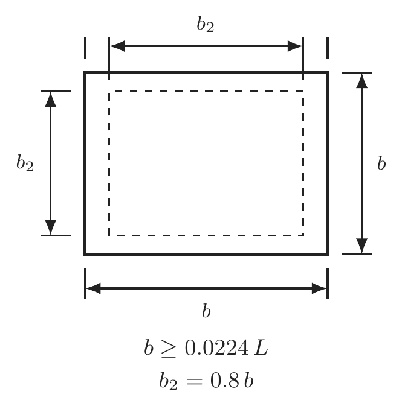
정답: 4
해설
기본모형이 사각형이면 안내표지다. 급할 때는 글자를 읽을 겨를이 없으므로 모양만 보고도 뜻이 갈리게 만들어 두었다.
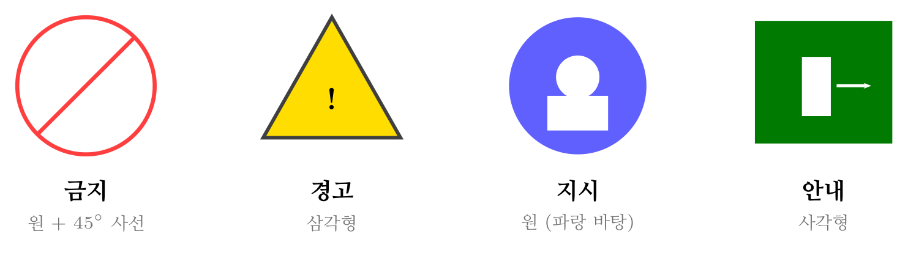
안전보건표지의 기본모형 — 모양만 보고도 뜻이 갈리게 만들었다
오답 분석
① 금지표지는 원에 45° 사선을 그은 모양이다.
② 경고표지는 삼각형이 기본이다(일부 마름모).
③ 지시표지는 파란 바탕의 원이다.
관련 개념 · 암기
시행규칙 별표6·별표7 — 안전보건표지의 종류와 기본모형산업안전보건법 시행규칙 별표6(종류와 형태), 별표7(기본모형). 크기는 안전거리 L에 따라 정해진다.
◈ 암기 금지는 원+사선 · 경고는 삼각 · 지시는 원 · 안내는 사각.
⚖ 근거 법령 — 산업안전보건법 시행규칙 별표 6 · 산업안전보건법 시행규칙 별표 7산업안전보건법 시행규칙 시행 2026. 8. 1.
분류: 보호구 > 안전모·안전대 > 안전보건표지 · 원본 2022.03.05
004빈출도 ★★☆난이도 2·보통개념형safe_A_2026_01_004
산업안전보건법령상 근로자에 대한 일반 건강진단의 실시 시기 기준으로 옳은 것은?
① 사무직에 종사하는 근로자: 1년에 1회 이상
② 사무직에 종사하는 근로자: 2년에 1회 이상
③ 사무직외의 업무에 종사하는 근로자: 6월에 1회 이상
④ 사무직외의 업무에 종사하는 근로자: 2년에 1회 이상
정답: 2
해설
일반건강진단은 사무직 2년에 1회 이상, 사무직 외 1년에 1회 이상이다. 사무직이 더 뜸한 것은 유해인자에 노출될 일이 적기 때문이다.
건강진단 다섯 가지
| 종류 | 대상 | 주기·시기 |
|---|
| 일반 | 모든 근로자 | 사무직 2년 1회 이상 / 그 밖 1년 1회 이상 |
| 특수 | 유해인자 노출 업무·야간작업 종사자 | 유해인자별 6~24개월 |
| 배치전 | 특수건강진단 대상 업무에 새로 배치 | 배치 전 |
| 수시 | 직업성 천식·피부염 등 증상이 보일 때 | 그때그때 |
| 임시 | 같은 부서에 유사 질병이 잇따를 때 | 관서장 명령 |
오답 분석
① 사무직은 2년에 1회 이상이다.
③ 사무직 외는 1년에 1회 이상이다.
④ 사무직 외가 사무직보다 뜸할 수는 없다.
관련 개념 · 암기
산업안전보건법 제129조 · 시행규칙 제197조 — 일반건강진단(일반건강진단), 시행규칙 제197조.
◈ 암기 「일 · 특 · 배 · 수 · 임」 다섯 가지.
⚖ 근거 법령 — 산업안전보건법 제129조 · 산업안전보건법 시행규칙 제197조산업안전보건법 시행 2026. 8. 1. · 산업안전보건법 시행규칙 시행 2026. 8. 1.
① 사업주는 상시 사용하는 근로자의 건강관리를 위하여 건강진단(이하 "일반건강진단"이라 한다)을 실시하여야 한다. 다만, 사업주가 고용노동부령으로 정하는 건강진단을 실시한 경우에는 그 건강진단을 받은 근로자에 대하여 일반건강진단을 실시한 것으로 본다.
② 사업주는 제135조제1항에 따른 특수건강진단기관 또는 「건강검진기본법」 제3조제2호에 따른 건강검진기관(이하 "건강진단기관"이라 한다)에서 일반건강진단을 실시하여야 한다.
③ 일반건강진단의 주기ㆍ항목ㆍ방법 및 비용, 그 밖에 필요한 사항은 고용노동부령으로 정한다.
① 사업주는 상시 사용하는 근로자 중 사무직에 종사하는 근로자(공장 또는 공사현장과 같은 구역에 있지 않은 사무실에서 서무ㆍ인사ㆍ경리ㆍ판매ㆍ설계 등의 사무업무에 종사하는 근로자를 말하며, 판매업무 등에 직접 종사하는 근로자는 제외한다)에 대해서는 2년에 1회 이상, 그 밖의 근로자에 대해서는 1년에 1회 이상 일반건강진단을 실시해야 한다.이 문항이 묻는 자리
② 법 제129조에 따라 일반건강진단을 실시해야 할 사업주는 일반건강진단 실시 시기를 안전보건관리규정 또는 취업규칙에 규정하는 등 일반건강진단이 정기적으로 실시되도록 노력해야 한다.
분류: — > — > 건강진단 · 원본 2018.04.28 · 2021.08.14
005빈출도 ★★★난이도 1·쉬움개념형safe_A_2026_01_005
위험예지훈련의 문제해결 4라운드에 해당하지 않는 것은?
① 현상파악
② 본질추구
③ 대책수립
④ 원인결정
정답: 4
해설
4라운드의 마지막은 목표설정이다. 위험예지훈련은 사고가 난 뒤 원인을 캐는 활동이 아니라, 작업 전에 위험을 짚고 오늘 지킬 것 하나를 정하는 활동이다. 원인을 캐는 것은 재해조사다.

위험예지훈련 4라운드 — 마지막은 「원인결정」이 아니라 목표설정이다
오답 분석
① 1R 현상파악 — 어떤 위험이 숨어 있는가.
② 2R 본질추구 — 이것이 위험의 핵심이다.
③ 3R 대책수립 — 당신이라면 어떻게 하겠는가.
관련 개념 · 암기
위험예지훈련 4라운드4R 뒤에
터치 앤드 콜로 다짐하며 마무리한다.
◈ 암기 「현 · 본 · 대 · 목」.
🃏 관련 암기카드
분류: 무재해운동 > 무재해·위험예지 > 위험예지훈련 · 원본 2016.05.08 · 2019.08.04 · 2022.03.05
006빈출도 ★☆☆난이도 1·쉬움개념형safe_A_2026_01_006
산업안전보건법령상 보안경 착용을 포함하는 안전보건표지 의 종류는?
① 지시표지
② 안내표지
③ 금지표지
④ 경고표지
정답: 1
해설
무언가를 하라고 시키는 것은 지시표지다. 파란 원에 흰 그림을 넣는다.
오답 분석
② 안내표지는 알려 주는 표지로 녹색 사각형이다.
③ 금지표지는 하지 말라는 표지로 원에 빨간 사선을 긋는다.
④ 경고표지는 위험을 알리는 표지로 노란 삼각형이다.
관련 개념 · 암기
시행규칙 별표6 — 지시표지 9종
산업안전보건법 시행규칙 별표6. 지시표지는 방독마스크·방진마스크·보안면·안전모·귀마개·안전화·안전장갑·안전복 착용 등 9종.
⚖ 근거 법령 — 산업안전보건법 시행규칙 별표 6산업안전보건법 시행규칙 시행 2026. 8. 1.
분류: 보호구 > 호흡·눈·귀 > 안전보건표지 · 원본 2021.03.07
007빈출도 ★★☆난이도 1·쉬움개념형safe_A_2026_01_007
헤드십(headship)의 특성에 관한 설명으로 틀린 것은?
① 지휘형태는 권위주의적이다.
② 상사의 권한 증거는 비공식적이다.
③ 상사와 부하의 관계는 지배적이다.
④ 상사와 부하의 사회적 간격은 넓다.
정답: 2
해설
헤드십은 임명으로 주어진 자리이므로 권한의 근거가 공식적이다. 비공식적인 쪽은 구성원이 밀어 올려 세운 리더십이다.
헤드십과 리더십
| 견줄 것 | 헤드십 | 리더십 |
|---|
| 권한 부여 | 위에서 임명 | 아래에서 선출·추종 |
| 권한 근거 | 공식적 | 비공식적 |
| 지휘 형태 | 권위주의적 | 민주주의적 |
| 상사와 부하의 관계 | 지배적 | 개인적 영향 |
| 사회적 간격 | 넓다 | 좁다 |
| 책임 귀속 | 상사에게 | 상사와 부하 모두에게 |
오답 분석
① 헤드십의 지휘형태는 권위주의적이다.
③ 헤드십에서 상사와 부하의 관계는 지배적이다.
④ 헤드십에서 두 사람의 사회적 간격은 넓다.
관련 개념 · 암기
헤드십(headship)과 리더십(leadership)자리에서 나온 권한인가, 사람에게서 나온 권한인가로 갈린다.
◈ 암기 헤드십은 임명·공식·권위주의, 리더십은 선출·비공식·민주주의.
🃏 관련 암기카드
분류: 산업심리 > 집단·리더십 > 헤드십과 리더십 · 원본 2016.03.06 · 2022.04.24
008빈출도 ★★☆난이도 2·보통공식형safe_A_2026_01_008
레빈(Lewin)의 법칙 B = f(P • E) 중 B가 의미하는 것은?
정답: 1
해설
$B = f ( P \cdot E )$에서 B는 행동(Behavior)이다. 사람의 행동은 P(개체)와 E(환경)의 함수다.

레빈의 장 이론 — 행동은 사람과 환경의 함수다
오답 분석
② 경험은 P에 드는 요소다.
③ 환경은 E다.
④ 인간관계는 E에 드는 요소다.
관련 개념 · 암기
레빈의 장(場) 이론P를 바꾸는 것이 교육·적성배치, E를 바꾸는 것이 설비 개선이다. 위험성 감소대책이 공학적 대책을 앞세우는 근거가 여기 있다.
◈ 암기 P는 사람(연령·성격·지능·소질·경험), E는 환경(인간관계·설비·온습도).
🃏 관련 암기카드
분류: 산업심리 > 인간의 행동 > 인간의 행동 · 원본 2018.03.04 · 2022.04.24
009빈출도 ★☆☆난이도 2·보통개념형safe_A_2026_01_009
매슬로우(Maslow)의 인간의 욕구단계 중 5번째 단계에 속하 는 것은?
① 안전 욕구
② 존경의 욕구
③ 사회적 욕구
④ 자아실현의 욕구
정답: 4
해설
생리적 → 안전 → 사회적 → 존경 → 자아실현 다섯 단계이며 5번째가 자아실현이다. 안전 욕구가 2단계라는 것은, 먹고사는 문제 다음으로 절실한 것이 안전이라는 뜻이다.

매슬로우의 욕구 5단계 — 안전은 아래에서 두 번째다
오답 분석
① 안전 욕구는 2단계다.
② 존경의 욕구는 4단계다.
③ 사회적 욕구는 3단계다.
관련 개념 · 암기
매슬로우의 욕구단계설안전을 뒤로 미루는 조직은 사람의 기본 욕구를 거스르는 셈이다.
◈ 암기 「생 · 안 · 사 · 존 · 자」.
🃏 관련 암기카드
분류: 산업심리 > 인간의 행동 > 동기부여 이론 · 원본 2022.04.24
010빈출도 ★☆☆난이도 2·보통개념형safe_A_2026_01_010
산업안전보건법령상 안전보건진단을 받아 안전보건개선계획 의 수립 및 명령을 할 수 있는 대상이 아닌 것은?
① 유해인자의 노출기준을 초과한 사업장
② 산업재해율이 같은 업종 평균 산업재해율의 2배 이상인 사업장
③ 사업주가 필요한 안전조치 또는 보건조치를 이행하지 아 니하여 중대재해가 발생한 사업장
④ 상시근로자 1천명 이상인 사업장에서 직업성 질병자가 연간 2명 이상 발생한 사업장
정답: 4
해설
직업성 질병자 기준은 연간 2명 이상 이되 1천명 이상 사업장은 3명 이상이다. 규모가 크면 사람 수가 많아 발생 건수도 자연히 늘기 때문에 기준을 한 명 올려 잡았다.
오답 분석
① 유해인자 노출기준 초과는 명령 대상이다.
② 같은 업종 평균 재해율의 2배 이상도 대상이다.
③ 조치를 이행하지 않아 중대재해가 발생한 사업장도 대상이다.
관련 개념 · 암기
산업안전보건법 제49조 · 시행규칙 제129조 — 안전보건개선계획 수립 명령(안전보건개선계획의 수립·시행 명령), 시행규칙 제129조. 명령 주체는
지방고용노동관서의 장이다.
◈ 암기 1천명 이상이면 2명이 아니라 3명.
⚖ 근거 법령 — 산업안전보건법 제49조 · 산업안전보건법 시행규칙 제129조산업안전보건법 시행 2026. 8. 1. · 산업안전보건법 시행규칙 시행 2026. 8. 1.
① 고용노동부장관은 다음 각 호의 어느 하나에 해당하는 사업장으로서 산업재해 예방을 위하여 종합적인 개선조치를 할 필요가 있다고 인정되는 사업장의 사업주에게 고용노동부령으로 정하는 바에 따라 그 사업장, 시설, 그 밖의 사항에 관한 안전 및 보건에 관한 개선계획(이하 "안전보건개선계획"이라 한다)을 수립하여 시행할 것을 명할 수 있다. 이 경우 대통령령으로 정하는 사업장의 사업주에게는 제47조에 따라 안전보건진단을 받아 안전보건개선계획을 수립하여 시행할 것을 명할 수 있다. <개정 2026.2.19>
1. 산업재해율이 같은 업종의 규모별 평균 산업재해율보다 높은 사업장
2. 사업주가 필요한 안전조치 또는 보건조치를 이행하지 아니하여 중대재해가 발생한 사업장
3. 대통령령으로 정하는 수 이상의 직업성 질병자가 발생한 사업장이 문항이 묻는 자리
3의2. 제56조제1항제2호에 따른 산업재해가 발생한 사업장으로서 대통령령으로 정하는 사업장
4. 제106조에 따른 유해인자의 노출기준을 초과한 사업장
② 사업주는 안전보건개선계획을 수립할 때에는 산업안전보건위원회의 심의를 거쳐야 한다. 다만, 산업안전보건위원회가 설치되어 있지 아니한 사업장의 경우에는 근로자대표의 의견을 들어야 한다.
① 법 제96조제3항에 따른 안전검사기관의 평가 기준은 다음 각 호와 같다.
1. 인력ㆍ시설 및 장비의 보유 여부와 관리능력
2. 안전검사 업무 수행능력
3. 안전검사 업무를 위탁한 사업주의 만족도
② 제1항에 따른 안전검사기관에 대한 평가 방법 및 평가 결과의 공개에 관한 사항은 제17조제2항부터 제8항까지의 규정을 준용한다. 이 경우 "안전관리전문기관 또는 보건관리전문기관"은 "안전검사기관"으로 본다.
분류: 안전보건관리 체제 > 안전보건관리규정 > 안전보건개선계획 · 원본 2022.04.24
011빈출도 ★☆☆난이도 2·보통개념형safe_A_2026_01_011
산업안전보건법령상 안전관리자의 업무가 아닌 것은? (단, 그 밖에 고용노동부장관이 정하는 사항은 제외한다.)
① 업무 수행 내용의 기록
② 산업재해에 관한 통계의 유지·관리·분석을 위한 보좌 및 지도·조언
③ 안전교육계획의 수립 및 안전교육 실시에 관한 보좌 및 지도·조언
④ 작업장 내에서 사용되는 전체 환기장치 및 국소 배기장 치 등에 관한 설비의 점검
정답: 4
해설
환기장치·국소배기장치 점검은 보건관리자의 업무다. 유해물질과 분진을 다루는 설비라 보건 영역에 든다.
오답 분석
① 업무 수행 내용의 기록·유지는 안전관리자의 업무다.
② 산업재해 통계에 대한 보좌와 지도·조언도 그렇다.
③ 안전교육계획 수립과 실시에 대한 보좌도 그렇다.
관련 개념 · 암기
시행령 제18조·제22조 — 안전관리자와 보건관리자의 업무
산업안전보건법 시행령 제18조(안전관리자의 업무), 제22조(보건관리자의 업무).
⚖ 근거 법령 — 산업안전보건법 시행령 제18조 · 산업안전보건법 시행령 제22조산업안전보건법 시행 2026. 8. 1. · 산업안전보건법 시행령 시행 2026. 8. 1.
① 사업주는 사업장에 제15조제1항 각 호의 사항 중 보건에 관한 기술적인 사항에 관하여 사업주 또는 안전보건관리책임자를 보좌하고 관리감독자에게 지도ㆍ조언하는 업무를 수행하는 사람(이하 "보건관리자"라 한다)을 두어야 한다.이 문항이 묻는 자리
② 보건관리자를 두어야 하는 사업의 종류와 사업장의 상시근로자 수, 보건관리자의 수ㆍ자격ㆍ업무ㆍ권한ㆍ선임방법, 그 밖에 필요한 사항은 대통령령으로 정한다.
③ 대통령령으로 정하는 사업의 종류 및 사업장의 상시근로자 수에 해당하는 사업장의 사업주는 보건관리자에게 그 업무만을 전담하도록 하여야 한다. <신설 2021.5.18>
④ 고용노동부장관은 산업재해 예방을 위하여 필요한 경우로서 고용노동부령으로 정하는 사유에 해당하는 경우에는 사업주에게 보건관리자를 제2항에 따라 대통령령으로 정하는 수 이상으로 늘리거나 교체할 것을 명할 수 있다. <개정 2021.5.18>
⑤ 대통령령으로 정하는 사업의 종류 및 사업장의 상시근로자 수에 해당하는 사업장의 사업주는 제21조에 따라 지정받은 보건관리 업무를 전문적으로 수행하는 기관(이하 "보건관리전문기관"이라 한다)에 보건관리자의 업무를 위탁할 수 있다. <개정 2021.5.18>
① 보건관리자의 업무는 다음 각 호와 같다.
1. 산업안전보건위원회 또는 노사협의체에서 심의ㆍ의결한 업무와 안전보건관리규정 및 취업규칙에서 정한 업무
2. 안전인증대상기계등과 자율안전확인대상기계등 중 보건과 관련된 보호구(保護具) 구입 시 적격품 선정에 관한 보좌 및 지도ㆍ조언
3. 법 제36조에 따른 위험성평가에 관한 보좌 및 지도ㆍ조언
4. 법 제110조에 따라 작성된 물질안전보건자료의 게시 또는 비치에 관한 보좌 및 지도ㆍ조언
5. 제31조제1항에 따른 산업보건의의 직무(보건관리자가 별표 6 제2호에 해당하는 사람인 경우로 한정한다)
6. 해당 사업장 보건교육계획의 수립 및 보건교육 실시에 관한 보좌 및 지도ㆍ조언
7. 해당 사업장의 근로자를 보호하기 위한 다음 각 목의 조치에 해당하는 의료행위(보건관리자가 별표 6 제2호 또는 제3호에 해당하는 경우로 한정한다)
가. 자주 발생하는 가벼운 부상에 대한 치료
나. 응급처치가 필요한 사람에 대한 처치
다. 부상ㆍ질병의 악화를 방지하기 위한 처치
라. 건강진단 결과 발견된 질병자의 요양 지도 및 관리
마. 가목부터 라목까지의 의료행위에 따르는 의약품의 투여
8. 작업장 내에서 사용되는 전체 환기장치 및 국소 배기장치 등에 관한 설비의 점검과 작업방법의 공학적 개선에 관한 보좌 및 지도ㆍ조언이 문항이 묻는 자리
9. 사업장 순회점검, 지도 및 조치 건의
10. 산업재해 발생의 원인 조사ㆍ분석 및 재발 방지를 위한 기술적 보좌 및 지도ㆍ조언
11. 산업재해에 관한 통계의 유지ㆍ관리ㆍ분석을 위한 보좌 및 지도ㆍ조언
12. 법 또는 법에 따른 명령으로 정한 보건에 관한 사항의 이행에 관한 보좌 및 지도ㆍ조언
13. 업무 수행 내용의 기록ㆍ유지
14. 그 밖에 보건과 관련된 작업관리 및 작업환경관리에 관한 사항으로서 고용노동부장관이 정하는 사항
② 보건관리자는 제1항 각 호에 따른 업무를 수행할 때에는 안전관리자와 협력해야 한다.
③ 사업주는 보건관리자가 제1항에 따른 업무를 원활하게 수행할 수 있도록 권한ㆍ시설ㆍ장비ㆍ예산, 그 밖의 업무 수행에 필요한 지원을 해야 한다. 이 경우 보건관리자가 별표 6 제2호 또는 제3호에 해당하는 경우에는 고용노동부령으로 정하는 시설 및 장비를 지원해야 한다.
④ 보건관리자의 배치 및 평가ㆍ지도에 관하여는 제18조제2항 및 제3항을 준용한다. 이 경우 "안전관리자"는 "보건관리자"로, "안전관리"는 "보건관리"로 본다.
분류: 안전보건관리 체제 > 선임·자격 > 안전관리자 · 원본 2022.04.24
012빈출도 ★★☆난이도 1·쉬움개념형safe_A_2026_01_012
학습지도의 형태 중 참가자에게 일정한 역할을 주어 실제적 으로 연기를 시켜봄으로서 자기의 역할을 보다 확실히 인식 시키는 방법은?
① 포럼(Forum)
② 심포지엄(Symposium)
③ 롤 플레잉(Role playing)
④ 사례연구법(Case study method)
정답: 3
해설
롤 플레잉(역할연기법)이다. 머리로 아는 것과 몸으로 해 보는 것은 다르므로 태도교육에 효과가 크다.
오답 분석
① 포럼은 자료를 먼저 제시하고 참가자의 질문으로 토의를 이끈다.
② 심포지엄은 전문가가 견해를 발표한 뒤 질문을 받는다.
④ 사례연구법은 실제 사례를 놓고 원인과 대책을 토의한다.
관련 개념 · 암기
교육 3단계와 교육방법의 대응교육 3단계와 방법의 짝.
◈ 암기 지식은 강의 · 기능은 실습 · 태도는 토의와 역할연기.
🃏 관련 암기카드
분류: 안전보건교육 > 토의법 > 교육방법 · 원본 2012.08.26 · 2022.04.24
013빈출도 ★☆☆난이도 2·보통개념형safe_A_2026_01_013
보호구 자율안전확인 고시상 자율안전확인 보호구에 표시하 여야 하는 사항을 모두 고른 것은?
ㄱ. 모델명 ㄴ. 제조 번호 ㄷ. 사용 기한 ㄹ. 자율안전확인 번호
① ㄱ, ㄴ, ㄷ
② ㄱ, ㄴ, ㄹ
③ ㄱ, ㄷ, ㄹ
④ ㄴ ,ㄷ ,ㄹ
정답: 2
해설
형식·모델명 · 규격·등급 · 제조자명 · 제조번호와 제조연월 · 자율안전확인 번호를 표시한다. 「안전인증 번호」가 아니라 자율안전확인 번호라는 점이 갈림길이다.
오답 분석
① 안전인증 대상이 아니므로 안전인증 번호는 쓰지 않는다.
③ 성능기준 합격 여부는 표시사항이 아니다.
④ 사업자등록번호도 표시사항이 아니다.
관련 개념 · 암기
산업안전보건법 제89조 — 자율안전확인의 신고
(자율안전확인의 신고), 보호구 자율안전확인 고시.
⚖ 근거 법령 — 산업안전보건법 제89조산업안전보건법 시행 2026. 8. 1.
① 안전인증대상기계등이 아닌 유해ㆍ위험기계등으로서 대통령령으로 정하는 것(이하 "자율안전확인대상기계등"이라 한다)을 제조하거나 수입하는 자는 자율안전확인대상기계등의 안전에 관한 성능이 고용노동부장관이 정하여 고시하는 안전기준(이하 "자율안전기준"이라 한다)에 맞는지 확인(이하 "자율안전확인"이라 한다)하여 고용노동부장관에게 신고(신고한 사항을 변경하는 경우를 포함한다)하여야 한다. 다만, 다음 각 호의 어느 하나에 해당하는 경우에는 신고를 면제할 수 있다.이 문항이 묻는 자리
1. 연구ㆍ개발을 목적으로 제조ㆍ수입하거나 수출을 목적으로 제조하는 경우
2. 제84조제3항에 따른 안전인증을 받은 경우(제86조제1항에 따라 안전인증이 취소되거나 안전인증표시의 사용 금지 명령을 받은 경우는 제외한다)
3. 다른 법령에 따라 안전성에 관한 검사나 인증을 받은 경우로서 고용노동부령으로 정하는 경우
② 고용노동부장관은 제1항 각 호 외의 부분 본문에 따른 신고를 받은 경우 그 내용을 검토하여 이 법에 적합하면 신고를 수리하여야 한다.
③ 제1항 각 호 외의 부분 본문에 따라 신고를 한 자는 자율안전확인대상기계등이 자율안전기준에 맞는 것임을 증명하는 서류를 보존하여야 한다.
④ 제1항 각 호 외의 부분 본문에 따른 신고의 방법 및 절차, 그 밖에 필요한 사항은 고용노동부령으로 정한다.
분류: 안전보건교육 > 교육계획·평가 > 자율안전확인 표시 · 원본 2022.04.24
014빈출도 ★☆☆난이도 2·보통개념형safe_A_2026_01_014
하인리히의 사고예방원리 5단계 중 교육 및 훈련의 개선, 인 사조정, 안전관리규정 및 수칙의 개선 등을 행하는 단계는?
① 사실의 발견
② 분석 평가
③ 시정방법의 선정
④ 시정책의 적용
정답: 3
해설
원인을 알아낸 뒤 무엇으로 고칠지 고르는 단계가 시정방법의 선정이다. 교육·훈련 개선, 인사조정, 규정 개선이 모두 여기 든다.
오답 분석
① 사실의 발견은 자료를 모아 현상을 파악하는 단계다.
② 분석 평가는 모은 자료에서 원인을 찾는 단계다.
④ 시정책의 적용은 고른 방법을 실제로 실행하는 단계다.
관련 개념 · 암기
하인리히의 사고예방 5단계하인리히 사고예방 5단계. 마지막 단계에서
3E(Engineering · Education · Enforcement)를 적용한다.
◈ 암기 「조 · 발 · 분 · 선 · 적」 — 안전조직 · 사실의 발견 · 분석평가 · 시정방법의 선정 · 시정책의 적용.
⚠ 주의사항 원본은 이 단계를 3단계로 적었으나 이는 세는 방식의 차이다. 하인리히 원문은 1단계를 「안전조직」으로 두므로 4단계가 된다. 「교육·인사조정·규정 개선 = 시정방법의 선정」이라는 짝만 알면 번호와 무관하게 풀린다.
🃏 관련 암기카드
분류: 안전보건교육 > 교육계획·평가 > 사고예방원리 · 원본 2022.04.24
015빈출도 ★★☆난이도 1·쉬움개념형safe_A_2026_01_015
주의(Attention)의 특성에 관한 설명 중 틀린 것은?
① 고도의 주의는 장시간 지속하기 어렵다.
② 한 지점에 주의를 집중하면 다른 곳의 주의는 약해진다.
③ 최고의 주의 집중은 의식의 과잉 상태에서 가능하다.
④ 여러 자극을 지각할 때 소수의 현란한 자극에 선택적 주 의를 기울이는 경향이 있다.
정답: 3
해설
의식의 과잉은 최고의 집중이 아니라 주의가 한 곳에 얼어붙어 다른 것을 못 보는 위험한 상태다. 돌발사태에 머릿속이 하얘지며 몸이 굳는 것이 그것이다. 최고의 집중은 Ⅲ단계(명쾌)에서 이루어진다.
오답 분석
① 주의의 변동성 — 고도의 긴장은 몇 분을 넘기기 어렵다.
② 주의의 방향성 — 한쪽에 쏠리면 다른 쪽이 빈다.
④ 주의의 선택성 — 모든 자극을 다 받아들일 수 없어 일부만 고른다.
관련 개념 · 암기
주의의 3특성과 의식수준 5단계의식수준 5단계. 0(무의식) · Ⅰ(흐림) · Ⅱ(이완) · Ⅲ(명쾌, 신뢰도 0.999999 이상) · Ⅳ(과긴장).
◈ 암기 Ⅲ이 최고이고 Ⅳ는 오히려 나쁘다. 주의의 3특성은 「선 · 변 · 방」.
🃏 관련 암기카드
분류: 안전보건교육 > 교육 이론 > 주의의 특성 · 원본 2017.05.07 · 2022.03.05
016빈출도 ★☆☆난이도 2·보통개념형safe_A_2026_01_016
보호구 안전인증 고시상 전로 또는 평로 등의 작업 시 사용 하는 방열두건의 차광도 번호는?
① #2 ~ #3
② #3 ~ #5
③ #6 ~ #8
④ #9 ~ #11
정답: 2
해설
전로·평로 작업용 방열두건은 #3 ~ #5다. 차광도 번호는 빛을 얼마나 막는지를 나타내므로 밝은 곳일수록 큰 번호를 쓴다.
차광보안경·방열두건의 차광도 번호
| 차광도 | 쓰는 곳 | 비고 |
|---|
| #2 ~ #3 | 비교적 어두운 작업 | |
| #3 ~ #5 | 전로 또는 평로 등의 작업 | 답 |
| #6 ~ #8 | 전기로·용광로 등 더 밝은 작업 | |
| #9 ~ #11 | 아크용접 등 매우 밝은 작업 | |
오답 분석
① #2 ~ #3은 밝기가 더 낮은 작업용이다.
③ #6 ~ #8은 전기로·용광로 등 더 밝은 작업용이다.
④ #9 ~ #11은 아크용접용이다.
관련 개념 · 암기
산업안전보건법 제84조 — 보호구 안전인증 고시의 차광도(안전인증), 보호구 안전인증 고시.
◈ 암기 번호가 클수록 어둡다 — 작업이 밝을수록 큰 번호.
⚖ 근거 법령 — 산업안전보건법 제84조산업안전보건법 시행 2026. 8. 1.
① 유해ㆍ위험기계등 중 근로자의 안전 및 보건에 위해(危害)를 미칠 수 있다고 인정되어 대통령령으로 정하는 것(이하 "안전인증대상기계등"이라 한다)을 제조하거나 수입하는 자(고용노동부령으로 정하는 안전인증대상기계등을 설치ㆍ이전하거나 주요 구조 부분을 변경하는 자를 포함한다. 이하 이 조 및 제85조부터 제87조까지의 규정에서 같다)는 안전인증대상기계등이 안전인증기준에 맞는지에 대하여 고용노동부장관이 실시하는 안전인증을 받아야 한다.
② 고용노동부장관은 다음 각 호의 어느 하나에 해당하는 경우에는 고용노동부령으로 정하는 바에 따라 제1항에 따른 안전인증의 전부 또는 일부를 면제할 수 있다.
1. 연구ㆍ개발을 목적으로 제조ㆍ수입하거나 수출을 목적으로 제조하는 경우
2. 고용노동부장관이 정하여 고시하는 외국의 안전인증기관에서 인증을 받은 경우
3. 다른 법령에 따라 안전성에 관한 검사나 인증을 받은 경우로서 고용노동부령으로 정하는 경우
③ 안전인증대상기계등이 아닌 유해ㆍ위험기계등을 제조하거나 수입하는 자가 그 유해ㆍ위험기계등의 안전에 관한 성능 등을 평가받으려면 고용노동부장관에게 안전인증을 신청할 수 있다. 이 경우 고용노동부장관은 안전인증기준에 따라 안전인증을 할 수 있다.
④ 고용노동부장관은 제1항 및 제3항에 따른 안전인증(이하 "안전인증"이라 한다)을 받은 자가 안전인증기준을 지키고 있는지를 3년 이하의 범위에서 고용노동부령으로 정하는 주기마다 확인하여야 한다. 다만, 제2항에 따라 안전인증의 일부를 면제받은 경우에는 고용노동부령으로 정하는 바에 따라 확인의 전부 또는 일부를 생략할 수 있다.
⑤ 제1항에 따라 안전인증을 받은 자는 안전인증을 받은 안전인증대상기계등에 대하여 고용노동부령으로 정하는 바에 따라 제품명ㆍ모델명ㆍ제조수량ㆍ판매수량 및 판매처 현황 등의 사항을 기록하여 보존하여야 한다.
⑥ 고용노동부장관은 근로자의 안전 및 보건에 필요하다고 인정하는 경우 안전인증대상기계등을 제조ㆍ수입 또는 판매하는 자에게 고용노동부령으로 정하는 바에 따라 해당 안전인증대상기계등의 제조ㆍ수입 또는 판매에 관한 자료를 공단에 제출하게 할 수 있다.
⑦ 안전인증의 신청 방법ㆍ절차, 제4항에 따른 확인의 방법ㆍ절차, 그 밖에 필요한 사항은 고용노동부령으로 정한다.
분류: 안전점검·인증 > 안전인증·검사 > 방열두건 · 원본 2022.04.24
017빈출도 ★★☆난이도 1·쉬움개념형safe_A_2026_01_017
산업재해의 분석 및 평가를 위하여 재해발생 건수 등의 추이 에 대해 한계선을 설정하여 목표 관리를 수행하는 재해통계 분석기법은?
① 관리도
② 안전 T점수
③ 파레토도
④ 특성 요인도
정답: 1
해설
관리도다. 관리상한선과 관리하한선을 긋고 월별 재해 건수가 그 안에 머무는지 본다.
오답 분석
② 안전 T점수는 과거와 현재의 재해율에 통계적으로 뜻있는 차이가 있는지 판정한다.
③ 파레토도는 원인을 크기 순으로 늘어놓아 중점 관리 대상을 고른다.
④ 특성 요인도는 결과에 영향을 준 요인을 생선뼈 모양으로 가지 친다.
관련 개념 · 암기
재해통계 분석기법
네 가지. 관리도 · 파레토도 · 특성요인도 · 클로즈 분석.
🃏 관련 암기카드
분류: 재해조사 및 분석 > 재해조사·통계 > 재해통계 분석 · 원본 2017.03.05 · 2022.04.24
018빈출도 ★★☆난이도 1·쉬움개념형safe_A_2026_01_018
버드(Bird)의 재해분포에 따르면 20건의 경상(물적, 인적상 해)사고가 발생했을 때 무상해·무사고(위험순간) 고장 발생 건수는?
① 200
② 600
③ 1200
④ 12000
정답: 3
해설
버드의 비율은 1 : 10 : 30 : 600이다. 경상이 10일 때 무상해·무사고가 600이므로, 경상 20이면 600 × 2 = 1,200이다.
하인리히와 버드의 재해구성비율
| 구분 | 하인리히 | 버드 |
|---|
| 비율 | 1 : 29 : 300 | 1 : 10 : 30 : 600 |
| 중상 또는 폐질 | 1 | 1 |
| 경상 | 29 | 10 |
| 무상해 사고(물적 손실) | 300 | 30 |
| 무상해·무사고(위험순간) | — | 600 |
오답 분석
① 200은 경상 20에 10을 곱한 값이다.
② 600은 경상이 10일 때의 값이다.
④ 12000은 자릿수가 한 자리 크다.
관련 개념 · 암기
버드의 재해구성비율 1 : 10 : 30 : 600하인리히가 300단계까지 보았다면 버드는
아무 일도 없어 보이는 600까지 내려가 보았다. 아차사고를 세는 근거다.
◈ 암기 하인리히 1:29:300 · 버드 1:10:30:600.
🃏 관련 암기카드
분류: 재해조사 및 분석 > 상해 분류 > 재해구성비율 · 원본 2017.05.07 · 2022.04.24
019빈출도 ★☆☆난이도 3·어려움계산형safe_A_2026_01_019
A사업장의 현황이 다음과 같을 때 이 사업장의 강도율은?
근로자수 : 500명
연근로시간수 : 2400시간
신체장해등급 2급 : 3명, 10급 : 5명
의사 진단에 의한 휴업일수 : 1500일
① 0.22
② 2.22
③ 22.28
④ 222.88
정답: 3
해설
$\text{강도율} = \dfrac{\text{근로손실일수}}{\text{연근로시간수}} \times 1 {,} 000$이다. 1,000 근로시간당 근로손실일수로, 재해가 얼마나 무겁게 났는지를 나타낸다.
재해율 공식 묶음
| 지표 | 식 | 무엇을 보나 |
|---|
| 도수율 | 재해 건수 ÷ 연근로시간수 × 1,000,000 | 얼마나 자주 |
| 강도율 | 근로손실일수 ÷ 연근로시간수 × 1,000 | 얼마나 무겁게 |
| 연천인율 | 재해자 수 ÷ 상시근로자 수 × 1,000 | 1,000명당 몇 명 |
| 환산도수율 | 도수율 ÷ 10 | 평생 재해 건수 |
| 환산강도율 | 강도율 × 100 | 평생 손실일수 |
| 종합재해지수 | √(도수율 × 강도율) | 빈도와 강도를 함께 |

도수율과 강도율 — 곱하는 수가 다르다
오답 분석
① 0.22는 1,000을 곱하지 않은 값이다.
② 2.22는 자릿수가 한 자리 어긋난 값이다.
④ 222.88은 10,000 이상을 곱했을 때 나오는 값이다.
관련 개념 · 암기
재해율 산정 공식사망·영구 전노동불능은 근로손실일수
7,500일, 일시 전노동불능은
휴업일수 × 300/365로 환산한다.
◈ 암기 도수율은 100만, 강도율은 1,000. 곱하는 수가 갈림길이다.
⚠ 주의사항 원본 문항에 딸린 「현황」 표는 문제지의 별도 상자에 있어 옮기지 못했다. 근로손실일수와 연근로시간수를 식에 넣고 1,000을 곱한다는 뼈대만 잡으면 된다.
🃏 관련 암기카드
분류: 재해조사 및 분석 > 재해율 계산 > 강도율 · 원본 2022.04.24
020빈출도 ★☆☆난이도 2·보통개념형safe_A_2026_01_020
재해예방의 4원칙에 대한 설명으로 틀린 것은?
① 재해발생은 반드시 원인이 있다.
② 손실과 사고와의 관계는 필연적이다.
③ 재해는 원인을 제거하면 예방이 가능하다.
④ 재해를 예방하기 위한 대책은 반드시 존재한다.
정답: 2
해설
손실우연의 원칙이다. 같은 높이에서 떨어져도 멀쩡한 사람이 있고 사망하는 사람이 있다. 손실의 크기는 우연히 정해지므로 「필연적」은 틀렸다. 손실이 작았다고 사고가 가벼웠던 것이 아니다 — 아차사고를 그냥 넘기면 안 되는 근거다.
오답 분석
① 원인계기의 원칙 — 재해에는 반드시 원인이 있고 서로 이어져 있다.
③ 예방가능의 원칙 — 원인을 없애면 재해는 막을 수 있다.
④ 대책선정의 원칙 — 원인에 맞는 대책은 반드시 있다.
관련 개념 · 암기
재해예방의 4원칙대책은 3E(기술·교육·규제)로 세운다.
◈ 암기 「손 · 원 · 예 · 대」. 답으로 가장 잦은 것은 손실우연 — 「필연」·「비례」로 바꿔 놓는다.
🃏 관련 암기카드
분류: 재해조사 및 분석 > 재해 발생 이론 > 재해예방 4원칙 · 원본 2022.04.24
제2과목 인간공학 및 시스템안전공학
021빈출도 ★★★난이도 2·보통계산형safe_A_2026_01_021
어떤 결함수를 분석하여 minimal cut set을 구한 결과 다음 과 같았다. 각 기본사상의 발생확률은 qi, i = 1, 2, 3라 할 때, 정상사상의 발생확률함수로 맞는 것은?
k₁ = [1, 2], k₂ = [1, 3], k₃ = [2, 3]
① q1q2 + q1q2 - q2q3
② q1q2 + q1q3 - q2q3
③ q1q2 + q1q3 + q2q3 - q1q2q3
④ q1q2 + q1q3 + q2q3 - 2q1q2q3
정답: 4
해설
최소 컷셋이 세 개이므로 정상사상은 셋 중 어느 하나라도 일어나면 발생한다. 포함배제 원리를 쓰되, 두 컷셋의 교집합도 세 컷셋의 교집합도 모두 $q_{1} q_{2} q_{3}$이라 계수가 $-3 + 1 =-2$로 정리된다.
오답 분석
① 같은 항 $q_{1} q_{2}$가 두 번 나오고 세 컷셋을 다 더하지도 않았다.
② 세 번째 컷셋 $q_{2} q_{3}$를 더하지 않고 빼 버렸다.
③ 겹치는 부분을 한 번만 뺐다. 컷셋이 세 개면 2배를 빼야 한다.
관련 개념 · 암기
포함배제 원리에 의한 정상사상 확률포함배제 원리. 컷셋이 세 개일 때 $P ( A \cup B \cup C ) = P ( A ) + P ( B ) + P ( C ) - P ( AB ) - P ( AC ) - P ( BC ) + P ( \mathrm{ABC} )$. 이 문제처럼 모든 교집합이 같은 값이면 계수가
-3+1 = -2로 정리된다. 컷셋 두 개면 계수가 -1이라는 점과 짝지어 외운다.
◈ 암기 컷셋 둘이면 겹침을 1번, 셋이면 2배를 뺀다.
🃏 관련 암기카드
분류: 결함수분석 > FTA 기호·구조 > 최소 컷셋 확률 계산 · 원본 2012.05.20 · 2016.03.06 · 2019.04.27 · 2022.03.05
022빈출도 ★☆☆난이도 1·쉬움개념형safe_A_2026_01_022
FTA에서 사용되는 논리게이트 중 입력과 반대되는 현상으 로 출력되는 것은?
① 부정 게이트
② 억제 게이트
③ 배타적 OR 게이트
④ 우선적 AND 게이트
정답: 1
해설
부정 게이트(NOT gate)다. 입력이 참이면 출력이 거짓, 입력이 거짓이면 출력이 참으로 뒤집힌다.
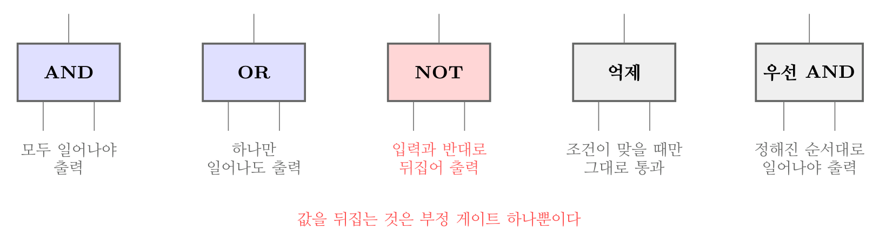
FTA 논리 게이트 — 값을 뒤집는 것은 부정 게이트뿐이다
오답 분석
② 억제 게이트는 조건이 충족될 때만 입력이 그대로 출력되는 수정 게이트다. 뒤집는 것이 아니다.
③ 배타적 OR 게이트는 입력 중 오직 하나만 참일 때 출력이 나온다.
④ 우선적 AND 게이트는 입력이 정해진 순서대로 일어났을 때만 출력이 나온다.
관련 개념 · 암기
FTA 논리게이트FTA 게이트. 기본은
AND(모두 일어나야)와
OR(하나만 일어나도)이고, 여기에 조건을 붙인 것이
수정 게이트(억제·조합·배타적 OR·우선적 AND·위험지속)다. 부정 게이트만 유일하게
값을 뒤집는다.
◈ 암기 값을 뒤집는 것은 부정 게이트 하나뿐.
🃏 관련 암기카드
분류: 결함수분석 > FTA 기호·구조 > FTA 논리게이트 · 원본 2022.03.05
023빈출도 ★☆☆난이도 2·보통개념형safe_A_2026_01_023
FT도에서 최소 컷셋을 올바르게 구한 것은?
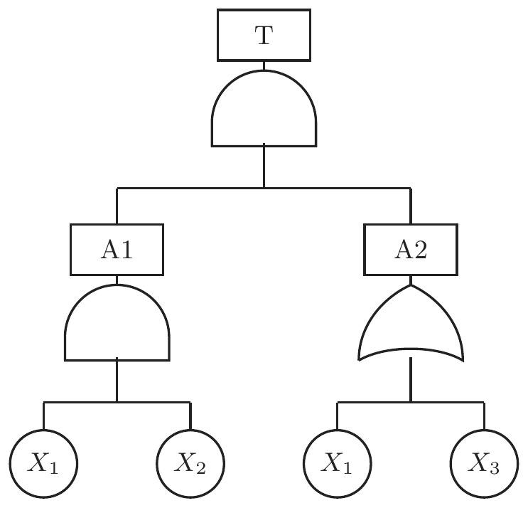
① (XI, X2)
② (X1, X3)
③ (X2, X3)
④ (X1, X2, X3)
정답: 1
해설
컷셋은 그 사상이 모두 일어나면 정상사상이 일어나는 조합이고, 최소 컷셋은 그중 더 줄일 수 없는 것이다. 부울 대수로 정리한 뒤 남는 항 가운데 다른 항을 포함하는 것을 지우면 최소 컷셋이 나온다.
오답 분석
② 문제의 FT 구조에서는 성립하지 않는 조합이다.
③ 마찬가지로 성립하지 않는다.
④ 세 사상을 모두 묶은 것은 최소가 아니다. 더 작은 컷셋이 있으면 그쪽이 최소 컷셋이다.
관련 개념 · 암기
최소 컷셋과 최소 패스셋컷셋과 패스셋.
최소 컷셋은 시스템의 위험성(그것만 무너지면 끝나는 지점),
최소 패스셋은 시스템의 안전성(그것만 살아 있으면 버티는 지점)을 나타낸다. 최소 컷셋의
크기가 작을수록 취약하다.
◈ 암기 컷셋은 위험성, 패스셋은 안전성. 컷셋이 작을수록 취약하다.
⚠ 주의사항 원본 문항의 FT 그림은 이 책에 옮기지 못했다. 이런 유형은 「부울 대수로 전개 → 흡수법칙으로 정리 → 남은 항이 최소 컷셋」이라는 절차만 익혀 두면 그림이 달라져도 풀린다.
🃏 관련 암기카드
분류: 결함수분석 > 컷셋·확률 > 최소 컷셋 · 원본 2021.08.14
024빈출도 ★★☆난이도 1·쉬움개념형safe_A_2026_01_024
인간공학에 대한 설명으로 틀린 것은?
① 인간-기계 시스템의 안전성, 편리성, 효율성을 높인다.
② 인간을 작업과 기계에 맞추는 설계 철학이 바탕이 된다.
③ 인간이 사용하는 물건, 설비, 환경의 설계에 적용된다.
④ 인간의 생리적, 심리적인 면에서의 특성이나 한계점을 고려한다.
정답: 2
해설
방향이 거꾸로다. 인간공학은 기계와 작업을 사람에게 맞추는 학문이다(fitting the task to the man). 사람을 기계에 맞추라는 것은 인간공학이 나오기 전의 낡은 발상이며, 그렇게 하면 사람이 무리하다 다친다.
오답 분석
① 안전성·편리성·효율성을 함께 높이는 것이 목적이다.
③ 물건·설비·환경 어디에나 적용된다.
④ 사람의 생리적·심리적 특성과 한계를 전제로 삼는다.
관련 개념 · 암기
인간공학의 정의와 기본 철학
인간공학의 기본 철학. 「사람을 일에 맞추지 말고 일을 사람에게 맞춘다」. 이 한 줄이 인간공학 문항의 절반을 가른다. 위험성 감소대책에서 공학적 대책이 관리적 대책보다 앞서는 것도 같은 뿌리다.
🃏 관련 암기카드
분류: — > — > 인간공학의 정의 · 원본 2019.04.27 · 2022.04.24
025빈출도 ★☆☆난이도 2·보통공식형safe_A_2026_01_025
1 sone에 관한 설명으로 ( )에 알맞은 수치는?
1 sone : ( ㄱ )Hz, ( ㄴ )dB의 음압수준을 가진 순음의 크기
① ㄱ : 1000, ㄴ : 1
② ㄱ : 4000, ㄴ : 1
③ ㄱ : 1000, ㄴ : 40
④ ㄱ : 4000, ㄴ : 40
정답: 3
해설
1 sone은 1,000 [Hz] 순음이 40 [dB] 일 때의 음량으로 정의한다. 「천 헤르츠, 사십 데시벨」을 묶어 외운다.
phon과 sone
| phon | sone | 비고 |
|---|
| 40 | 1 | 1,000 [Hz] 순음 40 [dB]가 기준 |
| 50 | 2 | phon이 10 오르면 sone은 2배 |
| 60 | 4 | |
| 70 | 8 | |
| 80 | 16 | |
오답 분석
① 40 [dB]이 아니라 1 [dB]로 잡았다.
② 주파수와 음압 둘 다 틀렸다.
④ 기준 주파수를 4,000 [Hz]로 잡았다. 4,000 [Hz]는 사람 귀가 가장 예민한 대역이지 sone의 기준이 아니다.
관련 개념 · 암기
음량의 척도 — phon과 sone음량의 두 척도.
phon은 1,000 [Hz] 순음과 같게 들리는 음압수준(dB)이고,
sone은 그 크기를 비율로 나타낸 값이다. 관계식은 $\mathrm{sone} = 2^{( \mathrm{phon} - 40 ) / 10}$이며,
phon이 10 오를 때마다 sone은 2배가 된다. 40 phon = 1 sone이 출발점이다.
◈ 암기 1,000 [Hz] · 40 [dB] = 1 sone. phon 10 오르면 sone 2배.
🃏 관련 암기카드
분류: — > — > 음량 척도 · 원본 2022.04.24
026빈출도 ★☆☆난이도 2·보통개념형safe_A_2026_01_026
인간공학적 연구에 사용되는 기준 척도의 요건 중 다음 설 명에 해당하는 것은?
기준 척도는 측정하고자 하는 변수 외의 다른 변수들의 영향을 받아서는 안된다.
정답: 4
해설
무오염성(freedom from contamination)은 재려는 것 말고 다른 것이 섞여 들어가지 않아야 한다는 요건이다. 예를 들어 작업 능률을 재려는데 측정값이 그날의 실내 온도에 좌우된다면 그 척도는 오염된 것이다.
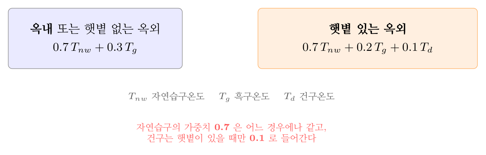
WBGT 두 가지 식 — 햇볕이 있으면 건구온도가 들어온다
오답 분석
① 신뢰성은 같은 조건에서 다시 재도 같은 값이 나오는가를 말한다.
② 적절성(타당성)은 재려는 것을 실제로 재고 있는가를 말한다.
③ 검출성은 척도의 요건이 아니라 신호 탐지의 개념이다.
관련 개념 · 암기
인간공학 기준 척도의 4요건적절성(타당성) · 무오염성 · 신뢰성 · 민감도. 「
적 · 무 · 신 · 민」으로 외운다. 적절성과 무오염성은 헷갈리기 쉬운데,
적절성은 「맞는 것을 재는가」, 무오염성은 「딴 것이 안 섞였는가」로 갈린다.
◈ 암기 「적 · 무 · 신 · 민」 — 적절성은 「맞는 것을 재나」, 무오염성은 「딴 것이 안 섞였나」.
🃏 관련 암기카드
분류: — > — > 기준 척도의 요건 · 원본 2022.03.05
027빈출도 ★☆☆난이도 1·쉬움개념형safe_A_2026_01_027
통화이해도 척도로서 통화 이해도에 영향을 주는 잡음의 영 향을 추정하는 지수는?
① 명료도 지수
② 통화 간섭 수준
③ 이해도 점수
④ 통화 공진 수준
정답: 2
해설
통화 간섭 수준(PSIL, Preferred-octave Speech Interference Level)이다. 소음의 옥타브 밴드 음압수준을 평균 내어 잡음이 말소리를 얼마나 방해하는가를 추정한다.
오답 분석
① 명료도 지수(AI)는 각 주파수 대역의 신호 대 잡음비에 가중치를 매겨 더한 값이다. 잡음만이 아니라 신호와 잡음의 관계를 본다.
③ 이해도 점수는 실제로 말을 들려주고 몇 [%]를 알아들었는지 재는 값이다.
④ 「통화 공진 수준」이라는 척도는 없다.
관련 개념 · 암기
통화이해도 척도네 가지.
명료도 지수(AI) · 통화 간섭 수준(PSIL) · 이해도 점수 · 소음기준곡선(NC). 무엇을 재는지로 가른다 —
PSIL은 잡음 쪽,
AI는 신호 대 잡음비,
이해도 점수는 사람이 실제로 알아들은 비율.
◈ 암기 PSIL은 잡음, AI는 신호 대 잡음비, 이해도 점수는 실제로 알아들은 비율.
🃏 관련 암기카드
분류: 정보입력표시 > 청각·경보 > 통화이해도 · 원본 2022.03.05
028빈출도 ★☆☆난이도 1·쉬움개념형safe_A_2026_01_028
위험분석 기법 중 시스템 수명주기 관점에서 적용 시점이 가장 빠른 것은?
정답: 1
해설
PHA(예비위험분석)다. 시스템을 어떻게 만들지 아직 구상만 하고 있는 개념 형성 단계에서 「이 시스템에 어떤 위험이 있을 수 있는가」를 크게 훑어보는 최초의 분석이다.
오답 분석
② FHA(결함위험분석)는 설계·개발 단계에서 여러 하청업체가 나눠 만든 서브시스템이 서로 맞물릴 때의 위험을 본다.
③ OHA(운용위험분석)는 운용 단계에서 사용·정비·수송 중의 위험을 본다.
④ SHA(시스템위험분석)는 서브시스템이 하나로 합쳐진 뒤의 위험을 본다. PHA보다 뒤다.
관련 개념 · 암기
시스템 수명주기와 위험분석 기법시스템 수명주기와 분석기법의 짝.
구상기 PHA → 설계·개발기 FHA·FMEA·FTA → 생산기 안전성 검토 → 운용기 O&SHA. 「
예비(P)가 가장 먼저」라는 이름 자체가 힌트다.
◈ 암기 예비(P)가 가장 먼저 — 구상기 PHA → 설계기 FHA·FMEA·FTA → 운용기 O&SHA.
🃏 관련 암기카드
분류: 시스템 위험분석 > PHA·FHA·FMEA > 시스템 위험분석 · 원본 2022.04.24
029빈출도 ★☆☆난이도 1·쉬움개념형safe_A_2026_01_029
예비위험분석(PHA)에서 식별된 사고의 범주가 아닌 것은?
① 중대(critical)
② 한계적(marginal)
③ 파국적(catastrophic)
④ 수용가능(acceptable)
정답: 4
해설
PHA의 네 범주는 파국적 · 중대 · 한계적 · 무시가능이다. 「수용가능」이 아니라 무시가능(negligible)이다.
PHA의 위험성 4범주
| 범주 | 뜻 | 조치 |
|---|
| 파국적 catastrophic | 사망 또는 시스템 완전 손실 | 설계 변경 필수 |
| 중대 critical | 심각한 부상, 시스템 중대 손상 | 즉시 시정 |
| 한계적 marginal | 경미한 부상, 제어 가능 | 통제하며 운용 |
| 무시가능 negligible | 부상이나 손상이 없음 | 조치 불필요 |
오답 분석
① 중대(critical)는 범주에 든다.
② 한계적(marginal)도 범주에 든다.
③ 파국적(catastrophic)도 범주에 든다.
관련 개념 · 암기
예비위험분석(PHA)의 위험성 범주PHA는
구상 단계에서 하는 최초의 위험분석이라, 위험을 네 등급으로 크게 훑는다.
◈ 암기 「파 · 중 · 한 · 무」 — 넷째는 수용가능이 아니라 무시가능.
🃏 관련 암기카드
분류: 시스템 위험분석 > PHA·FHA·FMEA > PHA 위험성 범주 · 원본 2022.03.05
030빈출도 ★☆☆난이도 3·어려움계산형safe_A_2026_01_030
자동차를 타이어가 4개인 하나의 시스템으로 볼 때, 타이어 1개가 파열될 확률이 0.01이라면, 이 자동차의 신뢰도는 약 얼마인가?
① 0.91
② 0.93
③ 0.96
④ 0.99
정답: 3
해설
타이어는 하나만 터져도 차가 못 간다므로 직렬이다. 하나의 신뢰도가 $1 - 0.01 = 0.99$이고 넷이 직렬이므로 $0.99^{4} \fallingdotseq 0.96$이다.

직렬과 병렬 — 하나만 고장 나도 멈추면 직렬이다
오답 분석
① 0.91은 지수를 잘못 잡았을 때 나온다.
② 0.93 도 계산과 맞지 않는다.
④ 0.99는 타이어 한 개의 신뢰도다. 넷을 곱하는 것을 잊으면 이 답을 고른다.
관련 개념 · 암기
직렬·병렬 신뢰도직렬은 $R = R_{1} R_{2} \cdots R_{n}$으로 부품이 늘수록 나빠지고, 병렬은 $R = 1 - ( 1 - R_{1} ) ( 1 - R_{2} ) \cdots$로 늘수록 좋아진다.
◈ 암기 하나만 고장 나도 멈추면 직렬, 하나가 고장 나도 버티면 병렬.
🃏 관련 암기카드
분류: 신뢰성 > 가용도·수리율 > 직렬 신뢰도 · 원본 2021.08.14
031빈출도 ★☆☆난이도 2·보통공식형safe_A_2026_01_031
설비보전에서 평균수리시간을 나타내는 것은?
① MTBF
② MTTR
③ MTTF
④ MTBP
정답: 2
해설
MTTR(Mean Time To Repair, 평균수리시간)이다. 보전도를 나타내는 지표이며, 짧을수록 좋다.
신뢰성·보전성 지표
| 지표 | 뜻 | 무엇을 나타내나 |
|---|
| MTBF | 고장과 고장 사이의 평균 시간 | 신뢰도 — 수리하며 쓰는 설비 |
| MTTF | 고장까지의 평균 시간 | 신뢰도 — 수리하지 않는 부품 |
| MTTR | 평균 수리시간 | 보전도 — 짧을수록 좋다 |
| 가용도 | MTBF ÷ (MTBF + MTTR) | 쓸 수 있는 시간의 비율 |
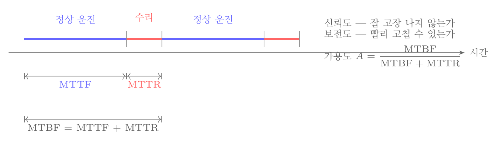
MTBF · MTTF · MTTR의 관계
오답 분석
① MTBF(Mean Time Between Failures)는 고장과 고장 사이의 평균 시간으로, 수리하며 쓰는 설비의 신뢰도 지표다.
③ MTTF(Mean Time To Failure)는 고장까지의 평균 시간으로, 수리하지 않고 버리는 부품의 신뢰도 지표다.
④ MTBP라는 지표는 없다.
관련 개념 · 암기
신뢰성·보전성 지표와 가용도신뢰성과 보전성의 구분.
신뢰도는 「잘 고장 나지 않는가」(MTBF · MTTF),
보전도는 「빨리 고칠 수 있는가」(MTTR)다. 둘을 합친 것이 가용도 $A = \mathrm{MTBF} / ( \mathrm{MTBF} + \mathrm{MTTR} )$이며, $\mathrm{MTBF} = \mathrm{MTTF} + \mathrm{MTTR}$의 관계도 함께 외운다.
◈ 암기 MTBF·MTTF는 신뢰도, MTTR는 보전도.
🃏 관련 암기카드
분류: 신뢰성 > 가용도·수리율 > 신뢰성·보전성 지표 · 원본 2021.08.14
032빈출도 ★☆☆난이도 2·보통개념형safe_A_2026_01_032
근골격계질환 작업분석 및 평가 방법인 OWAS의 평가요소 를 모두 고른 것은?
ㄱ. 상지 ㄴ. 무게(하중) ㄷ. 하지 ㄹ. 허리
① ㄱ, ㄴ
② ㄱ, ㄷ, ㄹ
③ ㄴ, ㄷ, ㄹ
④ ㄱ, ㄴ, ㄷ, ㄹ
정답: 4
해설
OWAS는 허리 · 팔(상지) · 다리(하지) · 하중(무게) 네 가지를 코드로 매겨 자세를 평가한다. 네 요소를 모두 보므로 정답은 ④다. 사진이나 동영상으로 자세를 찍어 코드만 매기면 되므로 현장에서 빠르게 쓸 수 있다는 것이 이 기법의 장점이다.
오답 분석
① 두 요소만으로는 OWAS의 평가가 성립하지 않는다.
② 하중을 빼면 무거운 물건을 드는 작업의 부담을 놓친다.
③ 허리를 빼면 근골격계 부담의 핵심을 놓친다.
관련 개념 · 암기
근골격계 작업분석 기법 — OWAS의 비교.
OWAS(허리·상지·하지·하중, 전신 자세),
RULA(상지 중심),
REBA(전신, 간병 등 예측 어려운 자세),
NLE/LI(들기 작업의 무게 한계). 무엇을 보려는지로 고른다.
◈ 암기 허리 · 상지 · 하지 · 하중 네 가지 모두 본다.
🃏 관련 암기카드
분류: 인간계측·작업공간 > 작업공간·자세 > 근골격계 작업분석 · 원본 2022.04.24
033빈출도 ★☆☆난이도 1·쉬움개념형safe_A_2026_01_033
스트레스의 영향으로 발생된 신체 반응의 결과인 스트레인 (strain)을 측정하는 척도가 잘못 연결된 것은?
① 인지적 활동 - EEG
② 육체적 동적 활동 - GSR
③ 정신 운동적 활동 - EOG
④ 국부적 근육 활동 – EMG
정답: 2
해설
육체적 동적 활동은 심박수·산소소비량으로 잰다. GSR(피부전기반사)은 손바닥의 땀 분비에 따른 전기저항 변화를 보는 것이라 정서적 긴장을 재는 척도다. 몸을 얼마나 썼는지와는 상관이 없다.
오답 분석
① 인지적 활동은 EEG(뇌전도)로 잰다. 뇌파를 보는 것이니 알맞다.
③ 정신 운동적 활동은 EOG(안전도)로 잰다. 눈의 움직임을 보는 것이니 알맞다.
④ 국부적 근육 활동은 EMG(근전도)로 잰다. 근육의 전기적 활동을 보는 것이니 알맞다.
관련 개념 · 암기
스트레인의 생리적 측정 척도생리적 측정 척도.
EEG 뇌파(인지) · EOG 안구운동(정신운동) · EMG 근전도(국부 근육) · ECG 심전도와 산소소비량(전신 동적 활동) · GSR 피부전기반사(정서적 긴장). 「어디를 재는가」로 짝지으면 된다.
◈ 암기 EEG 뇌파 · EOG 눈 · EMG 근육 · GSR 땀(정서).
🃏 관련 암기카드
분류: 인간계측·작업공간 > 생리·에너지 > 생리적 측정 · 원본 2021.08.14
034빈출도 ★☆☆난이도 3·어려움계산형safe_A_2026_01_034
태양광선이 내리쬐는 옥외장소의 자연습구온도 20℃, 흑구 온도 18℃, 건구온도 30℃ 일 때 습구흑구온도지수(WBGT)는?
① 20.6℃
② 22.5℃
③ 25.0℃
④ 28.5℃
정답: 1
해설
햇볕이 있는 옥외는 건구온도까지 넣는 식을 쓴다. $\mathrm{WBGT} = 0.7 \times \text{자연습구} + 0.2 \times \text{흑구} + 0.1 \times \text{건구}$이므로 $0.7 \times 20 + 0.2 \times 18 + 0.1 \times 30 = 14 + 3.6 + 3 = 20.6$ [℃]다.
오답 분석
② 옥내 식($0.7 \times \text{습구} + 0.3 \times \text{흑구}$)을 쓰면 20.6이 아닌 다른 값이 나온다.
③ 계수를 잘못 잡았을 때 나오는 값이다.
④ 건구온도 30에 가까운 값으로, 가중치를 무시하고 단순 평균했을 때 나온다.
관련 개념 · 암기
습구흑구온도지수(WBGT)WBGT 두 가지 식.
옥내 또는 햇볕 없는 옥외 : 0.7 자연습구 + 0.3 흑구,
햇볕 있는 옥외 : 0.7 자연습구 + 0.2 흑구 + 0.1 건구.
자연습구의 가중치 0.7은 어느 경우에나 같고, 건구는 햇볕이 있을 때만 0.1로 들어간다는 점이 갈림길이다.
◈ 암기 자연습구 0.7은 언제나 같고, 건구 0.1은 햇볕이 있을 때만.
🃏 관련 암기카드
분류: 작업환경관리 > 온열·조명·진동 > WBGT · 원본 2022.04.24
035빈출도 ★★☆난이도 1·쉬움개념형safe_A_2026_01_035
HAZOP 기법에서 사용하는 가이드워드와 그 의미가 잘못 연결된 것은?
① Part of : 성질상의 감소
② As well as : 성질상의 증가
③ Other than : 기타 환경적인 요인
④ More/Less : 정량적인 증가 또는 감소
정답: 3
해설
Other than은 「완전한 대체」, 곧 의도한 것과 전혀 다른 것이 일어남을 뜻한다. 「기타 환경적인 요인」이 아니다.
오답 분석
① Part of는 성질상의 감소로, 일부만 이루어진 상태를 뜻한다.
② As well as는 성질상의 증가로, 의도한 것에 더해 다른 것이 함께 일어남을 뜻한다.
④ More/Less는 정량적인 증가 또는 감소를 뜻한다.
관련 개념 · 암기
HAZOP의 가이드워드No/Not(설계 의도의 완전한 부정) · More/Less(양적 증감) · As well as(질적 증가) · Part of(질적 감소) · Reverse(설계 의도와 반대) · Other than(완전한 대체).
양적인 것은 More/Less, 질적인 것은 As well as / Part of로 짝지어 두면 된다.
◈ 암기 양은 More/Less, 질은 As well as / Part of. Other than은 완전한 대체.
🃏 관련 암기카드
분류: 정보입력표시 > 표시장치·조종장치 > HAZOP 가이드워드 · 원본 2020.08.22 · 2022.04.24
036빈출도 ★☆☆난이도 2·보통개념형safe_A_2026_01_036
밝은 곳에서 어두운 곳으로 갈 때 망막에 시홍이 형성되는 생리적 과정인 암조응이 발생하는데 완전 암조응(Dark adaptation)이 발생하는데 소요되는 시간은?
① 약 3 ~ 5분
② 약 10 ~ 15분
③ 약 30 ~ 40분
④ 약 60 ~ 90분
정답: 3
해설
완전한 암조응(암순응)에는 30 ~ 40분이 걸린다. 간상세포의 시홍(로돕신)이 다시 만들어지는 데 그만큼 시간이 필요하기 때문이다.
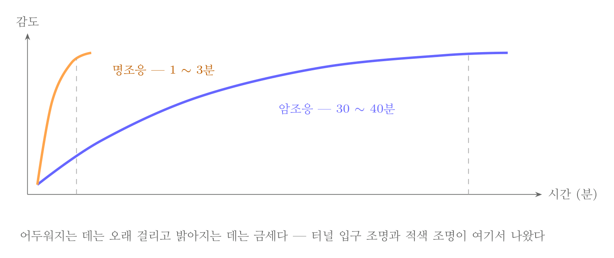
명순응과 암순응 — 어두워지는 데 30~40분, 밝아지는 데 1~3분
오답 분석
① 3 ~ 5분은 명조응(밝은 곳으로 나갈 때)에 걸리는 시간이다.
② 10 ~ 15분이면 어느 정도 보이기 시작하지만 완전한 암조응은 아니다.
④ 60 ~ 90분은 지나치게 길다.
관련 개념 · 암기
명순응과 암순응순응의 비대칭.
어두워지는 데는 30 ~ 40분, 밝아지는 데는 1 ~ 3분으로 크게 다르다. 터널 입구에 조명을 두어 밝기를 서서히 낮추는 것, 야간작업 전에 미리 어두운 곳에서 눈을 적응시키는 것이 모두 이 성질에서 나온 대책이다.
적색 조명은 간상세포를 자극하지 않아 암조응을 지키면서도 볼 수 있게 해 준다.
◈ 암기 어두워지는 데 30~40분, 밝아지는 데 1~3분.
🃏 관련 암기카드
분류: 정보입력표시 > 시각 > 시각의 순응 · 원본 2022.04.24
037빈출도 ★☆☆난이도 1·쉬움개념형safe_A_2026_01_037
양식 양립성의 예시로 가장 적절한 것은?
① 자동차 설계 시 고도계 높낮이 표시
② 방사능 사업장에 방사능 폐기물 표시
③ 청각적 자극 제시와 이에 대한 음성 응답
④ 자동차 설계 시 제어장치와 표시장치의 배열
정답: 3
해설
양식(modality) 양립성은 자극을 받는 감각과 반응하는 방식이 서로 맞는가를 말한다. 귀로 들려주고 입으로 답하게 하는 것이 그 예다. 반대로 소리로 물어보고 손으로 버튼을 누르게 하면 그만큼 반응이 느려진다.

양립성 네 가지 — 어긋나면 급할 때 반드시 실수한다
오답 분석
① 고도계의 높낮이 표시는 운동 양립성의 예다. 실제 움직임의 방향과 표시의 방향이 맞는 경우다.
② 방사능 표지는 개념 양립성의 예다. 사람이 이미 그 그림을 방사능으로 알고 있기 때문이다.
④ 제어장치와 표시장치의 배열은 공간 양립성의 예다. 위치가 서로 대응하는 경우다.
관련 개념 · 암기
양립성의 네 가지양립성 네 가지.
공간(위치) · 운동(방향) · 개념(뜻) · 양식(감각과 반응의 방식). 양립성이 어긋난 설계는 평소에는 그럭저럭 쓰이다가
급할 때 반드시 실수를 부른다. 이것이 양립성이 안전의 문제인 이유다.
◈ 암기 공간(위치) · 운동(방향) · 개념(뜻) · 양식(감각과 반응).
🃏 관련 암기카드
분류: 정보입력표시 > 청각·경보 > 양립성 · 원본 2022.04.24
038빈출도 ★☆☆난이도 2·보통개념형safe_A_2026_01_038
FTA(Fault Tree Analysis)에 관한 설명으로 옳은 것은?
① 정성적 분석만 가능하다.
② 복잡하고 대형화된 시스템의 신뢰성 분석 및 안정성 분 석에 이용되는 기법이다.
③ FT에 동일한 사건이 중복되어 나타나는 경우 상향식 (Bottom-up)으로 정상 사건 T의 발생 확률을 계산할 수 있다.
④ 기초사건과 생략사건의 확률 값이 주어지게 되더라도 정 상 사건의 최종적인 발생확률을 계산할 수 없다.
정답: 2
해설
FTA는 복잡하고 대형화된 시스템의 신뢰성과 안전성을 분석하는 기법이다. 정상사상을 먼저 정하고 그 원인을 거꾸로 파고드는 연역적·하향식(top-down) 기법이며, 각 사상의 확률을 알면 정량적 계산도 된다.
오답 분석
① 정성적 분석만 되는 것이 아니다. 확률을 넣으면 정량적 분석도 된다.
③ 같은 사건이 중복되어 나타나면 단순 상향식 계산은 값이 틀어진다. 부울 대수로 정리해 최소 컷셋을 구한 뒤 계산해야 한다.
④ 기초사상의 확률이 주어지면 정상사상의 발생확률을 계산할 수 있다.
관련 개념 · 암기
FTA와 FMEA의 대비FTA는 연역적·하향식·정량 가능,
FMEA는 귀납적·상향식·정성 중심이다. FTA는 1962년 벨연구소가 미니트맨 미사일의 발사 제어 시스템을 분석하며 만든 기법이라, 처음부터
크고 복잡한 시스템을 겨냥하고 있었다.
◈ 암기 FTA는 연역·하향·정량 가능, FMEA는 귀납·상향·정성.
🃏 관련 암기카드
분류: 정보입력표시 > 표시장치·조종장치 > FTA의 특징 · 원본 2022.04.24
039빈출도 ★☆☆난이도 3·어려움계산형safe_A_2026_01_039
반사경 없이 모든 방향으로 빛을 발하는 점광원에서 3m 떨 어진 곳의 조도가 300lux라면 2m 떨어진 곳에서 조도(lux)는?
정답: 2
해설
조도는 거리의 제곱에 반비례한다. 광도 $I = 300 \times 3^{2} = 2 {,} 700$ [cd]이므로 2 [m] 지점은 $2 {,} 700 / 2^{2} = 675$ [lux]다.
오답 분석
① 375는 거리에 단순 반비례한다고 보았을 때에 가깝다.
③ 875는 계산과 맞지 않는다.
④ 975 도 계산과 맞지 않는다.
관련 개념 · 암기
조도의 역제곱 법칙$E = I / r^{2}$. 국소조명이 전반조명보다 적은 전력으로 밝기를 얻는 것도, 후드의 제어풍속이 거리에 따라 급격히 떨어지는 것도 같은 꼴의 관계다.
◈ 암기 거리가 절반이면 조도는 4배.
🃏 관련 암기카드
분류: 정보입력표시 > 시각 > 조도의 거리 법칙 · 원본 2022.03.05
040빈출도 ★☆☆난이도 2·보통공식형safe_A_2026_01_040
시각적 식별에 영향을 주는 각 요소에 대한 설명 중 틀린 것은?
① 조도는 광원의 세기를 말한다.
② 휘도는 단위 면적당 표면에 반사 또는 방출되는 광량을 말한다.
③ 반사율은 물체의 표면에 도달하는 조도와 광도의 비를 말한다.
④ 광도 대비란 표적의 광도와 배경의 광도의 차이를 배경 광도로 나눈 값을 말한다.
정답: 1
해설
조도는 광원의 세기가 아니라 물체의 표면에 도달하는 빛의 양이다. 광원 자체의 세기는 광도다.
빛에 관한 네 가지 용어
| 용어 | 뜻 | 단위 |
|---|
| 광속 | 광원이 내보내는 빛의 총량 | lm (루멘) |
| 광도 | 광원 자체의 세기 | cd (칸델라) |
| 조도 | 표면에 도달하는 빛의 양 | lx (럭스) |
| 휘도 | 표면에서 반사·방출되는 빛의 양 | cd/m² |
오답 분석
② 휘도는 단위 면적당 반사 또는 방출되는 광량이 맞다.
③ 반사율은 표면에 도달한 빛 가운데 반사되는 비율이다.
④ 광도 대비는 표적과 배경의 광도 차를 배경 광도로 나눈 값이 맞다.
관련 개념 · 암기
광속 · 광도 · 조도 · 휘도조도는 $E = I / r^{2}$로
거리의 제곱에 반비례한다.
◈ 암기 광도는 나가는 쪽, 조도는 닿는 쪽, 휘도는 되돌아오는 쪽.
🃏 관련 암기카드
분류: 정보입력표시 > 시각 > 광 관련 용어 · 원본 2022.03.05
제3과목 기계위험방지기술
041빈출도 ★☆☆난이도 2·보통개념형safe_A_2026_01_041
밀링 작업 시 안전수칙으로 옳지 않은 것은?
① 테이블 위에 공구나 기타 물건 등을 올려놓지 않는다.
② 제품 치수를 측정할 때는 절삭 공구의 회전을 정지한다.
③ 강력 절삭을 할 때는 일감을 바이스에 짧게 물린다.
④ 상·하, 좌·우 이송장치의 핸들은 사용 후 풀어 둔다.
정답: 3
해설
강력 절삭일수록 일감을 바이스에 깊게 물려야 한다. 짧게 물리면 큰 절삭력에 일감이 튕겨 나간다. 「강력하게 깎으니 단단히 잡는다」로 생각하면 방향이 가르면 된다.
오답 분석
① 테이블 위의 물건은 회전부에 말리거나 떨어져 사고를 부른다.
② 회전 중 측정은 손이 커터에 말려 들어가는 대표적 원인이다.
④ 핸들을 끼워 둔 채로 두면 기계가 돌 때 함께 돌아 사람을 친다.
관련 개념 · 암기
공작기계 공통 안전수칙
공작기계 공통 3금지. 회전 중 칩 제거 금지 · 회전 중 측정 금지 · 장갑 착용 금지. 밀링은 여기에 커터 날에 손 대지 않기(반드시 브러시 사용)가 더해진다.
🃏 관련 암기카드
분류: 공작기계 > 선반·밀링·드릴 > 밀링 안전 · 원본 2022.04.24
042빈출도 ★☆☆난이도 2·보통개념형safe_A_2026_01_042
산업안전보건법령상 연삭기 작업 시 작업자가 안심하고 작 업을 할 수 있는 상태는?
① 탁상용 연삭기에서 숫돌과 작업 받침대의 간격이 5mm이다.
② 덮개 재료의 인장강도는 224MPa이다.
③ 숫돌 교체 후 2분 정도 시험운전을 실시하여 해당 기계 의 이상 여부를 확인하였다.
④ 작업 시작 전 1분 정도 시험운전을 실시하여 해당 기계 의 이상여부를 확인하였다.
정답: 4
해설
작업 시작 전에는 1분 이상 시험운전을 한다. 숫돌은 눈에 안 보이는 균열이 있으면 고속 회전 중 산산조각 나므로, 사람이 없는 상태에서 먼저 돌려 보는 것이다.
오답 분석
① 숫돌과 작업 받침대(워크레스트)의 간격은 3 [mm] 이내 여야 한다. 5 [mm]는 넓어서 공작물이 끼어 들어간다.
② 덮개 재료의 인장강도는 274.5 [MPa] 이상 이어야 한다. 224 [MPa]는 모자란다.
③ 숫돌을 교체한 뒤에는 3분 이상 시험운전을 해야 한다. 2분으로는 모자란다.
관련 개념 · 암기
안전보건규칙 제122조·제123조 — 연삭기의 안전기준안전보건규칙 제122조(연삭기 덮개), 제123조. 숫자 묶음 —
작업 시작 전 1분 이상 · 교체 후 3분 이상 · 워크레스트 간격 3 [mm] 이내 · 플랜지 지름 숫돌의 1/3 이상 · 덮개 인장강도 274.5 [MPa] 이상.
◈ 암기 작업 전 1분, 교체 후 3분.
⚖ 근거 법령 — 산업안전보건기준에 관한 규칙 제122조 · 산업안전보건기준에 관한 규칙 제123조산업안전보건기준에 관한 규칙 시행 2026. 3. 2.
① 사업주는 회전 중인 연삭숫돌(지름이 5센티미터 이상인 것으로 한정한다)이 근로자에게 위험을 미칠 우려가 있는 경우에 그 부위에 덮개를 설치하여야 한다.
② 사업주는 연삭숫돌을 사용하는 작업의 경우 작업을 시작하기 전에는 1분 이상, 연삭숫돌을 교체한 후에는 3분 이상 시험운전을 하고 해당 기계에 이상이 있는지를 확인하여야 한다.이 문항이 묻는 자리
③ 제2항에 따른 시험운전에 사용하는 연삭숫돌은 작업시작 전에 결함이 있는지를 확인한 후 사용하여야 한다.이 문항이 묻는 자리
④ 사업주는 연삭숫돌의 최고 사용회전속도를 초과하여 사용하도록 해서는 아니 된다.
⑤ 사업주는 측면을 사용하는 것을 목적으로 하지 않는 연삭숫돌을 사용하는 경우 측면을 사용하도록 해서는 아니 된다.
제123조(롤러기의 울 등 설치) 사업주는 합판ㆍ종이ㆍ천 및 금속박 등을 통과시키는 롤러기로서 근로자가 위험해질 우려가 있는 부위에는 울 또는 가이드롤러(guide roller) 등을 설치하여야 한다.
분류: 공작기계 > 연삭기 > 연삭기 안전 · 원본 2022.04.24
043빈출도 ★★★난이도 2·보통계산형safe_A_2026_01_043
연삭기에서 숫돌의 바깥지름이 150mm 일 경우 평형플랜지 지름은 몇 mm 이상이어야 하는가?
정답: 2
해설
평형플랜지의 지름은 숫돌 바깥지름의 1/3 이상 이어야 하므로 $150 \times 1 / 3 = 50$ [mm] 이상이다. 플랜지가 작으면 숫돌을 제대로 붙들지 못해 회전 중 깨진다.
연삭기 숫자 묶음
| 항목 | 기준 | 까닭 |
|---|
| 플랜지 지름 | 숫돌 지름의 1/3 이상 | 작으면 숫돌을 못 잡아 파열 |
| 워크레스트 간격 | 3 [mm] 이내 | 벌어지면 공작물이 끼어 들어감 |
| 작업 시작 전 시운전 | 1분 이상 | 보이지 않는 균열을 걸러냄 |
| 숫돌 교체 후 시운전 | 3분 이상 | 새 숫돌은 더 오래 돌려 본다 |
| 덮개 인장강도 | 274.5 [MPa] 이상 | 파편을 막아야 함 |

연삭기의 숫자 묶음
오답 분석
① 30 [mm]는 1/5로, 기준에 못 미친다.
③ 60 [mm]는 기준(50 [mm])보다 크므로 「이상」 조건은 만족하나 문제가 묻는 최소값이 아니다.
④ 90 [mm] 도 마찬가지로 최소값이 아니다.
관련 개념 · 암기
안전보건규칙 제122조 — 연삭숫돌 플랜지안전보건규칙 제122조.
「1/3 이상」이라는 비율 하나만 알면 숫돌 지름이 얼마로 바뀌어도 풀린다. 문제가
최소값을 묻는지 확인하는 습관이 필요하다.
◈ 암기 플랜지 1/3 · 받침대 3 [mm] · 1분과 3분 · 274.5 [MPa].
⚖ 근거 법령 — 산업안전보건기준에 관한 규칙 제122조산업안전보건기준에 관한 규칙 시행 2026. 3. 2.
① 사업주는 회전 중인 연삭숫돌(지름이 5센티미터 이상인 것으로 한정한다)이 근로자에게 위험을 미칠 우려가 있는 경우에 그 부위에 덮개를 설치하여야 한다.이 문항이 묻는 자리
② 사업주는 연삭숫돌을 사용하는 작업의 경우 작업을 시작하기 전에는 1분 이상, 연삭숫돌을 교체한 후에는 3분 이상 시험운전을 하고 해당 기계에 이상이 있는지를 확인하여야 한다.
③ 제2항에 따른 시험운전에 사용하는 연삭숫돌은 작업시작 전에 결함이 있는지를 확인한 후 사용하여야 한다.
④ 사업주는 연삭숫돌의 최고 사용회전속도를 초과하여 사용하도록 해서는 아니 된다.
⑤ 사업주는 측면을 사용하는 것을 목적으로 하지 않는 연삭숫돌을 사용하는 경우 측면을 사용하도록 해서는 아니 된다.
분류: 공작기계 > 연삭기 > 연삭기 플랜지 · 원본 2012.05.20 · 2015.03.08 · 2022.03.05
044빈출도 ★★☆난이도 1·쉬움개념형safe_A_2026_01_044
조작자의 신체부위가 위험한계 밖에 위치하도록 기계의 조 작 장치를 위험구역에서 일정거리 이상 떨어지게 하는 방호 장치는?
① 덮개형 방호장치
② 차단형 방호장치
③ 위치제한형 방호장치
④ 접근반응형 방호장치
정답: 3
해설
위치제한형 방호장치다. 프레스의 양수조작식이 대표다. 두 손이 버튼 위에 있으면 손이 금형 사이에 있을 수 없다는 논리를 쓴다. 그래서 두 버튼 사이를 300 [mm] 이상 벌려 한 손으로 누르지 못하게 한다.
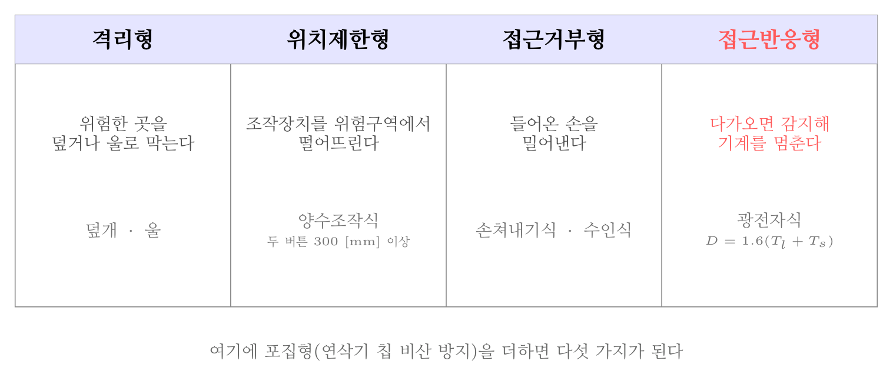
방호장치의 분류 — 접근거부형은 밀어내고 접근반응형은 멈춘다
오답 분석
① 덮개형(격리형)은 위험한 부분을 물리적으로 덮어 접근을 막는다.
② 「차단형」은 격리형의 다른 표현으로 쓰이나, 이 문항이 묻는 「거리를 두게 하는」 방식은 아니다.
④ 접근반응형은 사람이 다가오면 감지해 기계를 멈춘다. 광전자식이 그 예다.
관련 개념 · 암기
방호장치의 분류 다섯 가지격리형(덮개·울) · 위치제한형(양수조작식) · 접근거부형(손쳐내기식) · 접근반응형(광전자식) · 포집형(연삭기 칩 비산 방지).
접근거부형은 밀어내고, 접근반응형은 멈춘다는 차이도 자주 나온다.
◈ 암기 접근거부형은 밀어내고, 접근반응형은 멈춘다.
🃏 관련 암기카드
분류: 기계 일반 > 위험점·방호 > 방호장치의 분류 · 원본 2013.08.18 · 2022.04.24
045빈출도 ★★☆난이도 1·쉬움개념형safe_A_2026_01_045
보기와 같은 기계요소가 단독으로 발생시키는 위험점은?
밀링커터, 둥근톱날
정답: 3
해설
절단점은 회전하는 운동부 자체 또는 그 회전하는 기계 부분의 돌출부에서 생긴다. 다른 물체와 짝을 이루지 않고 단독으로 위험을 만든다는 점이 갈림길이다. 밀링 커터, 둥근톱 날, 벨트의 이음 부분이 그 예다.

위험점 여섯 가지 — 「무엇과 무엇 사이인가」로 갈린다
오답 분석
① 협착점은 왕복운동부와 고정부 사이에서 생긴다. 짝이 있어야 한다.
② 끼임점은 회전운동부와 고정부 사이에서 생긴다. 역시 짝이 있어야 한다.
④ 물림점은 서로 반대로 도는 두 회전체 사이에서 생긴다. 짝이 둘이다.
관련 개념 · 암기
기계설비의 위험점위험점 여섯 가지.
협착점(왕복 + 고정) · 끼임점(회전 + 고정) · 절단점(회전체 단독) · 물림점(회전 + 회전) · 접선물림점(회전체의 접선, 벨트와 풀리) · 회전말림점(회전축에 감김).
「무엇과 무엇 사이인가」로 갈리며, 절단점만 짝이 없다.
◈ 암기 절단점만 짝이 없다.
🃏 관련 암기카드
분류: 기계 일반 > 위험점·방호 > 위험점 · 원본 2018.03.04 · 2022.04.24
046빈출도 ★★☆난이도 3·어려움계산형safe_A_2026_01_046
인장강도가 250 N/mm2인 강판에서 안전율이 4라면 이 강 판의 허용응력(N/mm2)은 얼마인가?
① 42.5
② 62.5
③ 82.5
④ 102.5
정답: 2
해설
$\text{안전율} = \dfrac{\text{극한강도}}{\text{허용응력}}$이므로 $\text{허용응력} = 250 / 4 = 62.5$ [N/mm²]다.
오답 분석
① 42.5는 계산이 맞지 않는다.
③ 82.5는 3으로 나눈 값에 가깝다.
④ 102.5는 2.44로 나눈 값으로 안전율 4와 맞지 않는다.
관련 개념 · 암기
안전율(안전계수)
$S = \dfrac{\text{극한강도}}{\text{허용응력}} = \dfrac{\text{파단하중}}{\text{안전하중}}$. 안전율은 모르는 것에 대한 여유다. 재료가 불균일하거나 하중이 반복되거나 사용 조건이 가혹할수록 크게 잡는다.
🃏 관련 암기카드
분류: 기계 일반 > 안전조건·안전율 > 안전율 · 원본 2018.08.19 · 2022.04.24
047빈출도 ★☆☆난이도 1·쉬움개념형safe_A_2026_01_047
선반에서 절삭 가공 시 발생하는 칩을 짧게 끊어지도록 공 구에 설치되어 있는 방호장치의 일종인 칩 제거 기구를 무 엇이라 하는가?
① 칩 브레이커
② 칩 받침
③ 칩 쉴드
④ 칩 커터
정답: 1
해설
칩 브레이커다. 바이트에 홈이나 턱을 만들어 칩이 길게 이어지지 못하고 짧게 부러지도록 한다. 길게 감긴 칩은 뜨겁고 날카로워 손을 베거나 몸에 감긴다.
오답 분석
② 「칩 받침」이라는 방호장치는 없다.
③ 칩 쉴드(실드)는 칩이 튀는 것을 막는 가림막이지 칩을 끊는 장치가 아니다.
④ 「칩 커터」라는 이름의 방호장치는 없다.
관련 개념 · 암기
선반의 방호장치
네 가지. 칩 브레이커(칩을 끊음) · 척 커버(척을 덮음) · 실드(칩 비산 방지) · 브레이크(급정지). 여기에 가늘고 긴 공작물을 받치는 방진구가 더해진다.
🃏 관련 암기카드
분류: 기계 일반 > 위험점·방호 > 선반 방호장치 · 원본 2022.04.24
048빈출도 ★☆☆난이도 2·보통개념형safe_A_2026_01_048
방호장치 안전인증 고시에 따라 프레스 및 전단기에 사용되 는 광전자식 방호장치의 일반구조에 대한 설명으로 가장 적 절하지 않은 것은?
① 정상동작표시램프는 녹색, 위험표시램프는 붉은색으로 하며, 근로자가 쉽게 볼 수 있는 곳에 설치해야 한다.
② 슬라이드 하강 중 정전 또는 방호장치의 이상 시에 정지 할 수 있는 구조이어야 한다.
③ 방호장치는 릴레이, 리미트 스위치 등의 전기부품의 고 장, 전원전압의 변동 및 정전에 의해 슬라이드가 불시에 동작하지 않아야 하며, 사용전원전압의 ±(100분의 10)의 변동에 대하여 정상으로 작동되어야 한다.
④ 방호장치의 감지기능은 규정한 검출영역 전체에 걸쳐 유 효하여야 한다.(다만, 블랭킹 기능이 있는 경우 그렇지 않다.)
정답: 3
해설
전원전압 변동에 대한 허용 범위는 ±(100분의 20)이다. 100분의 10이 아니다. 현장의 전압은 생각보다 크게 흔들리므로, 방호장치가 그 정도 변동에는 흔들림 없이 작동해야 한다는 뜻이다.
오답 분석
① 정상동작은 녹색, 위험은 붉은색으로 표시하고 잘 보이는 곳에 둔다.
② 하강 중 정전이나 이상이 생기면 멈출 수 있어야 한다.
④ 검출영역 전체에서 감지가 유효해야 한다. 블랭킹은 소재가 지나가는 구간을 일부러 감지에서 빼는 기능이다.
관련 개념 · 암기
방호장치 안전인증 고시 — 광전자식 방호장치산업안전보건법 제84조(안전인증), 「방호장치 안전인증 고시」.
±20 [%]라는 숫자가 갈림길이다. 광전자식은
확동식 클러치 프레스에는 쓸 수 없다는 점도 함께 외운다. 한 번 물리면 멈출 수 없기 때문이다.
◈ 암기 ±20 [%] — 100분의 10이 아니다.
⚖ 근거 법령 — 산업안전보건법 제84조산업안전보건법 시행 2026. 8. 1.
① 유해ㆍ위험기계등 중 근로자의 안전 및 보건에 위해(危害)를 미칠 수 있다고 인정되어 대통령령으로 정하는 것(이하 "안전인증대상기계등"이라 한다)을 제조하거나 수입하는 자(고용노동부령으로 정하는 안전인증대상기계등을 설치ㆍ이전하거나 주요 구조 부분을 변경하는 자를 포함한다. 이하 이 조 및 제85조부터 제87조까지의 규정에서 같다)는 안전인증대상기계등이 안전인증기준에 맞는지에 대하여 고용노동부장관이 실시하는 안전인증을 받아야 한다.
② 고용노동부장관은 다음 각 호의 어느 하나에 해당하는 경우에는 고용노동부령으로 정하는 바에 따라 제1항에 따른 안전인증의 전부 또는 일부를 면제할 수 있다.
1. 연구ㆍ개발을 목적으로 제조ㆍ수입하거나 수출을 목적으로 제조하는 경우
2. 고용노동부장관이 정하여 고시하는 외국의 안전인증기관에서 인증을 받은 경우
3. 다른 법령에 따라 안전성에 관한 검사나 인증을 받은 경우로서 고용노동부령으로 정하는 경우
③ 안전인증대상기계등이 아닌 유해ㆍ위험기계등을 제조하거나 수입하는 자가 그 유해ㆍ위험기계등의 안전에 관한 성능 등을 평가받으려면 고용노동부장관에게 안전인증을 신청할 수 있다. 이 경우 고용노동부장관은 안전인증기준에 따라 안전인증을 할 수 있다.
④ 고용노동부장관은 제1항 및 제3항에 따른 안전인증(이하 "안전인증"이라 한다)을 받은 자가 안전인증기준을 지키고 있는지를 3년 이하의 범위에서 고용노동부령으로 정하는 주기마다 확인하여야 한다. 다만, 제2항에 따라 안전인증의 일부를 면제받은 경우에는 고용노동부령으로 정하는 바에 따라 확인의 전부 또는 일부를 생략할 수 있다.
⑤ 제1항에 따라 안전인증을 받은 자는 안전인증을 받은 안전인증대상기계등에 대하여 고용노동부령으로 정하는 바에 따라 제품명ㆍ모델명ㆍ제조수량ㆍ판매수량 및 판매처 현황 등의 사항을 기록하여 보존하여야 한다.이 문항이 묻는 자리
⑥ 고용노동부장관은 근로자의 안전 및 보건에 필요하다고 인정하는 경우 안전인증대상기계등을 제조ㆍ수입 또는 판매하는 자에게 고용노동부령으로 정하는 바에 따라 해당 안전인증대상기계등의 제조ㆍ수입 또는 판매에 관한 자료를 공단에 제출하게 할 수 있다.
⑦ 안전인증의 신청 방법ㆍ절차, 제4항에 따른 확인의 방법ㆍ절차, 그 밖에 필요한 사항은 고용노동부령으로 정한다.
분류: 기계 일반 > 위험점·방호 > 광전자식 방호장치 · 원본 2022.04.24
049빈출도 ★☆☆난이도 1·쉬움개념형safe_A_2026_01_049
다음 중 크레인의 방호장치로 가장 거리가 먼 것은?
① 권과방지장치
② 과부하방지장치
③ 비상정지장치
④ 자동보수장치
정답: 4
해설
「자동보수장치」라는 방호장치는 없다. 방호장치는 사고를 막는 장치이지 스스로 고치는 장치가 아니다.
오답 분석
① 권과방지장치는 훅이 지나치게 감겨 올라가는 것을 막는다.
② 과부하방지장치는 정격하중을 넘으면 동작을 멈춘다.
③ 비상정지장치는 사람이 눌러 즉시 멈추게 한다.
관련 개념 · 암기
안전보건규칙 제134조 — 방호장치의 조정
안전보건규칙 제134조(방호장치의 조정). 양중기의 방호장치는 과부하방지장치 · 권과방지장치 · 비상정지장치 · 제동장치이며, 승강기에는 여기에 파이널 리미트 스위치 · 속도조절기 · 출입문 인터록이 더해진다.
⚖ 근거 법령 — 산업안전보건기준에 관한 규칙 제134조산업안전보건기준에 관한 규칙 시행 2026. 3. 2.
① 사업주는 다음 각 호의 양중기에 과부하방지장치, 권과방지장치(捲過防止裝置), 비상정지장치 및 제동장치, 그 밖의 방호장치[(승강기의 파이널 리미트 스위치(final limit switch), 속도조절기, 출입문 인터 록(inter lock) 등을 말한다]가 정상적으로 작동될 수 있도록 미리 조정해 두어야 한다. <개정 2017.3.3, 2019.4.19>이 문항이 묻는 자리
1. 크레인
2. 이동식 크레인
3. 삭제<2019.4.19>
4. 리프트
5. 곤돌라
6. 승강기
② 제1항제1호 및 제2호의 양중기에 대한 권과방지장치는 훅ㆍ버킷 등 달기구의 윗면(그 달기구에 권상용 도르래가 설치된 경우에는 권상용 도르래의 윗면)이 드럼, 상부 도르래, 트롤리프레임 등 권상장치의 아랫면과 접촉할 우려가 있는 경우에 그 간격이 0.25미터 이상[(직동식(直動式) 권과방지장치는 0.05미터 이상으로 한다)]이 되도록 조정하여야 한다.
③ 제2항의 권과방지장치를 설치하지 않은 크레인에 대해서는 권상용 와이어로프에 위험표시를 하고 경보장치를 설치하는 등 권상용 와이어로프가 지나치게 감겨서 근로자가 위험해질 상황을 방지하기 위한 조치를 하여야 한다.
분류: 기계 일반 > 위험점·방호 > 크레인 방호장치 · 원본 2022.04.24
050빈출도 ★☆☆난이도 2·보통개념형safe_A_2026_01_050
산업안전보건법령상 아세틸렌 용접장치의 아세틸렌 발생기 실을 설치하는 경우 준수하여야 하는 사항으로 옳은 것은?
① 벽은 가연성 재료로 하고 철근 콘크리트 또는 그 밖에 이와 동등하거나 그 이상의 강도를 가진 구조로 할 것
② 바닥면적의 16분의 1 이상의 단면적을 가진 배기통을 옥 상으로 돌출시키고 그 개구부를 창이나 출입구로부터 1.5미터 이상 떨어지도록 할 것
③ 출입구의 문은 불연성 재료로 하고 두께 1.0 밀리미터 이하의 철판이나 그 밖에 그 이상의 강도를 가진 구조로 할 것
④ 발생기실을 옥외에 설치한 경우에는 그 개구부를 다른 건축물로부터 1.0미터 이내 떨어지도록 할 것
정답: 2
해설
배기통은 바닥면적의 1/16 이상 단면적으로 옥상까지 내고, 개구부는 창이나 출입구에서 1.5 [m] 이상 떨어뜨린다. 아세틸렌은 공기보다 가벼워 위로 모이므로, 새어 나온 가스가 건물 안으로 되돌아오지 못하게 위로 빼내는 것이다.
오답 분석
① 벽은 불연성 재료로 해야 한다. 가연성 재료로 하면 안 된다.
③ 출입구 문의 철판은 두께 1.5 [mm] 이상 이어야 한다. 「1.0 [mm] 이하」는 반대로 적은 것이다.
④ 옥외에 설치했으면 개구부를 다른 건축물로부터 1.5 [m] 이상 떨어뜨려야 한다. 「1.0 [m] 이내」는 반대다.
관련 개념 · 암기
안전보건규칙 제286조 — 아세틸렌 발생기실의 구조안전보건규칙 제286조(발생기실의 구조 등). 숫자 묶음 —
벽 불연성 · 지붕과 천장은 얇은 철판 등 가벼운 불연성 · 배기통 바닥면적의 1/16 이상 · 개구부 1.5 [m] 이상 · 출입구 문 철판 1.5 [mm] 이상. 설치 거리는
건물 벽 3 [m] 이상 · 화기 5 [m] 이상이다.
◈ 암기 벽 3 [m] · 화기 5 [m] · 옥외 이동식 1.5 [m], 배기통 1/16, 문 철판 1.5 [mm].
⚖ 근거 법령 — 산업안전보건기준에 관한 규칙 제286조산업안전보건기준에 관한 규칙 시행 2026. 3. 2.
① 사업주는 아세틸렌 용접장치의 아세틸렌 발생기(이하 "발생기"라 한다)를 설치하는 경우에는 전용의 발생기실에 설치하여야 한다.
② 제1항의 발생기실은 건물의 최상층에 위치하여야 하며, 화기를 사용하는 설비로부터 3미터를 초과하는 장소에 설치하여야 한다.
③ 제1항의 발생기실을 옥외에 설치한 경우에는 그 개구부를 다른 건축물로부터 1.5미터 이상 떨어지도록 하여야 한다.이 문항이 묻는 자리
분류: 기계 일반 > 위험점·방호 > 아세틸렌 발생기실 · 원본 2022.04.24
051빈출도 ★★☆난이도 3·어려움계산형safe_A_2026_01_051
롤러의 급정지를 위한 방호장치를 설치하고자 한다. 앞면 롤러 직경이 36cm이고, 분당회전속도가 50rpm이라면 급 정지거리는 약 얼마 이내이어야 하는가? (단, 무부하동작에 해당한다.)
① 45cm
② 50cm
③ 55cm
④ 60cm
정답: 1
해설
표면속도 $V = \dfrac{\pi D N}{1000} = \dfrac{\pi \times 360 \times 50}{1000} = 56.5$ [m/min]로 30 이상이므로 원주의 1/2.5 이내다. 원주는 $\pi \times 0.36 = 1.13$ [m]이므로 $1.13 / 2.5 = 0.45$ [m] 45 [cm]다.
오답 분석
② 50 [cm]는 원주를 크게 잡았을 때 나온다.
③ 55 [cm] 도 계산과 맞지 않는다.
④ 60 [cm]는 1/2로 나누었을 때에 가깝다.
관련 개념 · 암기
방호장치 안전인증 고시 — 롤러기 급정지장치의 성능표면속도가
30 [m/min] 미만이면 원주의 1/3 이내,
30 이상이면 1/2.5 이내다. $V$를 구할 때 지름의 단위를 [mm]로 맞추는 것이 실수하기 쉬운 대목이다.
◈ 암기 빠를수록 더 짧게 멈춰야 한다 — 30 미만 1/3, 30 이상 1/2.5.
🃏 관련 암기카드
분류: 기계 일반 > 위험점·방호 > 롤러기 급정지거리 · 원본 2013.06.02 · 2022.03.05
052빈출도 ★★☆난이도 1·쉬움개념형safe_A_2026_01_052
슬라이드가 내려옴에 따라 손을 쳐내는 막대가 좌우로 왕복 하면서 위험점으로부터 손을 보호하여 주는 프레스의 안전 장치는?
① 수인식 방호장치
② 양손조작식 방호장치
③ 손쳐내기식 방호장치
④ 게이트 가드식 방호장치
정답: 3
해설
손쳐내기식이다. 막대가 좌우로 오가며 위험구역에 남은 손을 밀어낸다. 접근거부형에 든다.
프레스 방호장치와 쓸 수 있는 클러치
| 방호장치 | 방식 | 확동식에 쓸 수 있나 |
|---|
| 손쳐내기식 | 막대가 손을 밀어냄 | 가능 |
| 수인식 | 손목을 끈으로 당겨 뺌 | 가능 |
| 게이트 가드식 | 문이 닫혀야 작동 | 가능 |
| 양수조작식 | 두 손으로 눌러야 작동 | 불가 |
| 광전자식 | 빛을 가리면 정지 | 불가 |
오답 분석
① 수인식은 손목에 맨 끈이 손을 당겨 빼내는 방식이다.
② 양손조작식은 두 손을 버튼에 두게 해 손이 위험구역에 없게 한다.
④ 게이트 가드식은 문이 닫혀야 슬라이드가 내려온다.
관련 개념 · 암기
프레스 방호장치의 종류확동식(핀) 클러치는 한 번 물리면 1행정을 끝까지 마쳐 도중에 멈출 수 없다. 그래서
정지시켜야 작동하는 양수조작식·광전자식은 쓸 수 없다.
◈ 암기 확동식에는 손쳐내기·수인·게이트 가드 세 가지만.
🃏 관련 암기카드
분류: 기계 일반 > 위험점·방호 > 프레스 방호장치 · 원본 2017.03.05 · 2022.03.05
053빈출도 ★☆☆난이도 2·보통개념형safe_A_2026_01_053
산업안전보건법령상 보일러의 안전한 가동을 위하여 보일러 규격에 맞는 압력방출장치가 2개 이상 설치된 경우에 최고 사용압력 이하에서 1개가 작동되고, 다른 압력방출장치는 최고사용압력의 몇 배 이하에서 작동되도록 부착하여야 하 는가?
① 1.03배
② 1.05배
③ 1.2배
④ 1.5배
정답: 2
해설
1.05배 이하다. 하나는 최고사용압력 이하에서 확실히 먼저 열리게 하고, 나머지는 그것만으로 부족할 때 조금 더 높은 압력에서 열리도록 층을 두는 구조다.
보일러의 방호장치
| 장치 | 작동 조건 | 비고 |
|---|
| 압력방출장치 | 2개 이상이면 하나는 최고사용압력 이하, 나머지는 1.05배 이하 | 1년 1회 이상 작동시험 |
| 압력제한스위치 | 최고사용압력에 이르기 전 연소를 차단 | 버너 제어 |
| 고저수위 조절장치 | 수위가 낮아지면 경보·차단 | 저수위 사고 방지 |
| 화염검출기 | 화염이 꺼지면 연료 차단 | 미연소 가스 폭발 방지 |
오답 분석
① 1.03배라는 기준은 없다.
③ 1.2배는 지나치게 높다.
④ 1.5배는 시험압력 쪽에 가까운 값이다.
관련 개념 · 암기
안전보건규칙 제116조 — 보일러의 압력방출장치안전보건규칙 제116조(압력방출장치). 압력방출장치는
1년에 1회 이상 국가교정기관에서 교정받은 압력계로 작동시험을 하고 납으로 봉인한다. 다만 공정안전보고서 이행수준 평가결과가 우수한 사업장은
4년에 1회 이상으로 완화된다.
◈ 암기 하나는 최고사용압력 이하, 나머지는 1.05배 이하.
⚖ 근거 법령 — 산업안전보건기준에 관한 규칙 제116조산업안전보건기준에 관한 규칙 시행 2026. 3. 2.
① 사업주는 보일러의 안전한 가동을 위하여 보일러 규격에 맞는 압력방출장치를 1개 또는 2개 이상 설치하고 최고사용압력(설계압력 또는 최고허용압력을 말한다. 이하 같다) 이하에서 작동되도록 하여야 한다. 다만, 압력방출장치가 2개 이상 설치된 경우에는 최고사용압력 이하에서 1개가 작동되고, 다른 압력방출장치는 최고사용압력 1.05배 이하에서 작동되도록 부착하여야 한다.이 문항이 묻는 자리
② 제1항의 압력방출장치는 매년 1회 이상 「국가표준기본법」 제14조제3항에 따라 산업통상부장관의 지정을 받은 국가교정업무 전담기관(이하 "국가교정기관"이라 한다)에서 교정을 받은 압력계를 이용하여 설정압력에서 압력방출장치가 적정하게 작동하는지를 검사한 후 납으로 봉인하여 사용하여야 한다. 다만, 영 제43조에 따른 공정안전보고서 제출 대상으로서 고용노동부장관이 실시하는 공정안전보고서 이행상태 평가결과가 우수한 사업장은 압력방출장치에 대하여 4년마다 1회 이상 설정압력에서 압력방출장치가 적정하게 작동하는지를 검사할 수 있다. <개정 2013.3.23, 2019.12.26, 2025.10.1>
분류: 산업용 기계 > 보일러·압력용기 > 보일러 압력방출장치 · 원본 2022.04.24
054빈출도 ★★☆난이도 1·쉬움개념형safe_A_2026_01_054
상용운전압력 이상으로 압력이 상승할 경우 보일러의 파열 을 방지하기 위하여 버너의 연소를 차단하여 정상압력으로 유도하는 장치는?
① 압력방출장치
② 고저수위 조절장치
③ 압력제한 스위치
④ 통풍제어 스위치
정답: 3
해설
압력제한 스위치다. 압력이 오르면 버너의 연소를 끊어 더 오르지 못하게 한다. 압력을 밖으로 빼는 것이 아니라 열을 넣는 쪽을 멈추는 장치라는 점이 갈림길이다.
보일러의 방호장치 넷
| 장치 | 하는 일 | 작동 방식 |
|---|
| 압력제한 스위치 | 압력이 오르기 전 연소를 차단 | 열을 끊는다 |
| 압력방출장치 | 최고사용압력에서 증기를 뺀다 | 압력을 뺀다 |
| 고저수위 조절장치 | 수위가 낮아지면 경보·차단 | 물을 본다 |
| 화염검출기 | 화염이 꺼지면 연료 차단 | 불을 본다 |
오답 분석
① 압력방출장치는 압력을 밖으로 빼는 장치다.
② 고저수위 조절장치는 수위를 본다.
④ 「통풍제어 스위치」는 보일러의 방호장치가 아니다.
관련 개념 · 암기
안전보건규칙 제116조·제117조 — 보일러의 방호장치압력방출장치가 2개 이상이면 하나는
최고사용압력 이하, 나머지는
1.05배 이하에서 작동한다.
◈ 암기 압력제한 스위치는 열을 끊고, 압력방출장치는 압력을 뺀다.
⚖ 근거 법령 — 산업안전보건기준에 관한 규칙 제116조 · 산업안전보건기준에 관한 규칙 제117조산업안전보건기준에 관한 규칙 시행 2026. 3. 2.
① 사업주는 보일러의 안전한 가동을 위하여 보일러 규격에 맞는 압력방출장치를 1개 또는 2개 이상 설치하고 최고사용압력(설계압력 또는 최고허용압력을 말한다. 이하 같다) 이하에서 작동되도록 하여야 한다. 다만, 압력방출장치가 2개 이상 설치된 경우에는 최고사용압력 이하에서 1개가 작동되고, 다른 압력방출장치는 최고사용압력 1.05배 이하에서 작동되도록 부착하여야 한다.이 문항이 묻는 자리
② 제1항의 압력방출장치는 매년 1회 이상 「국가표준기본법」 제14조제3항에 따라 산업통상부장관의 지정을 받은 국가교정업무 전담기관(이하 "국가교정기관"이라 한다)에서 교정을 받은 압력계를 이용하여 설정압력에서 압력방출장치가 적정하게 작동하는지를 검사한 후 납으로 봉인하여 사용하여야 한다. 다만, 영 제43조에 따른 공정안전보고서 제출 대상으로서 고용노동부장관이 실시하는 공정안전보고서 이행상태 평가결과가 우수한 사업장은 압력방출장치에 대하여 4년마다 1회 이상 설정압력에서 압력방출장치가 적정하게 작동하는지를 검사할 수 있다. <개정 2013.3.23, 2019.12.26, 2025.10.1>
제117조(압력제한스위치) 사업주는 보일러의 과열을 방지하기 위하여 최고사용압력과 상용압력 사이에서 보일러의 버너 연소를 차단할 수 있도록 압력제한스위치를 부착하여 사용하여야 한다.이 문항이 묻는 자리
분류: 산업용 기계 > 보일러·압력용기 > 보일러 방호장치 · 원본 2015.03.08 · 2021.05.15
055빈출도 ★☆☆난이도 1·쉬움개념형safe_A_2026_01_055
산업안전보건법령상 로봇의 작동범위 내에서 그 로봇에 관 하여 교시 등 작업을 행하는 때 작업시작 전 점검 사항으로 옳은 것은? (단, 로봇의 동력원을 차단하고 행하는 것은 제 외)
① 과부하방지장치의 이상 유무
② 압력제한스위치의 이상 유무
③ 외부 전선의 피복 또는 외장의 손상 유무
④ 권과방지장치의 이상 유무
정답: 3
해설
교시작업 전에는 외부 전선의 피복·외장 손상 · 매니퓰레이터 작동의 이상 · 제동장치와 비상정지장치의 기능을 점검한다. 교시작업은 방책 안에 사람이 들어가는 유일한 상황이라 감전과 오작동을 함께 막아야 한다.
오답 분석
① 과부하방지장치는 양중기의 방호장치다.
② 압력제한스위치는 보일러의 방호장치다.
④ 권과방지장치도 양중기의 방호장치다.
관련 개념 · 암기
안전보건규칙 별표3·제222조 — 산업용 로봇 교시작업교시작업의 3대 조치는
작업 중임을 알리는 표시 · 2명 이상이면 신호방법을 정할 것 · 이상 시 즉시 정지시킬 수 있는 장치다.
◈ 암기 점검 셋 — 전선 피복 · 매니퓰레이터 작동 · 제동과 비상정지.
⚖ 근거 법령 — 산업안전보건기준에 관한 규칙 별표 3 · 산업안전보건기준에 관한 규칙 제222조산업안전보건기준에 관한 규칙 시행 2026. 3. 2.
사업주는 산업용 로봇(이하 "로봇"이라 한다)의 작동범위에서 해당 로봇에 대하여 교시(敎示) 등[매니퓰레이터(manipulator)의 작동순서, 위치ㆍ속도의 설정ㆍ변경 또는 그 결과를 확인하는 것을 말한다. 이하 같다]의 작업을 하는 경우에는 해당 로봇의 예기치 못한 작동 또는 오(誤)조작에 의한 위험을 방지하기 위하여 다음 각 호의 조치를 하여야 한다. 다만, 로봇의 구동원을 차단하고 작업을 하는 경우에는 제2호와 제3호의 조치를 하지 아니할 수 있다. <개정 2016.4.7>이 문항이 묻는 자리
1. 다음 각 목의 사항에 관한 지침을 정하고 그 지침에 따라 작업을 시킬 것
가. 로봇의 조작방법 및 순서
나. 작업 중의 매니퓰레이터의 속도
다. 2명 이상의 근로자에게 작업을 시킬 경우의 신호방법
라. 이상을 발견한 경우의 조치
마. 이상을 발견하여 로봇의 운전을 정지시킨 후 이를 재가동시킬 경우의 조치
바. 그 밖에 로봇의 예기치 못한 작동 또는 오조작에 의한 위험을 방지하기 위하여 필요한 조치
2. 작업에 종사하고 있는 근로자 또는 그 근로자를 감시하는 사람은 이상을 발견하면 즉시 로봇의 운전을 정지시키기 위한 조치를 할 것
3. 작업을 하고 있는 동안 로봇의 기동스위치 등에 작업 중이라는 표시를 하는 등 작업에 종사하고 있는 근로자가 아닌 사람이 그 스위치 등을 조작할 수 없도록 필요한 조치를 할 것
분류: 산업용 기계 > 보일러·압력용기 > 산업용 로봇 · 원본 2021.05.15
056빈출도 ★☆☆난이도 2·보통개념형safe_A_2026_01_056
산업안전보건법령상 고속회전체의 회전시험을 하는 경우 미 리 회전축의 재질 및 형상 등에 상응하는 종류의 비파괴검 사를 해서 결함 유무를 확인해야 한다. 이때 검사 대상이 되는 고속회전체의 기준은?
① 회전축의 중량이 0.5톤을 초과하고, 원주속도가 100m/s 이내인 것
② 회전축의 중량이 0.5톤을 초과하고, 원주속도가 120m/s 이상인 것
③ 회전축의 중량이 1톤을 초과하고, 원주속도가 100m/s이 내인 것
④ 회전축의 중량이 1톤을 초과하고, 원주속도가 120m/s이 상인 것
정답: 4
해설
회전축 중량 1톤 초과이고 원주속도가 초당 120 [m] 이상인 고속회전체가 대상이다. 무겁고 빠를수록 파열했을 때 파편의 운동에너지가 커지므로, 그 두 조건을 함께 넘는 것만 비파괴검사를 요구한다.
오답 분석
① 중량 기준이 0.5톤이 아니라 1톤이다.
② 중량 기준이 다르다.
③ 원주속도가 「100 [m/s] 이내」가 아니라 「120 [m/s] 이상」이다. 느린 것이 아니라 빠른 것이 위험하다.
관련 개념 · 암기
안전보건규칙 제115조 — 고속회전체의 비파괴검사안전보건규칙 제115조(비파괴검사의 실시). 회전시험 자체는
전용 시험실이나 견고한 격벽으로 격리된 장소에서 한다. 「
1톤과 120」을 묶어 외운다.
◈ 암기 1톤 초과이고 120 [m/s] 이상 — 둘 다 넘어야 한다.
⚖ 근거 법령 — 산업안전보건기준에 관한 규칙 제115조산업안전보건기준에 관한 규칙 시행 2026. 3. 2.
제115조(비파괴검사의 실시) 사업주는 고속회전체(회전축의 중량이 1톤을 초과하고 원주속도가 초당 120미터 이상인 것으로 한정한다)의 회전시험을 하는 경우 미리 회전축의 재질 및 형상 등에 상응하는 종류의 비파괴검사를 해서 결함 유무(有無)를 확인하여야 한다.이 문항이 묻는 자리
분류: 설비진단 > 비파괴검사 > 고속회전체 · 원본 2021.03.07
057빈출도 ★★☆난이도 2·보통개념형safe_A_2026_01_057
다음 중 지게차의 작업 상태별 안정도에 관한 설명으로 틀 린 것은? (단, V는 최고속도(km/h)이다.)
① 기준 부하상태의 하역작업 시의 전후 안정도는 20%이 내이다.
② 기준 부하상태의 하역작업 시의 좌우 안정도는 6% 이내 이다.
③ 기준 무부하상태에서 주행 시의 전후 안정도는 18%이 내이다.
④ 기준 무부하상태의 주행 시의 좌우 안정도는 (15 + 1.1V)% 이내이다.
정답: 1
해설
하역작업 시 전후 안정도는 4 [%] 이내(5톤 이상은 3.5 [%])다. 20 [%]가 아니다. 짐을 들어 올린 상태는 무게중심이 높아 조금만 기울어도 넘어가므로 가장 엄격한 기준이 붙는다.
지게차 안정도
| 상태 | 방향 | 기준 |
|---|
| 하역작업 시 (기준 부하) | 전후 | 4 [%] 이내 (5톤 이상은 3.5 [%]) |
| 하역작업 시 (기준 부하) | 좌우 | 6 [%] 이내 |
| 주행 시 (기준 무부하) | 전후 | 18 [%] 이내 |
| 주행 시 (기준 무부하) | 좌우 | (15 + 1.1V) [%] 이내 |
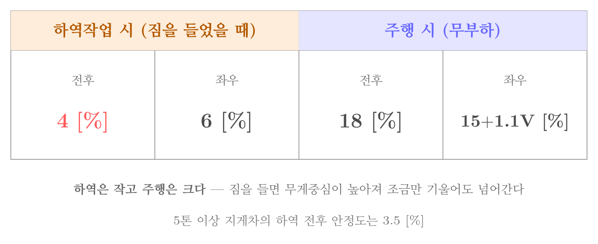
지게차 안정도 — 하역은 작고 주행은 크다
오답 분석
② 하역작업 시 좌우 안정도는 6 [%] 이내다.
③ 무부하 주행 시 전후 안정도는 18 [%] 이내다.
④ 무부하 주행 시 좌우 안정도는 (15 + 1.1V) [%] 이내다.
관련 개념 · 암기
지게차의 작업 상태별 안정도안전보건규칙 제3편, 「지게차 안정도 기준」. 네 값 —
하역 전후 4 [%] · 하역 좌우 6 [%] · 주행 전후 18 [%] · 주행 좌우 (15 + 1.1V) [%].
하역은 작고 주행은 크다는 방향만 알면 된다.
◈ 암기 하역 4·6, 주행 18·(15+1.1V) — 하역은 작고 주행은 크다.
🃏 관련 암기카드
분류: 운반·양중기 > 지게차·차량계 > 지게차 안정도 · 원본 2015.08.16 · 2022.04.24
058빈출도 ★☆☆난이도 3·어려움계산형safe_A_2026_01_058
천장크레인에 중량 3kN의 화물을 2줄로 매달았을 때 매달 기용 와이어(sling wire)에 걸리는 장력은 약 몇 kN 인가? (단, 매달기용 와이어(sling wire) 2줄 사이의 각도는 55° 이 다.)
정답: 2
해설
$T = \dfrac{W}{2 \cos ( \theta / 2 )}$이므로 $T = 3 / ( 2 \times \cos 27.5 ^{\circ} ) = 3 / ( 2 \times 0.8870 ) = 1.69$, 곧 약 1.7 [kN]이다.

줄걸이 각도와 장력 — 벌어질수록 로프에 걸리는 힘이 커진다
오답 분석
① 1.3은 각도를 무시하고 절반으로 나눈 값보다도 작아 성립하지 않는다.
③ 2.0은 각도를 90° 안팎으로 잡았을 때 나오는 값이다.
④ 2.3은 각도를 120° 가까이 잡았을 때 나오는 값이다.
관련 개념 · 암기
줄걸이 각도와 장력각도가 벌어질수록 장력이 커진다.
0°면 W/2, 60°면 약 0.58W, 120°면 W로,
120°를 넘으면 로프 한 가닥에 화물 무게보다 큰 힘이 걸린다. 그래서 현장에서
60° 이내를 지키라고 한다.
◈ 암기 0°면 W/2, 120°면 W — 벌어질수록 커진다. 현장은 60° 이내.
🃏 관련 암기카드
분류: 운반·양중기 > 크레인 > 줄걸이 장력 · 원본 2022.04.24
059빈출도 ★★☆난이도 2·보통개념형safe_A_2026_01_059
금형의 설치, 해체, 운반 시 안전사항에 관한 설명으로 틀린 것은?
① 운반을 통하여 관통 아이볼트가 사용될 때는 구멍 틈새 가 최소화되도록 한다.
② 금형을 설치하는 프레스의 T홈 안길이는 설치 볼트 지름 의 1/2 이하로 한다.
③ 고정볼트는 고정 후 가능하면 나사산을 3~4개 정도 짧 게 남겨 설치 또는 해체 시 슬라이드 면과의 사이에 협 착이 발생하지 않도록 해야 한다.
④ 운반 시 상부금형과 하부금형이 닿을 위험이 있을 때는 고정 패드를 이용한 스트랩, 금속재질이나 우레탄 고무 의 블록 등을 사용한다.
정답: 2
해설
T홈 안길이는 설치 볼트 지름의 2배 이상 이어야 한다. 「1/2 이하」는 반대다. 볼트가 얕게 물리면 큰 프레스 하중에 빠져 금형이 떨어진다.
오답 분석
① 관통 아이볼트의 구멍 틈새를 줄여야 흔들림이 적다.
③ 고정볼트는 나사산을 3~4개만 남겨 슬라이드 면과의 협착을 막는다.
④ 상·하 금형이 닿지 않도록 스트랩이나 블록을 끼워 운반한다.
관련 개념 · 암기
금형의 설치·해체·운반 안전
금형 취급의 원칙. 「깊게 물리고, 튀어나온 것은 줄이고, 부딪히지 않게 받친다」. 금형 교체 중 슬라이드 아래에 몸이 들어갈 때는 반드시 안전블록을 끼운다. 전기적 잠금만으로는 오작동을 막지 못한다.
🃏 관련 암기카드
분류: 프레스·전단기 > 프레스 > 금형 안전 · 원본 2019.08.04 · 2022.04.24
060빈출도 ★☆☆난이도 3·어려움계산형safe_A_2026_01_060
다음 중 롤러의 급정지 성능으로 적합하지 않은 것은?
① 앞면 롤러 표면 원주속도가 25m/min, 앞면 롤러의 원주 가 5m 일 때 급정지거리 1.6m 이내
② 앞면 롤러 표면 원주속도가 35m/min, 앞면 롤러의 원주 가 7m 일 때 급정지거리 2.8m 이내
③ 앞면 롤러 표면 원주속도가 30m/min, 앞면 롤러의 원주 가 6m 일 때 급정지거리 2.6m 이내
④ 앞면 롤러 표면 원주속도가 20m/min, 앞면 롤러의 원주 가 8m 일 때 급정지거리 2.6m 이내
정답: 3
해설
원주속도 30 [m/min] 이상이면 원주의 1/2.5 이내에 멈춰야 한다. $6 / 2.5 = 2.4$ [m]이므로 2.4 [m] 이내 여야 하는데 2.6 [m]는 이를 넘는다.
오답 분석
① 25 [m/min]는 30 미만이므로 1/3 기준이다. $5 / 3 = 1.67$ [m] 이내이므로 1.6 [m]는 적합하다.
② 35 [m/min]는 30 이상이므로 1/2.5 기준이다. $7 / 2.5 = 2.8$ [m] 이내이므로 적합하다.
④ 20 [m/min]는 30 미만이므로 1/3 기준이다. $8 / 3 = 2.67$ [m] 이내이므로 2.6 [m]는 적합하다.
관련 개념 · 암기
방호장치 안전인증 고시 — 롤러기 급정지장치의 성능안전보건규칙 제147조(급정지장치의 성능).
30 [m/min] 미만은 원주의 1/3 이내, 30 [m/min] 이상은 1/2.5 이내.
빠를수록 더 엄격한 것은, 그만큼 손이 빨리 딸려 들어가기 때문이다. 급정지장치의 조작부는
손 조작식 밑면에서 1.8 [m] 이내 · 복부 조작식 0.8~1.1 [m] · 무릎 조작식 0.6 [m] 이내에 둔다.
◈ 암기 30 [m/min] 미만 1/3, 이상 1/2.5 — 빠를수록 엄격.
⚖ 근거 법령 — 산업안전보건기준에 관한 규칙 제147조산업안전보건기준에 관한 규칙 시행 2026. 3. 2.
제147조(설계기준 준수) 사업주는 이동식 크레인을 사용하는 경우에 그 이동식 크레인이 넘어지거나 그 이동식 크레인의 구조 부분을 구성하는 강재 등이 변형되거나 부러지는 일 등을 방지하기 위하여 해당 이동식 크레인의 설계기준(제조자가 제공하는 사용설명서)을 준수하여야 한다. <개정 2024.6.28>
분류: 프레스·전단기 > 프레스 > 롤러기 급정지 · 원본 2022.04.24
제4과목 전기위험방지기술
061빈출도 ★★☆난이도 3·어려움계산형safe_A_2026_01_061
대지에서 용접작업을 하고 있는 작업자가 용접봉에 접촉한 경우 통전전류는? (단, 용접기의 출력 측 무부하전압 : 90v, 접촉저항(손, 용접봉 등 포함) : 10kΩ, 인체의 내부저항 : 1kΩ, 발과 대지의 접촉저항 : 20kΩ 이다.)
① 약 0.19 mA
② 약 0.29 mA
③ 약 1.96 mA
④ 약 2.90 mA
정답: 4
해설
저항이 모두 직렬로 이어진다. $R = 10 + 1 + 20 = 31$ [kΩ]이므로 $I = 90 / 31 {,} 000 = 0.0029$ [A], 곧 약 2.90 [mA]다.
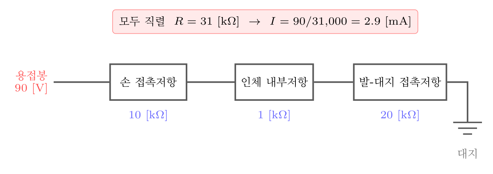
감전 경로의 등가회로 — 저항은 모두 직렬로 더한다
오답 분석
① 0.19 [mA]는 저항을 열 배로 잡았을 때 나오는 값이다.
② 0.29 [mA] 도 자릿수가 한 자리 어긋난 값이다.
③ 1.96 [mA]는 접촉저항 하나를 빠뜨렸을 때 나오는 값에 가깝다.
관련 개념 · 암기
감전 경로의 등가회로전류는
손 접촉저항 → 인체 내부저항 → 발과 대지의 접촉저항을 차례로 지나므로 모두 더한다. 교류 아크용접기의 무부하 전압이 70~80 [V]로 높은 것이 위험의 뿌리이며, 그래서
자동전격방지장치로 아크가 꺼지면 25 [V] 이하로 낮춘다.
◈ 암기 저항은 모두 직렬로 더한다.
🃏 관련 암기카드
분류: 감전재해 > 인체 영향 > 통전전류 계산 · 원본 2011.06.12 · 2022.04.24
062빈출도 ★☆☆난이도 2·보통개념형safe_A_2026_01_062
한국전기설비규정에 따라 사람이 쉽게 접촉할 우려가 있는 곳에 금속제 외함을 가지는 저압의 기계기구가 시설되어 있 다. 이 기계기구의 사용전압이 몇 V를 초과할 때 전기를 공 급하는 전로에 누전차단기를 시설해야 하는가? (단, 누전차 단기를 시설하지 않아도 되는 조건은 제외한다.)
정답: 3
해설
50 [V]를 초과하는 저압 기계기구로서 사람이 쉽게 접촉할 우려가 있는 곳에 시설하는 것에는 누전차단기를 설치한다. 50 [V]는 국제적으로 교류에서 사람이 견딜 수 있다고 보는 한계로 삼는 값이다.
오답 분석
① 30 [V]는 우리나라에서 흔히 말하는 「안전전압」이지 누전차단기 시설 기준은 아니다.
② 40 [V]라는 기준은 없다.
④ 60 [V]는 직류 쪽에서 쓰이는 값이다.
관련 개념 · 암기
한국전기설비규정(KEC) 211.2.4 — 누전차단기의 시설
「50 [V] 초과」가 기준값이다. 안전보건규칙 제304조가 정하는 대상 장소(물기·도전성 높은 장소, 임시배선 등) 와는 별개의 규정이니 섞지 않는다.
⚖ 근거 법령 — 산업안전보건기준에 관한 규칙 제304조산업안전보건기준에 관한 규칙 시행 2026. 3. 2.
① 사업주는 다음 각 호의 전기 기계ㆍ기구에 대하여 누전에 의한 감전위험을 방지하기 위하여 해당 전로의 정격에 적합하고 감도(전류 등에 반응하는 정도)가 양호하며 확실하게 작동하는 감전방지용 누전차단기를 설치해야 한다. <개정 2021.11.19>
1. 대지전압이 150볼트를 초과하는 이동형 또는 휴대형 전기기계ㆍ기구
2. 물 등 도전성이 높은 액체가 있는 습윤장소에서 사용하는 저압(1.5천볼트 이하 직류전압이나 1천볼트 이하의 교류전압을 말한다)용 전기기계ㆍ기구이 문항이 묻는 자리
3. 철판ㆍ철골 위 등 도전성이 높은 장소에서 사용하는 이동형 또는 휴대형 전기기계ㆍ기구
4. 임시배선의 전로가 설치되는 장소에서 사용하는 이동형 또는 휴대형 전기기계ㆍ기구
② 사업주는 제1항에 따라 감전방지용 누전차단기를 설치하기 어려운 경우에는 작업시작 전에 접지선의 연결 및 접속부 상태 등이 적합한지 확실하게 점검하여야 한다.
③ 다음 각 호의 어느 하나에 해당하는 경우에는 제1항과 제2항을 적용하지 않는다. <개정 2019.1.31, 2021.11.19>
1. 「전기용품 및 생활용품 안전관리법」이 적용되는 이중절연 또는 이와 같은 수준 이상으로 보호되는 구조로 된 전기기계ㆍ기구
2. 절연대 위 등과 같이 감전위험이 없는 장소에서 사용하는 전기기계ㆍ기구
3. 비접지방식의 전로
④ 사업주는 제1항에 따라 전기기계ㆍ기구를 사용하기 전에 해당 누전차단기의 작동상태를 점검하고 이상이 발견되면 즉시 보수하거나 교환하여야 한다.
⑤ 사업주는 제1항에 따라 설치한 누전차단기를 접속하는 경우에 다음 각 호의 사항을 준수하여야 한다.
1. 전기기계ㆍ기구에 설치되어 있는 누전차단기는 정격감도전류가 30밀리암페어 이하이고 작동시간은 0.03초 이내일 것. 다만, 정격전부하전류가 50암페어 이상인 전기기계ㆍ기구에 접속되는 누전차단기는 오작동을 방지하기 위하여 정격감도전류는 200밀리암페어 이하로, 작동시간은 0.1초 이내로 할 수 있다.
2. 분기회로 또는 전기기계ㆍ기구마다 누전차단기를 접속할 것. 다만, 평상시 누설전류가 매우 적은 소용량부하의 전로에는 분기회로에 일괄하여 접속할 수 있다.
3. 누전차단기는 배전반 또는 분전반 내에 접속하거나 꽂음접속기형 누전차단기를 콘센트에 접속하는 등 파손이나 감전사고를 방지할 수 있는 장소에 접속할 것
4. 지락보호전용 기능만 있는 누전차단기는 과전류를 차단하는 퓨즈나 차단기 등과 조합하여 접속할 것
분류: 감전재해 > 누전차단기 > 누전차단기 시설 · 원본 2022.04.24
063빈출도 ★☆☆난이도 2·보통개념형safe_A_2026_01_063
다음 중 산업안전보건기준에 관한 규칙에 따라 누전차단기 를 설치하지 않아도 되는 곳은?
① 철판·철골 위 등 도전성이 높은 장소에서 사용하는 이동 형 전기기계·기구
② 대지전압이 220V인 휴대형 전기기계·기구
③ 임시배선의 전로가 설치되는 장소에서 사용하는 이동형 전기기계·기구
④ 절연대 위에서 사용하는 전기기계·기구
정답: 4
해설
절연대 위에서 쓰는 기계·기구는 사람이 대지와 끊겨 있어 전류가 몸을 지나 땅으로 흐를 길이 없다. 그래서 누전차단기 설치 대상에서 빠진다.
오답 분석
① 철판·철골 위 등 도전성이 높은 장소의 이동형 기기는 설치 대상이다.
② 대지전압 150 [V]를 초과하는 휴대형 기기는 설치 대상이다. 220 [V]는 이를 넘는다.
③ 임시배선 전로가 설치된 장소의 이동형 기기도 설치 대상이다.
관련 개념 · 암기
안전보건규칙 제304조 — 누전차단기의 설치 예외안전보건규칙 제304조(누전차단기에 의한 감전방지). 예외는
이중절연 구조 · 절연대 위 사용 · 비접지방식 전원(절연변압기 2차 300 [V] 이하, 3 [kVA] 이하) 세 가지다. 전부
「접지 없이도 감전되지 않는 구조」라는 공통점이 있다.
◈ 암기 예외 셋 — 이중절연 · 절연대 위 · 비접지방식.
⚖ 근거 법령 — 산업안전보건기준에 관한 규칙 제304조산업안전보건기준에 관한 규칙 시행 2026. 3. 2.
① 사업주는 다음 각 호의 전기 기계ㆍ기구에 대하여 누전에 의한 감전위험을 방지하기 위하여 해당 전로의 정격에 적합하고 감도(전류 등에 반응하는 정도)가 양호하며 확실하게 작동하는 감전방지용 누전차단기를 설치해야 한다. <개정 2021.11.19>
1. 대지전압이 150볼트를 초과하는 이동형 또는 휴대형 전기기계ㆍ기구
2. 물 등 도전성이 높은 액체가 있는 습윤장소에서 사용하는 저압(1.5천볼트 이하 직류전압이나 1천볼트 이하의 교류전압을 말한다)용 전기기계ㆍ기구
3. 철판ㆍ철골 위 등 도전성이 높은 장소에서 사용하는 이동형 또는 휴대형 전기기계ㆍ기구
4. 임시배선의 전로가 설치되는 장소에서 사용하는 이동형 또는 휴대형 전기기계ㆍ기구
② 사업주는 제1항에 따라 감전방지용 누전차단기를 설치하기 어려운 경우에는 작업시작 전에 접지선의 연결 및 접속부 상태 등이 적합한지 확실하게 점검하여야 한다.
③ 다음 각 호의 어느 하나에 해당하는 경우에는 제1항과 제2항을 적용하지 않는다. <개정 2019.1.31, 2021.11.19>
1. 「전기용품 및 생활용품 안전관리법」이 적용되는 이중절연 또는 이와 같은 수준 이상으로 보호되는 구조로 된 전기기계ㆍ기구
2. 절연대 위 등과 같이 감전위험이 없는 장소에서 사용하는 전기기계ㆍ기구이 문항이 묻는 자리
3. 비접지방식의 전로
④ 사업주는 제1항에 따라 전기기계ㆍ기구를 사용하기 전에 해당 누전차단기의 작동상태를 점검하고 이상이 발견되면 즉시 보수하거나 교환하여야 한다.
⑤ 사업주는 제1항에 따라 설치한 누전차단기를 접속하는 경우에 다음 각 호의 사항을 준수하여야 한다.
1. 전기기계ㆍ기구에 설치되어 있는 누전차단기는 정격감도전류가 30밀리암페어 이하이고 작동시간은 0.03초 이내일 것. 다만, 정격전부하전류가 50암페어 이상인 전기기계ㆍ기구에 접속되는 누전차단기는 오작동을 방지하기 위하여 정격감도전류는 200밀리암페어 이하로, 작동시간은 0.1초 이내로 할 수 있다.
2. 분기회로 또는 전기기계ㆍ기구마다 누전차단기를 접속할 것. 다만, 평상시 누설전류가 매우 적은 소용량부하의 전로에는 분기회로에 일괄하여 접속할 수 있다.
3. 누전차단기는 배전반 또는 분전반 내에 접속하거나 꽂음접속기형 누전차단기를 콘센트에 접속하는 등 파손이나 감전사고를 방지할 수 있는 장소에 접속할 것
4. 지락보호전용 기능만 있는 누전차단기는 과전류를 차단하는 퓨즈나 차단기 등과 조합하여 접속할 것
분류: 감전재해 > 누전차단기 > 누전차단기 예외 · 원본 2022.04.24
064빈출도 ★★★난이도 2·보통계산형safe_A_2026_01_064
인체의 전기저항을 0.5kΩ이라고 하면 심실세동을 일으키는 위험한계 에너지는 몇 J 인가? (단, 심실세동전류값 I = 165 / √T [mA]의 Dalziel의 식을 이용하며, 통전시간은 1초로 한다.)
① 13.6
② 12.6
③ 11.6
④ 10.6
정답: 1
해설
$W = I^{2} R T$이다. $I = 165 / \sqrt{1} = 165$ [mA] $= 0.165$ [A]이므로 $W = ( 0.165 )^{2} \times 500 \times 1 = 0.027225 \times 500 = 13.6$ [J]다.
오답 분석
② 12.6은 전류를 제곱하지 않았을 때 나오는 값이다.
③ 11.6은 저항을 잘못 잡았을 때 나오는 값이다.
④ 10.6은 통전시간을 달리 잡았을 때 나오는 값이다.
관련 개념 · 암기
Dalziel의 심실세동 전류식$I = 165 / \sqrt{T}$ [mA] (체중 70 [kg] 기준, 통전시간 T는 초). 위험한계 에너지는 $W = I^{2} R T$로 구하며 대략
13.6 [J]이 나온다. 통전시간이
4배가 되면 위험전류는 절반이 되므로, 누전차단기의 동작시간을 짧게 하는 것이 결정적이다.
◈ 암기 $I = 165 / \sqrt{T}$ [mA], $W = I^{2} R T$. 1초에 13.6 [J].
⚠ 주의사항 원본 문항에서는 「$I = 165 / \sqrt{T}$ [mA]의 Dalziel 식을 이용하며」라는 단서가 지문에 있었으나, 조판 과정에서 선택지 쪽으로 밀려 들어가 있었다. 이 책에서는 지문으로 되돌려 실었다.
🃏 관련 암기카드
분류: 감전재해 > 인체 영향 > 위험한계 에너지 · 원본 2015.03.08 · 2018.04.28 · 2022.03.05
065빈출도 ★★★난이도 1·쉬움개념형safe_A_2026_01_065
감전사고를 방지하기 위한 방법으로 틀린 것은?
① 전기기기 및 설비의 위험부에 위험표지
② 전기설비에 대한 누전차단기 설치
③ 전기기에 대한 정격표시
④ 무자격자는 전기계 및 기구에 전기적인 접촉 금지
정답: 3
해설
정격표시는 그 기기를 어떤 조건에서 쓰라고 알려 주는 사용 정보이지 감전을 막는 조치가 아니다. 표시를 붙였다고 해서 사람이 충전부에 닿는 것이 막히지는 않는다.
오답 분석
① 위험표지는 접근을 삼가게 하는 관리적 대책으로, 감전 방지에 든다.
② 누전차단기는 대표적인 감전 방지 설비다.
④ 무자격자의 접촉을 막는 것도 감전 방지대책이다.
관련 개념 · 암기
감전사고의 방지대책
의 두 갈래. 직접 접촉 방지(절연 · 방호 · 격리 · 폐쇄형 외함)와 간접 접촉 방지(보호접지 · 누전차단기 · 이중절연 · 등전위본딩 · 비접지 전원). 표지·교육은 이 조치들에 더해서 붙이는 것이지 대신할 수 없다.
🃏 관련 암기카드
분류: 감전재해 > 감전 방지대책 > 감전 방지대책 · 원본 2019.03.03 · 2019.04.27 · 2022.03.05
066빈출도 ★☆☆난이도 1·쉬움개념형safe_A_2026_01_066
감전사고로 인한 전격사의 메카니즘으로 가장 거리가 먼 것 은?
① 흉부수축에 의한 질식
② 심실세동에 의한 혈액순환기능의 상실
③ 내장파열에 의한 소화기계통의 기능상실
④ 호흡중추신경 마비에 따른 호흡기능 상실
정답: 3
해설
내장파열은 추락이나 충돌 같은 기계적 충격으로 생기는 손상이지 전류가 몸을 지나며 일으키는 죽음의 경로가 아니다.
오답 분석
① 흉부 근육이 수축해 숨을 쉬지 못하게 되는 질식은 전격사의 경로다.
② 심실세동으로 심장이 피를 보내지 못하게 되는 것이 가장 흔한 경로다.
④ 호흡중추가 마비되어 숨이 멎는 것도 전격사의 경로다.
관련 개념 · 암기
전격사의 세 가지 기전
전격사의 3대 기전. 심실세동(혈액순환 정지) · 호흡중추 마비(호흡 정지) · 흉부 수축에 의한 질식. 셋 다 전류가 몸을 지나며 신경과 근육을 교란해서 생긴다. 그래서 응급조치의 핵심이 심폐소생술이다.
🃏 관련 암기카드
분류: 감전재해 > 응급처치 > 전격사의 기전 · 원본 2021.08.14
067빈출도 ★☆☆난이도 2·보통개념형safe_A_2026_01_067
다음 중 방폭설비의 보호등급(IP)에 대한 설명으로 옳은 것 은?
① 제1 특성 숫자가 「1」인 경우 지름 50mm 이상의 외부 분진에 대한 보호
② 제1 특성 숫자가 「2」인 경우 지름 10mm 이상의 외부 분진에 대한 보호
③ 제2 특성 숫자가 「1」인 경우 지름 50mm 이상의 외부 분진에 대한 보호
④ 제2 특성 숫자가 「2」인 경우 지름 10mm 이상의 외부 분진에 대한 보호
정답: 1
해설
IP 등급은 두 자리 숫자로 되어 있다. 앞자리(제1 특성 숫자)는 고체(분진·이물)에 대한 보호, 뒷자리(제2 특성 숫자)는 물에 대한 보호다. 앞자리가 1이면 지름 50 [mm] 이상의 고체를 막는다는 뜻이다.
IP 보호등급 — 앞자리는 고체, 뒷자리는 물
| 숫자 | 제1 특성 (고체·분진) | 제2 특성 (물) |
|---|
| 0 | 보호 없음 | 보호 없음 |
| 1 | 지름 50 [mm] 이상 | 수직으로 떨어지는 물방울 |
| 2 | 지름 12.5 [mm] 이상 | 15° 기울여 떨어지는 물방울 |
| 3 | 지름 2.5 [mm] 이상 | 60° 범위의 물보라 |
| 4 | 지름 1 [mm] 이상 | 모든 방향의 물보라 |
| 5 | 방진 — 먼지가 조금 들어와도 지장 없음 | 모든 방향의 분사수 |
| 6 | 완전 방진 | 강한 분사수 |
오답 분석
② 앞자리가 2이면 지름 12.5 [mm] 이상이다. 10 [mm]가 아니다.
③ 제2 특성 숫자는 물에 대한 보호이지 분진이 아니다.
④ 제2 특성 숫자는 물에 대한 보호다.
관련 개념 · 암기
IP 보호등급IP(Ingress Protection) 등급.
앞자리는 고체, 뒷자리는 물. 앞자리 1은 50 [mm], 2는 12.5 [mm], 3은 2.5 [mm], 4는 1 [mm], 5는 방진, 6은 완전 방진이다. 「
앞은 먼지, 뒤는 물」 한 줄만 알면 선택지 절반이 걸러진다.
◈ 암기 앞자리는 고체(먼지), 뒷자리는 물.
🃏 관련 암기카드
분류: 전기 방폭 > 방폭구조 > IP 보호등급 · 원본 2022.04.24
068빈출도 ★☆☆난이도 2·보통개념형safe_A_2026_01_068
다음 빈칸에 들어갈 내용으로 알맞은 것은?
「교류 특고압 가공전선로에서 발생하는 극저주파 전자계는 지표상 1m에서 전계가 ( ⓐ ), 자계가 ( ⓑ )가 되도록 시설하는 등 상시 정전유도 및 전자유도 작용에 의하여 사람에게 위험을 줄 우려가 없도록 시설하여야 한다.」
① ⓐ 0.35 kV/m 이하, ⓑ 0.833 μT 이하
② ⓐ 3.5 kV/m 이하, ⓑ 8.33 μT 이하
③ ⓐ 3.5 kV/m 이하, ⓑ 83.3 μT 이하
④ ⓐ 35 kV/m 이하, ⓑ 833 μT 이하
정답: 3
해설
송·배전선로 등에서 일반인이 상시 노출되는 한도는 전계 3.5 [kV/m] 이하, 자계 83.3 [μT] 이하다.
오답 분석
① 전계와 자계 모두 자릿수가 한 단계씩 작다.
② 자계 8.33 [μT]는 자릿수가 한 단계 작다.
④ 전계 35 [kV/m]와 자계 833 [μT]는 한 단계씩 크다.
관련 개념 · 암기
전기설비기술기준 — 전자파 인체보호기준국제비이온화방사보호위원회(ICNIRP) 권고를 받아들인 값이다.
◈ 암기 3.5와 83.3을 한 묶음으로.
🃏 관련 암기카드
분류: — > — > 전자파 인체보호기준 · 원본 2022.03.05
069빈출도 ★☆☆난이도 2·보통개념형safe_A_2026_01_069
KS C IEC 60079-10-2에 따라 공기 중에 분진운의 형태로 폭발성 분진 분위기가 지속적으로 또는 장기간 또는 빈번히 존재하는 장소는?
① 0종 장소
② 1종 장소
③ 20종 장소
④ 21종 장소
정답: 3
해설
20종 장소다. 분진 위험장소는 20 · 21 · 22종으로 나누며, 가스의 0 · 1 · 2종에 각각 대응한다. 「지속적으로 또는 장기간 또는 빈번히」가 가장 위험한 등급을 가리키는 표현이다.
오답 분석
① 0종 장소는 가스 위험장소의 분류다. 분진에는 쓰지 않는다.
② 1종 장소도 가스 쪽 분류다.
④ 21종 장소는 정상 운전 중 때때로 분진운이 생길 수 있는 곳이다.
관련 개념 · 암기
KS C IEC 60079-10-2 — 분진 위험장소의 구분위험장소의 대응.
가스 0/1/2종 ↔ 분진 20/21/22종. 앞에 20을 붙인다고 생각하면 쉽다. 분진은 가스와 달리
쌓인 층의 단열 효과로 기기 표면온도가 올라가는 것도 함께 봐야 한다.
◈ 암기 가스 0/1/2 ↔ 분진 20/21/22.
🃏 관련 암기카드
분류: 전기 방폭 > 위험장소·등급 > 분진 위험장소 · 원본 2022.04.24
070빈출도 ★☆☆난이도 1·쉬움개념형safe_A_2026_01_070
다음 중 기기보호등급(EPL)에 해당하지 않는 것은?
① EPL Ga
② EPL Ma
③ EPL Dc
④ EPL Mc
정답: 4
해설
EPL의 뒤 글자는 보호 수준을 나타내며 a(매우 높음) · b(높음) · c(강화된) 세 가지다. 다만 광산용 M은 Ma와 Mb 두 가지뿐이라 Mc는 없다.
기기보호등급(EPL)
| 대상 | 조합 | 비고 |
|---|
| G — 가스 | Ga · Gb · Gc | Ga는 0종 장소용 |
| D — 분진 | Da · Db · Dc | Da는 20종 장소용 |
| M — 광산 | Ma · Mb | Mc는 없다 — 갈림길 |
오답 분석
① EPL Ga는 가스 분위기용 최고 등급이다.
② EPL Ma는 광산용 최고 등급이다.
③ EPL Dc는 분진 분위기용 c 등급이다.
관련 개념 · 암기
기기보호등급(EPL)EPL(Equipment Protection Level). 앞 글자는 대상 분위기 —
G(gas) · D(dust) · M(mine). 뒤 글자는 보호 수준 —
a · b · c. 조합은
Ga/Gb/Gc · Da/Db/Dc · Ma/Mb로 여덟 가지이며,
M 에만 c가 없다는 것이 갈림길이다.
◈ 암기 M 에만 c가 없다 — Ma·Mb뿐.
🃏 관련 암기카드
분류: 전기 방폭 > 위험장소·등급 > 기기보호등급 · 원본 2022.04.24
071빈출도 ★★★난이도 1·쉬움개념형safe_A_2026_01_071
내압방폭구조의 필요충분조건에 대한 사항으로 틀린 것은?
① 폭발화염이 외부로 유출되지 않을 것
② 습기침투에 대한 보호를 충분히 할 것
③ 내부에서 폭발한 경우 그 압력에 견딜 것
④ 외함의 표면온도가 외부의 폭발성가스를 점화되지 않을 것
정답: 2
해설
습기 침투 보호는 IP 등급이 맡는 방수·방진의 문제이지 내압 방폭구조의 조건이 아니다. 내압 방폭구조는 안에서 터져도 밖으로 옮겨 붙지 않게 하는 데 목적이 있다.
오답 분석
① 폭발화염이 밖으로 나가지 않아야 한다.
③ 내부 폭발압에 견뎌야 한다.
④ 외함 표면온도가 바깥 가스를 점화시키지 않아야 한다.
관련 개념 · 암기
내압 방폭구조(d)의 세 조건화염이 좁은 틈을 지나며 식어 밖에 불을 옮기지 못하는 원리다. 그 틈의 한계값이
최대안전틈새(MESG)이며, 폭발등급 ⅡA·ⅡB·ⅡC를 가르는 기준이 된다.
◈ 암기 ① 압력에 견딜 것 ② 화염이 새 나가지 않을 것 ③ 표면온도가 낮을 것.
🃏 관련 암기카드
분류: 전기 방폭 > 방폭구조 > 내압 방폭구조 · 원본 2015.08.16 · 2019.03.03 · 2022.03.05
072빈출도 ★★★난이도 2·보통계산형safe_A_2026_01_072
교류 아크용접기의 허용사용률(%)은? (단, 정격사용률은 10%, 2차 정격전류는 500A, 교류 아크용접기의 사용전류는 250A이다.)
정답: 2
해설
$\text{허용사용률} = ( \dfrac{\text{정격} 2 \text{차 전류}}{\text{실제 사용전류}} )^{2} \times \text{정격사용률}$이므로 $( 500 / 250 )^{2} \times 10 = 40$ [%]다.
오답 분석
① 30 [%]는 전류비를 제곱하지 않았을 때에 가까운 값이다.
③ 50 [%]는 계산과 맞지 않는다.
④ 60 [%] 도 계산과 맞지 않는다.
관련 개념 · 암기
교류 아크용접기의 허용사용률용접기의 발열은
전류의 제곱에 비례하므로, 정격보다 작은 전류를 쓰면 그 제곱의 비만큼 더 오래 쓸 수 있다.
◈ 암기 전류를 절반으로 줄이면 사용률은 4배.
🃏 관련 암기카드
분류: 전기 일반 > 전기 기초 계산 > 허용사용률 · 원본 2011.08.21 · 2016.08.21 · 2019.04.27 · 2022.03.05
073빈출도 ★★☆난이도 1·쉬움개념형safe_A_2026_01_073
전기기기, 설비 및 전선로 등의 충전 유무 등을 확인하기 위한 장비는?
① 위상검출기
② 디스콘 스위치
③ COS
④ 저압 및 고압용 검전기
정답: 4
해설
검전기다. 전기가 살아 있는지(충전 여부)를 확인하는 기구이며, 정전작업 순서에서 잔류전하 방전 뒤에 쓴다.
오답 분석
① 위상검출기는 두 전원의 위상이 맞는지 보는 기구다.
② 디스콘 스위치(DS, 단로기)는 무부하 상태에서 회로를 끊고 잇는 개폐기다.
③ COS(컷아웃 스위치)는 변압기 1차 측을 보호하는 개폐기 겸 퓨즈다.
관련 개념 · 암기
안전보건규칙 제319조 — 정전전로에서의 전기작업안전보건규칙 제319조(정전전로에서의 전기작업). 정전작업 순서는
① 전로 차단 → ② 개폐기 잠금과 표찰 부착 → ③ 잔류전하 방전 → ④ 검전기로 충전 여부 확인 → ⑤ 단락접지다. 검전기는 반드시
정격 전압에 맞는 것을 쓰고, 사용 전후에 알려진 충전부에서 동작을 확인한다.
◈ 암기 정전작업 5단계 — 차단 · 잠금표찰 · 방전 · 검전 · 단락접지.
⚖ 근거 법령 — 산업안전보건기준에 관한 규칙 제319조산업안전보건기준에 관한 규칙 시행 2026. 3. 2.
① 사업주는 근로자가 노출된 충전부 또는 그 부근에서 작업함으로써 감전될 우려가 있는 경우에는 작업에 들어가기 전에 해당 전로를 차단하여야 한다. 다만, 다음 각 호의 경우에는 그러하지 아니하다.
1. 생명유지장치, 비상경보설비, 폭발위험장소의 환기설비, 비상조명설비 등의 장치ㆍ설비의 가동이 중지되어 사고의 위험이 증가되는 경우
2. 기기의 설계상 또는 작동상 제한으로 전로차단이 불가능한 경우
3. 감전, 아크 등으로 인한 화상, 화재ㆍ폭발의 위험이 없는 것으로 확인된 경우
② 제1항의 전로 차단은 다음 각 호의 절차에 따라 시행하여야 한다.
1. 전기기기등에 공급되는 모든 전원을 관련 도면, 배선도 등으로 확인할 것
2. 전원을 차단한 후 각 단로기 등을 개방하고 확인할 것
3. 차단장치나 단로기 등에 잠금장치 및 꼬리표를 부착할 것
4. 개로된 전로에서 유도전압 또는 전기에너지가 축적되어 근로자에게 전기위험을 끼칠 수 있는 전기기기등은 접촉하기 전에 잔류전하를 완전히 방전시킬 것
5. 검전기를 이용하여 작업 대상 기기가 충전되었는지를 확인할 것
6. 전기기기등이 다른 노출 충전부와의 접촉, 유도 또는 예비동력원의 역송전 등으로 전압이 발생할 우려가 있는 경우에는 충분한 용량을 가진 단락 접지기구를 이용하여 접지할 것
③ 사업주는 제1항 각 호 외의 부분 본문에 따른 작업 중 또는 작업을 마친 후 전원을 공급하는 경우에는 작업에 종사하는 근로자 또는 그 인근에서 작업하거나 정전된 전기기기등(고정 설치된 것으로 한정한다)과 접촉할 우려가 있는 근로자에게 감전의 위험이 없도록 다음 각 호의 사항을 준수하여야 한다.
1. 작업기구, 단락 접지기구 등을 제거하고 전기기기등이 안전하게 통전될 수 있는지를 확인할 것
2. 모든 작업자가 작업이 완료된 전기기기등에서 떨어져 있는지를 확인할 것
3. 잠금장치와 꼬리표는 설치한 근로자가 직접 철거할 것
4. 모든 이상 유무를 확인한 후 전기기기등의 전원을 투입할 것
분류: 전기설비 > 정전작업·활선 > 검전 · 원본 2019.04.27 · 2022.04.24
074빈출도 ★★☆난이도 2·보통개념형safe_A_2026_01_074
다음 중 활선근접 작업시의 안전조치로 적절하지 않은 것 은?
① 근로자가 절연용 방호구의 설치·해체작업을 하는 경우에 는 절연용 보호구를 착용하거나 활선작업용 기구 및 장 치를 사용하도록 하여야 한다.
② 저압인 경우에는 해당 전기작업자가 절연용 보호구를 착 용하되, 충전전로에 접촉할 우려가 없는 경우에는 절연 용 방호구를 설치하지 아니할 수 있다.
③ 유자격자가 아닌 근로자가 근로자의 몸 또는 긴 도전성 물체가 방호되지 않은 충전전로에서 대지전압이 50kV이 하인 경우에는 400cm 이내로 접근할 수 없도록 하여야 한다.
④ 고압 및 특별고압의 전로에서 전기작업을 하는 근로자에 게 활선작업용 기구 및 장치를 사용하여야 한다.
정답: 3
해설
대지전압 50 [kV] 이하이면 300 [cm] 이내로 접근하지 못하게 한다. 400 [cm]가 아니다. 50 [kV]를 넘으면 10 [kV] 마다 10 [cm] 씩 거리를 늘린다.
오답 분석
① 방호구를 설치하거나 해체할 때도 보호구를 착용하거나 활선작업용 기구를 쓴다.
② 저압이고 접촉할 우려가 없으면 방호구 설치를 생략할 수 있다.
④ 고압·특별고압에서는 활선작업용 기구와 장치를 쓴다.
관련 개념 · 암기
안전보건규칙 제321조 — 충전전로에서의 전기작업절연용 보호구는 사람이 입는 것(안전모·장갑·장화),
절연용 방호구는 충전부에 씌우는 것(절연관·절연시트)이다.
◈ 암기 유자격자가 아니면 50 [kV] 이하는 300 [cm], 넘으면 10 [kV] 마다 10 [cm] 더.
⚖ 근거 법령 — 산업안전보건기준에 관한 규칙 제321조산업안전보건기준에 관한 규칙 시행 2026. 3. 2.
① 사업주는 근로자가 충전전로를 취급하거나 그 인근에서 작업하는 경우에는 다음 각 호의 조치를 하여야 한다.
1. 충전전로를 정전시키는 경우에는 제319조에 따른 조치를 할 것
2. 충전전로를 방호, 차폐하거나 절연 등의 조치를 하는 경우에는 근로자의 신체가 전로와 직접 접촉하거나 도전재료, 공구 또는 기기를 통하여 간접 접촉되지 않도록 할 것
3. 충전전로를 취급하는 근로자에게 그 작업에 적합한 절연용 보호구를 착용시킬 것
4. 충전전로에 근접한 장소에서 전기작업을 하는 경우에는 해당 전압에 적합한 절연용 방호구를 설치할 것. 다만, 저압인 경우에는 해당 전기작업자가 절연용 보호구를 착용하되, 충전전로에 접촉할 우려가 없는 경우에는 절연용 방호구를 설치하지 아니할 수 있다.
5. 고압 및 특별고압의 전로에서 전기작업을 하는 근로자에게 활선작업용 기구 및 장치를 사용하도록 할 것
6. 근로자가 절연용 방호구의 설치ㆍ해체작업을 하는 경우에는 절연용 보호구를 착용하거나 활선작업용 기구 및 장치를 사용하도록 할 것
7. 유자격자가 아닌 근로자가 충전전로 인근의 높은 곳에서 작업할 때에 근로자의 몸 또는 긴 도전성 물체가 방호되지 않은 충전전로에서 대지전압이 50킬로볼트 이하인 경우에는 300센티미터 이내로, 대지전압이 50킬로볼트를 넘는 경우에는 10킬로볼트당 10센티미터씩 더한 거리 이내로 각각 접근할 수 없도록 할 것이 문항이 묻는 자리
8. 유자격자가 충전전로 인근에서 작업하는 경우에는 다음 각 목의 경우를 제외하고는 노출 충전부에 다음 표에 제시된 접근한계거리 이내로 접근하거나 절연 손잡이가 없는 도전체에 접근할 수 없도록 할 것
가. 근로자가 노출 충전부로부터 절연된 경우 또는 해당 전압에 적합한 절연장갑을 착용한 경우
나. 노출 충전부가 다른 전위를 갖는 도전체 또는 근로자와 절연된 경우
다. 근로자가 다른 전위를 갖는 모든 도전체로부터 절연된 경우
<img src="http://www.law.go.kr/flDownload.do?flSeq=23019731" alt="img23019731" >
┌──────────┬────────┐
│충전전로의 선간전압 │충전전로에 대한 │
│(단위: 킬로볼트) │접근 한계거리 │
│ │(단위: 센티미터)│
├──────────┼────────┤
│0.3 이하 │접촉금지 │
│0.3 초과 0.75 이하 │30 │
│0.75 초과 2 이하 │45 │
│2 초과 15 이하 │60 │
│15 초과 37 이하 │90 │
│37 초과 88 이하 │110 │
│88 초과 121 이하 │130 │
│121 초과 145 이하 │150 │
│145 초과 169 이하 │170 │
│169 초과 242 이하 │230 │
│242 초과 362 이하 │380 │
│362 초과 550 이하 │550 │
│550 초과 800 이하 │790 │
└──────────┴────────┘
</img>
② 사업주는 절연이 되지 않은 충전부나 그 인근에 근로자가 접근하는 것을 막거나 제한할 필요가 있는 경우에는 울타리를 설치하고 근로자가 쉽게 알아볼 수 있도록 하여야 한다. 다만, 전기와 접촉할 위험이 있는 경우에는 도전성이 있는 금속제 울타리를 사용하거나, 제1항의 표에 정한 접근 한계거리 이내에 설치해서는 아니 된다. <개정 2019.10.15>
③ 사업주는 제2항의 조치가 곤란한 경우에는 근로자를 감전위험에서 보호하기 위하여 사전에 위험을 경고하는 감시인을 배치하여야 한다.
분류: 전기설비 > 정전작업·활선 > 활선근접 작업 · 원본 2012.05.20 · 2022.03.05
075빈출도 ★★☆난이도 1·쉬움개념형safe_A_2026_01_075
다음 중 전동기를 운전하고자 할 때 개폐기의 조작순서로 옳은 것은?
① 메인 스위치 → 분전반 스위치 → 전동기용 개폐기
② 분전반 스위치 → 메인 스위치 → 전동기용 개폐기
③ 전동기용 개폐기 → 분전반 스위치 → 메인 스위치
④ 분전반 스위치 → 전동기용 스위치 → 메인 스위치
정답: 1
해설
넣을 때는 전원 쪽에서 부하 쪽으로 간다. 곧 메인 → 분전반 → 전동기용이다. 끌 때는 반대로 부하 쪽에서 전원 쪽으로 간다.
오답 분석
② 분전반을 먼저 넣으면 상위 전원이 없어 의미가 없고, 나중에 메인을 넣는 순간 부하가 한꺼번에 걸린다.
③ 이 순서는 차단할 때의 순서다.
④ 순서가 뒤섞여 있다.
관련 개념 · 암기
개폐기의 조작 순서「
넣을 때는 위에서 아래로, 끊을 때는 아래에서 위로」. 이렇게 해야 개폐 순간에 큰 부하전류가 한꺼번에 흐르지 않아 아크와 접점 손상이 줄어든다. 정전작업에서 차단 순서를 부하 쪽부터 잡는 것도 같은 이치다.
◈ 암기 넣을 때는 위에서 아래로, 끊을 때는 아래에서 위로.
🃏 관련 암기카드
분류: 전기설비 > 차단기·개폐기 > 개폐기 조작순서 · 원본 2019.04.27 · 2022.03.05
076빈출도 ★☆☆난이도 1·쉬움개념형safe_A_2026_01_076
피뢰기로서 갖추어야 할 성능 중 틀린 것은?
① 충격 방전 개시전압이 낮을 것
② 뇌전류 방전 능력이 클 것
③ 제한전압이 높을 것
④ 속류 차단을 확실하게 할 수 있을 것
정답: 3
해설
제한전압은 낮아야 한다. 제한전압이란 피뢰기가 뇌서지를 흘려보내는 동안 기기에 걸리는 전압이므로, 낮을수록 기기를 잘 지킨다. 높으면 피뢰기를 달아 놓고도 기기가 상한다.
오답 분석
① 충격 방전 개시전압은 낮아야 뇌서지가 오자마자 빨리 열린다.
② 뇌전류 방전 능력이 커야 큰 벼락도 흘려보낼 수 있다.
④ 속류를 확실히 끊어야 방전이 끝난 뒤 상용주파 전류가 계속 흐르지 않는다.
관련 개념 · 암기
피뢰기의 구비 성능피뢰기의 4대 성능.
충격 방전 개시전압은 낮게 · 제한전압은 낮게 · 뇌전류 방전 능력은 크게 · 속류 차단은 확실하게.
「전압 관련은 낮게, 능력 관련은 크게」로 묶으면 된다. 피뢰기는
전기설비를, 피뢰침은
건물을 지킨다는 구분도 함께 본다.
◈ 암기 전압은 낮게, 능력은 크게.
🃏 관련 암기카드
분류: 전기화재 > 전기화재·피뢰 > 피뢰기 · 원본 2022.04.24
077빈출도 ★☆☆난이도 2·보통개념형safe_A_2026_01_077
정전기 재해방지에 관한 설명 중 틀린 것은?
① 이황화탄소의 수송 과정에서 배관 내의 유속을 2.5m/s 이상으로 한다.
② 포장 과정에서 용기를 도전성 재료에 접지한다.
③ 인쇄 과정에서 도포량을 소량으로 하고 접지한다.
④ 작업장의 습도를 높여 전하가 제거되기 쉽게 한다.
정답: 1
해설
방향이 거꾸로다. 유속이 빠를수록 유동대전이 심해지므로 유속을 제한해야 한다. 특히 이황화탄소는 최소발화에너지가 매우 작아(약 0.009 [mJ]) 아주 작은 방전에도 불이 붙으므로 1 [m/s] 이하로 더 엄격하게 묶는다.
오답 분석
② 용기를 도전성 재료에 접지하면 전하가 대지로 빠져나간다.
③ 도포량을 줄이고 접지하는 것은 대전 자체를 줄이는 대책이다.
④ 습도를 높이면 표면에 수분막이 생겨 전하가 흘러 나간다.
관련 개념 · 암기
정전기 재해의 방지대책정전기 대책은 대상에 따라 갈린다.
도체는 접지,
부도체는 가습·제전기·도전성 재료 혼입,
액체 이송은 유속 제한. 「빠르게 = 안전」이라는 직관이 여기서는 정반대라는 점이 함정이다.
◈ 암기 도체는 접지, 부도체는 가습·제전기, 액체는 유속 제한.
🃏 관련 암기카드
분류: 접지 > 접지 일반 > 정전기 대책 · 원본 2022.04.24
078빈출도 ★☆☆난이도 1·쉬움개념형safe_A_2026_01_078
정전기 제거 방법으로 가장 거리가 먼 것은?
① 작업장 바닥을 도전처리한다.
② 설비의 도체 부분은 접지시킨다.
③ 작업자는 대전방지화를 신는다.
④ 작업장을 항온으로 유지한다.
정답: 4
해설
항온(일정한 온도) 유지는 정전기와 직접 상관이 없다. 정전기에 영향을 주는 것은 온도가 아니라 습도다. 습도가 낮으면 전하가 빠져나가지 못해 쌓인다.
오답 분석
① 바닥을 도전처리하면 사람 몸에 쌓인 전하가 발을 통해 빠져나간다.
② 도체 부분의 접지는 가장 기본적인 대책이다.
③ 대전방지화는 사람 자체를 접지하는 셈이 된다.
관련 개념 · 암기
정전기의 제거 방법정전기 제거의 다섯 가지.
접지 · 가습(상대습도 60~70 [%]) · 제전기 설치 · 도전성 재료 사용 · 유속 제한.
온도가 아니라 습도라는 점이 갈림길이다.
◈ 암기 온도가 아니라 습도 — 상대습도 60~70 [%].
🃏 관련 암기카드
분류: 접지 > 접지 일반 > 정전기 제거 · 원본 2022.03.05
079빈출도 ★★☆난이도 1·쉬움개념형safe_A_2026_01_079
정전기 발생에 영향을 주는 요인에 대한 설명으로 틀린 것 은?
① 물체의 분리속도가 빠를수록 발생량은 적어진다.
② 접촉면적이 크고 접촉압력이 높을수록 발생량이 많아진 다.
③ 물체 표면이 수분이나 기름으로 오염되면 산화 및 부식 에 의해 발생량이 많아진다.
④ 정전기의 발생은 처음 접촉, 분리할 때가 최대로 되고 접촉, 분리가 반복됨에 따라 발생량은 감소한다.
정답: 1
해설
방향이 거꾸로다. 분리속도가 빠를수록 발생량이 많아진다. 빨리 떼어 낼수록 전하가 제자리로 되돌아갈 겨를이 없어 그대로 갈라지기 때문이다.
오답 분석
② 접촉면적이 넓고 압력이 높을수록 많이 생긴다.
③ 표면이 오염되면 발생량이 늘어난다.
④ 처음 접촉·분리할 때가 가장 크고 되풀이될수록 줄어든다. 이것을 대전 이력이라 한다.
관련 개념 · 암기
정전기 발생에 영향을 주는 요인정전기 발생의 5요인.
물체의 특성(대전서열이 멀수록 많다) · 표면 상태(거칠거나 오염되면 많다) · 대전 이력(처음이 가장 크다) · 접촉 면적과 압력(클수록 많다) · 분리속도(빠를수록 많다). 「
처음 하나만 줄어드는 쪽이고 나머지는 다 늘어나는 쪽」으로 가른다.
◈ 암기 처음 접촉 때가 가장 크고, 나머지는 다 「클수록 많다」.
🃏 관련 암기카드
분류: 정전기 > 정전기 발생·방전 > 정전기 발생 요인 · 원본 2017.05.07 · 2022.04.24
080빈출도 ★☆☆난이도 1·쉬움개념형safe_A_2026_01_080
정전기로 인한 화재 폭발의 위험이 가장 높은 것은?
① 드라이클리닝설비
② 농작물 건조기
③ 가습기
④ 전동기
정답: 1
해설
드라이클리닝설비다. 인화성 유기용제를 쓰면서 옷감을 세차게 돌리므로, 가연성 증기(연료)와 마찰에 의한 정전기(점화원)가 한자리에서 함께 생긴다. 연소의 요소가 저절로 모이는 셈이다.
오답 분석
② 농작물 건조기는 가연성 증기가 거의 없다.
③ 가습기는 오히려 습도를 높여 정전기를 줄인다.
④ 전동기는 정전기보다 스파크나 과열이 문제다.
관련 개념 · 암기
안전보건규칙 제325조 — 정전기로 인한 화재·폭발 방지
안전보건규칙 제325조(정전기로 인한 화재 폭발 등 방지). 접지 등의 조치를 해야 하는 설비로 인화성 액체를 이송하는 설비 · 위험물 탱크차 · 드라이클리닝설비 · 인쇄기 · 도포기 · 분체 취급 설비 등을 열거한다. 공통점은 「가연성 물질 + 마찰·유동」이다.
⚖ 근거 법령 — 산업안전보건기준에 관한 규칙 제325조산업안전보건기준에 관한 규칙 시행 2026. 3. 2.
① 사업주는 다음 각 호의 설비를 사용할 때에 정전기에 의한 화재 또는 폭발 등의 위험이 발생할 우려가 있는 경우에는 해당 설비에 대하여 확실한 방법으로 접지를 하거나, 도전성 재료를 사용하거나 가습 및 점화원이 될 우려가 없는 제전(除電)장치를 사용하는 등 정전기의 발생을 억제하거나 제거하기 위하여 필요한 조치를 하여야 한다.
1. 위험물을 탱크로리ㆍ탱크차 및 드럼 등에 주입하는 설비
2. 탱크로리ㆍ탱크차 및 드럼 등 위험물저장설비
3. 인화성 액체를 함유하는 도료 및 접착제 등을 제조ㆍ저장ㆍ취급 또는 도포(塗布)하는 설비이 문항이 묻는 자리
4. 위험물 건조설비 또는 그 부속설비
5. 인화성 고체를 저장하거나 취급하는 설비
6. 드라이클리닝설비, 염색가공설비 또는 모피류 등을 씻는 설비 등 인화성유기용제를 사용하는 설비이 문항이 묻는 자리
7. 유압, 압축공기 또는 고전위정전기 등을 이용하여 인화성 액체나 인화성 고체를 분무하거나 이송하는 설비
8. 고압가스를 이송하거나 저장ㆍ취급하는 설비
9. 화약류 제조설비
10. 발파공에 장전된 화약류를 점화시키는 경우에 사용하는 발파기(발파공을 막는 재료로 물을 사용하거나 갱도발파를 하는 경우는 제외한다)
② 사업주는 인체에 대전된 정전기에 의한 화재 또는 폭발 위험이 있는 경우에는 정전기 대전방지용 안전화 착용, 제전복(除電服) 착용, 정전기 제전용구 사용 등의 조치를 하거나 작업장 바닥 등에 도전성을 갖추도록 하는 등 필요한 조치를 하여야 한다.
③ 생산공정상 정전기에 의한 감전 위험이 발생할 우려가 있는 경우의 조치에 관하여는 제1항과 제2항을 준용한다.
분류: 정전기 > 정전기 발생·방전 > 정전기 위험설비 · 원본 2022.04.24
제5과목 화학설비위험방지기술
081빈출도 ★★☆난이도 1·쉬움개념형safe_A_2026_01_081
다음중 폭발 방호 대책과 가장 거리가 먼 것은?
정답: 1
해설
불활성화(이너팅)는 산소 농도를 최소산소농도 아래로 낮춰 폭발이 아예 일어나지 않게 하는 예방 대책이다. 나머지 셋은 폭발이 일어난 뒤 피해를 줄이는 방호(protection) 대책이다.
오답 분석
② 억제(suppression)는 폭발 초기에 소화약제를 뿜어 압력이 커지기 전에 꺼 버리는 방호 대책이다.
③ 방산(venting)은 폭발압을 안전한 쪽으로 내보내는 방호 대책이다. 폭발구·파열판이 여기 든다.
④ 봉쇄(containment)는 설비를 폭발압에 견디게 만들어 가두는 방호 대책이다.
관련 개념 · 암기
폭발의 예방과 방호
예방과 방호의 구분. 예방(prevention)은 「일어나지 않게」이고 방호(protection)는 「일어나도 피해를 줄이게」다. 불활성화·점화원 제거는 예방이고, 억제 · 방산 · 봉쇄 · 격리는 방호다. 문제가 어느 쪽을 묻는지 먼저 가려야 한다.
🃏 관련 암기카드
분류: — > — > 폭발 방호 · 원본 2013.08.18 · 2022.04.24
082빈출도 ★☆☆난이도 2·보통개념형safe_A_2026_01_082
산업안전보건법령상 다음 인화성 가스의 정의에서 ( ) 안에 알맞은 값은?
「인화성 가스」란 인화한계 농도의 최저한도가 ( ㉠ )% 이하 또는 최고한도와 최저한도의 차가 ( ㉡ )% 이상인 것으로서 표준압력(101.3 kPa), 20℃에서 가스 상태인 물질을 말한다.
① ㉠ 13, ㉡ 12
② ㉠ 13, ㉡ 15
③ ㉠ 12, ㉡ 13
④ ㉠ 12, ㉡ 15
정답: 1
해설
하한이 13 [%] 이하이거나 상하한의 차가 12 [%] 이상인 가스를 인화성 가스로 본다. 「13과 12」를 묶어 외운다.
오답 분석
② 상하한의 차가 15 [%]가 아니라 12 [%]다.
③ 하한이 12 [%]가 아니라 13 [%]다.
④ 둘 다 어긋난다.
관련 개념 · 암기
안전보건규칙 별표1 — 인화성 가스의 정의안전보건규칙 별표1(위험물질의 종류) 제3호 인화성 가스. 두 조건 중
하나만 만족해도 인화성 가스다. 「하한이 낮아서 위험하거나, 범위가 넓어서 위험하거나」 둘 중 하나면 규제 대상으로 삼는다는 뜻이다.
◈ 암기 13과 12 — 하한 13 [%] 이하 또는 상하한 차 12 [%] 이상.
⚖ 근거 법령 — 산업안전보건기준에 관한 규칙 별표 1산업안전보건기준에 관한 규칙 시행 2026. 3. 2.
분류: — > — > 인화성 가스의 정의 · 원본 2022.04.24
083빈출도 ★★★난이도 2·보통계산형safe_A_2026_01_083
메탄, 에탄, 프로판의 폭발하한계가 각각 5vol%, 2vol%, 2.1vol%일 때 다음 중 폭발하한계가 가장 낮은 것은? (단, Le Chatelier의 법칙을 이용한다.)
① 메탄 20vol%, 에탄 30vol%, 프로판 50vol%의 혼합가스
② 메탄 30vol%, 에탄 30vol%, 프로판 40vol%의 혼합가스
③ 메탄 40vol%, 에탄 30vol%, 프로판 30vol%의 혼합가스
④ 메탄 50vol%, 에탄 30vol%, 프로판 20vol%의 혼합가스
정답: 1
해설
$\dfrac{100}{L} = \sum \dfrac{V_{i}}{L_{i}}$이므로, 하한이 높은 메탄이 적게 섞일수록 혼합가스의 하한이 낮아진다. 메탄 20 [%] 인 ①이 가장 낮다. $100 / L = 20 / 5 + 30 / 2 + 50 / 2.1 = 42.81$이므로 $L = 2.34$ [%]다.
오답 분석
② 메탄이 30 [%]로 늘어 하한이 ①보다 높아진다.
③ 메탄이 40 [%]로 더 늘어 하한이 더 높아진다.
④ 메탄이 50 [%]로 가장 많아 하한이 가장 높다.
관련 개념 · 암기
르 샤틀리에의 혼합가스 폭발범위르 샤틀리에 식.
분모에 각 성분의 폭발범위를 넣고 부피분율을 나눠 더한다. 직관으로는
「하한이 낮은 가스가 많이 섞일수록 혼합가스의 하한도 낮아진다」는 방향만 알아도 선택지를 고를 수 있어 계산을 아낄 수 있다.
◈ 암기 하한이 낮은 가스가 많이 섞일수록 혼합가스의 하한도 낮아진다.
🃏 관련 암기카드
분류: 연소·폭발 > 혼합가스 계산 > 르 샤틀리에 식 · 원본 2012.03.04 · 2014.08.17 · 2022.04.24
084빈출도 ★★☆난이도 2·보통공식형safe_A_2026_01_084
다음 표의 가스(A~D)를 위험도가 큰 것부터 작은 순으로 나열한 것은?
A : 폭발하한값 4.0 [vol%] · 폭발상한값 75.0 [vol%]
B : 폭발하한값 3.0 [vol%] · 폭발상한값 80.0 [vol%]
C : 폭발하한값 1.25 [vol%] · 폭발상한값 44.0 [vol%]
D : 폭발하한값 2.5 [vol%] · 폭발상한값 81.0 [vol%]
① D – B – C - A
② D – B – A - C
③ C – D – A - B
④ C – D – B – A
정답: 4
해설
위험도는 $H = \dfrac{U - L}{L}$로 구한다. 상한과 하한의 차가 클수록, 하한이 낮을수록 위험도가 크다. 표의 값을 각각 대입해 큰 것부터 늘어놓으면 C – D – B – A 순이 된다.
오답 분석
① 하한만 보고 늘어놓으면 순서가 어긋난다.
② 상한만 보고 늘어놓아도 어긋난다.
③ 분모에 하한을 넣는 것을 빠뜨리면 순서가 뒤바뀐다.
관련 개념 · 암기
가스의 위험도위험도 $H = ( U - L ) / L$. 대표값 —
아세틸렌 2.5~81 [%]이므로 H = 31.4로 압도적으로 크고,
수소 4~75 [%] 이면 H = 17.75,
메탄 5~15 [%] 이면 H = 2다.
분모가 하한이라는 점 때문에 하한이 낮은 가스가 크게 유리해진다.
◈ 암기 $H = ( U - L ) / L$ — 분모가 하한이라 하한이 낮을수록 크다.
⚠ 주의사항 원본 문항의 가스별 폭발범위 표는 이 책에 옮기지 못했다. 이 유형은 식에 대입해 큰 것부터 늘어놓는 절차만 익히면 표가 달라져도 풀린다.
🃏 관련 암기카드
분류: 연소·폭발 > 폭발범위·한계 > 위험도 · 원본 2015.05.31 · 2022.04.24
085빈출도 ★★☆난이도 2·보통공식형safe_A_2026_01_085
알루미늄분이 고온의 물과 반응하였을 때 생성되는 가스는?
정답: 2
해설
$2 \mathrm{Al} + 6 H_{2} O \rightarrow 2 \mathrm{Al} ( OH )_{3} + 3 H_{2}$로 수소가 나온다. 수소는 폭발범위가 4~75 [%]로 매우 넓어, 금속화재에 물을 뿌리면 불을 끄기는커녕 수소 폭발을 부른다.
오답 분석
① 이산화탄소는 탄소를 품은 물질이 탈 때 나온다.
③ 메탄은 탄화알루미늄이 물과 반응할 때 나온다.
④ 에탄이 나오는 반응은 아니다.
관련 개념 · 암기
금속과 물의 반응알루미늄·마그네슘·나트륨·칼륨 → 수소,
탄화칼슘(카바이드) → 아세틸렌,
탄화알루미늄 → 메탄. 그래서 D급 금속화재에는 물을 쓰지 않고
건조사·팽창질석·팽창진주암으로 덮는다.
◈ 암기 알루미늄·마그네슘·나트륨 → 수소, 카바이드 → 아세틸렌, 탄화알루미늄 → 메탄.
🃏 관련 암기카드
분류: 연소·폭발 > 연소 이론 > 금수성 물질 · 원본 2019.04.27 · 2022.04.24
086빈출도 ★☆☆난이도 3·어려움계산형safe_A_2026_01_086
폭발한계와 완전 연소 조정 관계인 Jones식을 이용하여 부 탄(C4H10)의 폭발하한계를 구하면 몇 vol% 인가?
정답: 2
해설
완전연소 조성농도 $C_{\mathrm{st}} = \dfrac{100}{1 + 4.773 ( n + \dfrac{m - 2 f - 2 l}{4} )}$에서 부탄은 $n = 4$, $m = 10$이므로 $C_{\mathrm{st}} = 100 / ( 1 + 4.773 \times 6.5 ) = 3.12$ [%]다. Jones 식은 $\mathrm{LFL} = 0.55 C_{\mathrm{st}}$이므로 $0.55 \times 3.12 = 1.7$ [%]다.
오답 분석
① 1.4는 계수를 0.45로 잡았을 때 나오는 값이다.
③ 2.0은 완전연소 조성농도를 크게 잡았을 때 나온다.
④ 2.3은 계수를 0.75 가까이 잡았을 때 나온다.
관련 개념 · 암기
Jones 식과 완전연소 조성농도Jones 식.
하한 $\mathrm{LFL} = 0.55 C_{\mathrm{st}}$,
상한 $\mathrm{UFL} = 3.50 C_{\mathrm{st}}$. 먼저 완전연소 조성농도를 구한 뒤 계수를 곱하는 두 단계다. 탄화수소 $C_{n} H_{m}$의 산소 몰수는 $n + m / 4$라는 것만 알면 $C_{\mathrm{st}}$는 바로 나온다.
◈ 암기 하한 0.55 $C_{\mathrm{st}}$, 상한 3.50 $C_{\mathrm{st}}$.
🃏 관련 암기카드
분류: 연소·폭발 > 혼합가스 계산 > Jones 식 · 원본 2022.04.24
087빈출도 ★☆☆난이도 1·쉬움개념형safe_A_2026_01_087
액체 표면에서 발생한 증기농도가 공기 중에서 연소하한농 도가 될 수 있는 가장 낮은 액체온도를 무엇이라 하는가?
정답: 1
해설
인화점이다. 액체가 증발해 만든 증기가 폭발하한계에 막 닿는 온도이며, 이때 점화원을 대면 불이 붙는다.
오답 분석
② 비등점은 액체가 끓기 시작하는 온도다.
③ 연소점은 불이 붙은 뒤 꺼지지 않고 계속 타는 최저 온도로, 대개 인화점보다 5~10 [℃] 높다.
④ 발화점(발화점)는 점화원 없이 스스로 불이 붙는 온도다.
관련 개념 · 암기
인화점 · 연소점 · 발화점
세 온도의 크기 관계. 인화점 < 연소점 < 발화점. 인화점은 「점화원이 있으면 붙는 온도」, 발화점은 「점화원이 없어도 붙는 온도」라는 점이 결정적 차이다. 인화성 액체의 위험도를 가르는 첫 기준이 인화점이다.
🃏 관련 암기카드
분류: 연소·폭발 > 연소 이론 > 인화점 · 원본 2022.04.24
088빈출도 ★★☆난이도 1·쉬움개념형safe_A_2026_01_088
다음 중 폭발범위에 관한 설명으로 틀린 것은?
① 상한값과 하한값이 존재한다.
② 온도에는 비례하지만 압력과는 무관하다.
③ 가연성 가스의 종류에 따라 각각 다른 값을 갖는다.
④ 공기와 혼합된 가연성 가스의 체적 농도로 나타낸다.
정답: 2
해설
압력과도 상관이 있다. 압력이 올라가면 폭발범위가 대체로 넓어진다(특히 상한이 크게 올라간다). 분자끼리 충돌할 기회가 늘기 때문이다.
오답 분석
① 폭발하한계와 폭발상한계가 있다.
③ 가스 종류마다 값이 다르다.
④ 공기 중 가연성 가스의 부피 백분율(vol [%])로 나타낸다.
관련 개념 · 암기
폭발범위에 영향을 주는 요인폭발범위를 넓히는 조건.
온도↑ · 압력↑ · 산소농도↑. 좁히는 것은
불활성기체 첨가 뿐이며, 이것이
이너팅이 대책이 되는 근거다. 다만
일산화탄소는 예외로 압력이 올라가면 오히려 범위가 좁아진다는 점도 알아 둔다.
◈ 암기 넓히는 것은 온도↑ 압력↑ 산소↑, 좁히는 것은 불활성기체뿐.
🃏 관련 암기카드
분류: 연소·폭발 > 폭발범위·한계 > 폭발범위 · 원본 2015.03.08 · 2022.03.05
089빈출도 ★★☆난이도 1·쉬움개념형safe_A_2026_01_089
사업주는 인화성 액체 및 인화성 가스를 저장 취급하는 화 학설비에서 증기나 가스를 대기로 방출하는 경우에는 외부 로부터의 화염을 방지하기 위하여 화염방지기를 설치하여야 한다. 다음 중 화염방지기의 설치 위치로 옳은 것은?
① 설비의 상단
② 설비의 하단
③ 설비의 측면
④ 설비의 조작부
정답: 1
해설
설비의 상단에 설치한다. 증기와 가스는 위로 올라가 통기관을 통해 대기로 나가므로, 밖에서 들어오려는 화염을 막을 자리도 그 통기관 끝, 곧 설비의 상단이다.
오답 분석
② 하단에는 증기가 지나가지 않는다.
③ 측면도 방출 경로가 아니다.
④ 조작부는 방출 경로와 무관하다.
관련 개념 · 암기
안전보건규칙 제269조 — 화염방지기의 설치
안전보건규칙 제269조(화염방지기의 설치 등). 원리는 내압 방폭구조와 같다 — 좁은 틈(금속망·다공판)을 지나며 화염이 식어 안쪽으로 번지지 못한다. 다만 인화점이 섭씨 60도 이상인 액체를 저장하는 탱크에는 화염방지기 대신 통기밸브를 달 수 있다.
⚖ 근거 법령 — 산업안전보건기준에 관한 규칙 제269조산업안전보건기준에 관한 규칙 시행 2026. 3. 2.
① 사업주는 인화성 액체 및 인화성 가스를 저장ㆍ취급하는 화학설비에서 증기나 가스를 대기로 방출하는 경우에는 외부로부터의 화염을 방지하기 위하여 화염방지기를 그 설비 상단에 설치해야 한다. 다만, 대기로 연결된 통기관에 화염방지 기능이 있는 통기밸브가 설치되어 있거나, 인화점이 섭씨 38도 이상 60도 이하인 인화성 액체를 저장ㆍ취급할 때에 화염방지 기능을 가지는 인화방지망을 설치한 경우에는 그렇지 않다. <개정 2022.10.18>이 문항이 묻는 자리
② 사업주는 제1항의 화염방지기를 설치하는 경우에는 한국산업표준에서 정하는 화염방지장치 기준에 적합한 것을 설치하여야 하며, 항상 철저하게 보수ㆍ유지하여야 한다. <개정 2022.10.18>
분류: 위험물 > 위험물 분류·저장 > 화염방지기 · 원본 2018.08.19 · 2022.04.24
090빈출도 ★★☆난이도 2·보통공식형safe_A_2026_01_090
위험물의 저장방법으로 적절하지 않은 것은?
① 탄화칼슘은 물 속에 저장한다.
② 벤젠은 산화성 물질과 격리시킨다.
③ 금속나트륨은 석유 속에 저장한다.
④ 질산은 갈색병에 넣어 냉암소에 보관한다.
정답: 1
해설
탄화칼슘(카바이드)은 물과 만나면 $\mathrm{CaC}_{2} + 2 H_{2} O \rightarrow \mathrm{Ca} ( OH )_{2} + C_{2} H_{2}$로 아세틸렌을 내며 발열한다. 아세틸렌은 폭발범위가 2.5~81 [%]로 대단히 넓어 곧바로 폭발로 이어진다. 그래서 밀폐 용기에 넣어 건조한 곳에 둔다.
오답 분석
② 벤젠은 인화성 액체이므로 산화성 물질과 떨어뜨려야 한다.
③ 금속나트륨은 물과 반응하므로 석유(등유) 속에 담가 공기와 물을 차단한다.
④ 질산은 빛에 분해되므로 갈색병에 넣어 서늘하고 어두운 곳에 둔다.
관련 개념 · 암기
제3류 위험물의 저장방법제3류 위험물의 저장법이 갈린다.
황린은 물속에(자연발화성이라 공기를 막아야 함),
나트륨·칼륨은 석유 속에(금수성이라 물을 막아야 함),
탄화칼슘은 건조한 밀폐 용기에. 같은 류인데 정반대라 자주 나온다.
◈ 암기 황린은 물속, 나트륨은 석유 속, 카바이드는 건조한 밀폐.
🃏 관련 암기카드
분류: 위험물 > 위험물 분류·저장 > 위험물 저장 · 원본 2018.08.19 · 2022.04.24
091빈출도 ★★★난이도 1·쉬움개념형safe_A_2026_01_091
분진폭발의 특징으로 옳은 것은?
① 연소속도가 가스폭발보다 크다.
② 완전연소로 가스중독의 위험이 작다.
③ 화염의 파급속도보다 압력의 파급속도가 빠르다.
④ 가스폭발보다 연소시간은 짧고 발생에너지는 작다.
정답: 3
해설
분진폭발은 압력이 화염보다 먼저 퍼져 나간다. 그래서 아직 불길이 닿지 않은 곳의 쌓인 분진이 압력파에 날려 올라가고, 뒤이어 화염이 닿으면 2차 폭발이 일어난다. 2차 폭발이 1차보다 큰 피해를 내는 이유가 여기 있다.
오답 분석
① 연소속도는 가스폭발보다 작다.
② 불완전연소가 많아 일산화탄소 중독 위험이 크다.
④ 연소시간은 길고 발생에너지는 크다.
관련 개념 · 암기
분진폭발의 특징분진폭발을
「터지는 순간은 약하지만 오래 타고 크게 부순다」. 연소속도·폭발압력은 가스폭발보다 작지만
연소시간·발생에너지·파괴력은 크다. 가장 실질적인 대책은
쌓인 분진의 청소다.
◈ 암기 「터지는 순간은 약하지만 오래 타고 크게 부순다」.
🃏 관련 암기카드
분류: 유해화학물질 > 응급처치·중독 > 분진폭발 · 원본 2015.05.31 · 2019.08.04 · 2022.04.24
092빈출도 ★☆☆난이도 1·쉬움개념형safe_A_2026_01_092
가스를 분류할 때 독성가스에 해당하지 않는 것은?
① 황화수소
② 시안화수소
③ 이산화탄소
④ 산화에틸렌
정답: 3
해설
이산화탄소는 독성가스로 분류하지 않는다. 다만 질식성이 있어 밀폐공간에서는 위험하다. 「독성」과 「질식성」은 다른 개념이다.
오답 분석
① 황화수소는 허용농도 10 [ppm]의 대표적 독성가스다. 썩은 달걀 냄새가 나지만 고농도에서는 오히려 후각이 마비된다.
② 시안화수소는 허용농도가 매우 낮은 맹독성 가스다.
④ 산화에틸렌은 독성이면서 인화성이기도 하다.
관련 개념 · 암기
독성가스의 판정 기준
독성가스의 판정. 고압가스안전관리법은 허용농도(LC50) 5,000 [ppm] 이하인 가스를 독성가스로 본다. 이산화탄소는 이를 훨씬 넘어 독성가스가 아니다. 밀폐공간 적정공기 기준에서 탄산가스 1.5 [%] 미만을 요구하는 것은 독성이 아니라 산소를 밀어내기 때문이다.
🃏 관련 암기카드
분류: 유해화학물질 > 노출기준·독성 > 독성가스 · 원본 2022.04.24
093빈출도 ★★☆난이도 1·쉬움개념형safe_A_2026_01_093
다음 중 퍼지(purge)의 종류에 해당하지 않는 것은?
① 압력퍼지
② 진공퍼지
③ 스위프퍼지
④ 가열퍼지
정답: 4
해설
「가열퍼지」라는 방법은 없다. 퍼지는 불활성기체를 넣어 산소를 몰아내는 조작이므로 가열과는 상관이 없다.
오답 분석
① 압력퍼지는 불활성기체로 가압한 뒤 방출하기를 되풀이한다. 빠르지만 기체를 많이 쓴다.
② 진공퍼지는 진공을 걸어 뽑아낸 뒤 불활성기체를 채우기를 되풀이한다. 대형 용기에는 쓰기 어렵다.
③ 스위프퍼지(sweep-through)는 한쪽으로 불활성기체를 넣으며 다른 쪽으로 밀어낸다.
관련 개념 · 암기
퍼지(purge)의 네 가지 방법퍼지 4종.
진공퍼지 · 압력퍼지 · 스위프퍼지 · 사이펀퍼지. 사이펀퍼지는 용기에 물을 채웠다가 빼내면서 그 자리에 불활성기체를 넣는 방법으로,
기체를 가장 적게 쓴다. 퍼지의 목표는 산소를
최소산소농도(MOC) 아래로 낮추는 것이다.
◈ 암기 진공 · 압력 · 스위프 · 사이펀 넷.
🃏 관련 암기카드
분류: 화재·소화 > 화재예방 > 퍼지 · 원본 2018.04.28 · 2022.04.24
094빈출도 ★★☆난이도 1·쉬움개념형safe_A_2026_01_094
다음 중 전기화재의 종류에 해당하는 것은?
정답: 3
해설
C급이 전기화재이며 표시색은 청색이다.
오답 분석
① A급은 일반화재(목재·종이·섬유)로 백색이다.
② B급은 유류화재로 황색이다.
④ D급은 금속화재로 무색이다.
관련 개념 · 암기
화재의 급수와 표시색화재의 급수와 색.
A 일반/백색 · B 유류/황색 · C 전기/청색 · D 금속/무색. 전기화재에는
봉상 주수(물줄기)를 쓸 수 없지만 무상 주수(안개)는 쓸 수 있다. 물방울이 끊겨 있어 전류가 타고 흐르지 않기 때문이다.
◈ 암기 A 백 · B 황 · C 청 · D 무.
🃏 관련 암기카드
분류: 화재·소화 > 소화 이론·설비 > 화재의 분류 · 원본 2018.04.28 · 2022.03.05
095빈출도 ★★☆난이도 1·쉬움개념형safe_A_2026_01_095
다음 중 반응기의 구조 방식에 의한 분류에 해당하는 것은?
① 탑형 반응기
② 연속식 반응기
③ 반회분식 반응기
④ 회분식 균일상반응기
정답: 1
해설
탑형 반응기는 생김새(구조)로 나눈 이름이다. 나머지 셋은 원료를 어떻게 넣고 빼는지, 곧 조작 방식으로 나눈 이름이다.
오답 분석
② 연속식은 조작 방식에 따른 분류다.
③ 반회분식도 조작 방식에 따른 분류다.
④ 회분식 균일상반응기도 조작 방식 쪽이다.
관련 개념 · 암기
반응기의 분류
반응기의 두 가지 분류. 구조 방식 — 탑형 · 관형 · 교반조형 · 유동층형, 조작 방식 — 회분식 · 반회분식 · 연속식. 「생김새인가, 넣고 빼는 방식인가」로 가른다. 교반이 멈추면 국부 과열로 반응폭주가 일어날 수 있어, 교반기 정지는 중대한 이상 신호다.
🃏 관련 암기카드
분류: 화학설비 > 반응기·증류탑 > 반응기의 분류 · 원본 2013.08.18 · 2022.04.24
096빈출도 ★☆☆난이도 1·쉬움개념형safe_A_2026_01_096
산업안전보건법에서 정한 위험물질을 기준량 이상 제조하거 나 취급하는 화학설비로서 내부의 이상상태를 조기에 파악 하기 위하여 필요한 온도계·유량계·압력계 등의 계측장치를 설치하여야 하는 대상이 아닌 것은?
① 가열로 또는 가열기
② 증류·정류·증발·추출 등 분리를 하는 장치
③ 반응폭주 등 이상 화학반응에 의하여 위험물질이 발생할 우려가 있는 설비
④ 흡열반응이 일어나는 반응장치
정답: 4
해설
조문이 정한 것은 발열반응이 일어나는 반응장치다. 흡열반응은 열을 빨아들이므로 반응폭주로 이어질 위험이 낮아 대상에서 빠진다.
오답 분석
① 가열로 또는 가열기는 대상이다.
② 증류·정류·증발·추출 등 분리 장치도 대상이다.
③ 반응폭주 등 이상 화학반응으로 위험물질이 발생할 우려가 있는 설비도 대상이다.
관련 개념 · 암기
안전보건규칙 제273조 — 계측장치의 설치
안전보건규칙 제273조(계측장치 등의 설치). 대상은 발열반응이 일어나는 반응장치 · 증류·정류·증발·추출 등 분리장치 · 가열시켜 주는 물질의 온도가 가열매체의 발화점보다 높은 상태에서 운전되는 설비 · 반응폭주 우려가 있는 설비 · 가열로 또는 가열기다. 공통점은 열이 쌓이거나 상태가 급변할 수 있는 곳이다.
⚖ 근거 법령 — 산업안전보건기준에 관한 규칙 제273조산업안전보건기준에 관한 규칙 시행 2026. 3. 2.
사업주는 별표 9에 따른 위험물을 같은 표에서 정한 기준량 이상으로 제조하거나 취급하는 다음 각 호의 어느 하나에 해당하는 화학설비(이하 "특수화학설비"라 한다)를 설치하는 경우에는 내부의 이상 상태를 조기에 파악하기 위하여 필요한 온도계ㆍ유량계ㆍ압력계 등의 계측장치를 설치하여야 한다.
1. 발열반응이 일어나는 반응장치이 문항이 묻는 자리
2. 증류ㆍ정류ㆍ증발ㆍ추출 등 분리를 하는 장치
3. 가열시켜 주는 물질의 온도가 가열되는 위험물질의 분해온도 또는 발화점보다 높은 상태에서 운전되는 설비이 문항이 묻는 자리
4. 반응폭주 등 이상 화학반응에 의하여 위험물질이 발생할 우려가 있는 설비
5. 온도가 섭씨 350도 이상이거나 게이지 압력이 980킬로파스칼 이상인 상태에서 운전되는 설비
6. 가열로 또는 가열기
분류: 화학설비 > 계측·제어 > 계측장치 설치 대상 · 원본 2022.04.24
097빈출도 ★☆☆난이도 2·보통개념형safe_A_2026_01_097
질화면(Nitrocellulose)은 저장·취급 중에는 에틸알코올 등으 로 습면상태를 유지해야 한다. 그 이유를 옳게 설명한 것 은?
① 질화면은 건조 상태에서는 자연적으로 분해하면서 발화할 위험이 있기 때문이다.
② 질화면은 알코올과 반응하여 안정한 물질을 만들기 때문이다.
③ 질화면은 건조 상태에서 공기 중의 산소와 환원반응을 하기 때문이다.
④ 질화면은 건조 상태에서 유독한 중합물을 형성하기 때문이다.
정답: 1
해설
질화면은 제5류 자기반응성 물질로, 분자 안에 산소를 품고 있어 외부 산소가 없어도 스스로 분해하며 발화한다. 건조하면 분해가 쉽게 시작되므로 알코올이나 물로 적셔 둔다.
오답 분석
② 알코올은 반응해 안정한 물질을 만드는 것이 아니라 적셔서 분해를 늦출 뿐이다.
③ 환원반응이 아니라 스스로 분해하는 것이다. 외부 산소가 필요 없다.
④ 유독한 중합물을 만드는 것이 아니다.
관련 개념 · 암기
제5류 자기반응성 물질분자 안에 산소를 품고 있어
질식소화가 통하지 않으며 다량의 물로 냉각하는 것이 원칙이다. 니트로셀룰로오스·니트로글리세린·TNT·과산화벤조일이 여기 든다.
◈ 암기 제5류는 분자 안에 산소 — 습면 상태를 지킨다.
⚠ 주의사항 원본 문항의 선택지 ③④가 조판 과정에서 다른 문항의 것과 뒤섞여 있었다. 원문(③ 산소와 환원반응, ④ 유독한 중합물)으로 되돌려 실었다.
🃏 관련 암기카드
분류: 화학설비 > 건조·열전달 > 자기반응성 물질 · 원본 2022.04.24
098빈출도 ★★☆난이도 1·쉬움개념형safe_A_2026_01_098
분진폭발의 요인을 물리적 인자와 화학적 인자로 분류할 때 화학적 인자에 해당하는 것은?
① 연소열
② 입도분포
③ 열전도율
④ 입자의 형성
정답: 1
해설
연소열은 그 물질이 탈 때 내는 열량이므로 화학적 성질이다. 나머지는 입자의 크기·모양·열이 퍼지는 정도로 물리적 성질이다.
오답 분석
② 입도분포는 입자 크기의 분포로 물리적 인자다.
③ 열전도율도 물리적 인자다.
④ 입자의 형성(모양)도 물리적 인자다.
관련 개념 · 암기
분진폭발에 영향을 주는 인자분진폭발은 입자가 작고 고를수록, 산소가 많을수록, 수분이 적을수록 잘 일어난다.
입자가 작으면 표면적이 커져 산화가 빨라지기 때문이다.
◈ 암기 타면서 내는 열은 화학, 입자의 크기·모양·열전도는 물리.
🃏 관련 암기카드
분류: 연소·폭발 > 연소 이론 > 분진폭발의 인자 · 원본 2015.08.16 · 2022.03.05
099빈출도 ★★☆난이도 1·쉬움개념형safe_A_2026_01_099
다음 중 자연발화가 쉽게 일어나는 조건으로 틀린 것은?
① 주위온도가 높을수록
② 열 축적이 클수록
③ 적당량의 수분이 존재할 때
④ 표면적이 작을수록
정답: 4
해설
표면적이 넓을수록 산화가 활발해져 자연발화가 쉬워진다. 「작을수록」은 반대다.
자연발화가 쉬워지는 조건
| 조건 | 방향 | 까닭 |
|---|
| 주위온도 | 높을수록 | 열이 빠져나가지 못한다 |
| 표면적 | 넓을수록 | 산화가 활발해진다 |
| 열전도율 | 낮을수록 | 열이 안에 갇힌다 |
| 발열량 | 클수록 | 열이 많이 쌓인다 |
| 수분 | 적당량 있을 때 | 미생물·촉매 작용 |
| 퇴적·통풍 | 쌓이고 통풍이 나쁠수록 | 방열이 안 된다 |
오답 분석
① 주위온도가 높으면 방열이 어려워 열이 쌓인다.
② 열 축적이 클수록 발화에 가까워진다.
③ 적당한 수분은 미생물 발열과 촉매 작용을 돕는다.
관련 개념 · 암기
자연발화의 조건자연발화는
발열이 방열을 앞지를 때 일어난다. 조건은 모두 「열을 더 내거나, 열이 덜 빠져나가게」로 모인다.
◈ 암기 발열 > 방열이면 발화. 표면적은 넓을수록 위험.
🃏 관련 암기카드
분류: 연소·폭발 > 자연발화 > 자연발화 · 원본 2018.08.19 · 2022.03.05
100빈출도 ★☆☆난이도 2·보통공식형safe_A_2026_01_100
다음 표와 같은 혼합가스의 폭발범위(vol%)로 옳은 것은?
CH₄ : 용적비율 70 [%] · 폭발하한계 5 [%] · 폭발상한계 15 [%]
C₂H₆ : 용적비율 15 [%] · 폭발하한계 3 [%] · 폭발상한계 12.5 [%]
C₃H₈ : 용적비율 5 [%] · 폭발하한계 2.1 [%] · 폭발상한계 9.5 [%]
C₄H₁₀ : 용적비율 10 [%] · 폭발하한계 1.9 [%] · 폭발상한계 8.5 [%]
① 3.75~13.21
② 4.33~13.21
③ 4.33~15.22
④ 3.75~15.22
정답: 1
해설
하한과 상한을 각각 르 샤틀리에 식으로 따로 구한다. $\dfrac{100}{L} = \sum \dfrac{V_{i}}{L_{i}}$로 하한을, $\dfrac{100}{U} = \sum \dfrac{V_{i}}{U_{i}}$로 상한을 구하면 3.75 ~ 13.21 [%]가 나온다.
오답 분석
② 하한을 잘못 구했다.
③ 하한과 상한 모두 어긋난다.
④ 상한을 잘못 구했다.
관련 개념 · 암기
혼합가스의 폭발범위 계산혼합가스의 폭발범위는
하한과 상한을 각각 따로 계산한다. 한 번의 계산으로 둘 다 나오지 않는다는 점이 실수하기 쉬운 대목이다. 부피분율의 합이 100이 되는지 먼저 확인하는 습관을 들이면 계산 실수를 줄일 수 있다.
◈ 암기 하한과 상한을 각각 따로 계산한다.
🃏 관련 암기카드
분류: 연소·폭발 > 혼합가스 계산 > 혼합가스 폭발범위 · 원본 2022.03.05
제6과목 건설안전기술
101빈출도 ★★☆난이도 1·쉬움개념형safe_A_2026_01_101
달비계에 사용하는 와이어로프의 사용금지 기준으로 옳지 않은 것은?
① 이음매가 있는 것
② 열과 전기 충격에 의해 손상된 것
③ 지름의 감소가 공칭지름의 7%를 초과하는 것
④ 와이어로프의 한 꼬임에서 끊어진 소선의 수가 7% 이상 인 것
정답: 4
해설
소선 절단 기준은 한 꼬임에서 10 [%] 이상이다. 7 [%]가 아니다. 지름 감소는 7 [%] 초과, 소선 절단은 10 [%] 이상으로 두 숫자가 서로 다른데, 이를 바꿔 놓는 것이 자주 나오는 함정이다.
오답 분석
① 이음매가 있는 것은 쓸 수 없다.
② 열과 전기 충격으로 손상된 것도 쓸 수 없다.
③ 지름 감소가 공칭지름의 7 [%]를 초과하면 쓸 수 없다.
관련 개념 · 암기
안전보건규칙 제63조·제166조 — 와이어로프의 사용금지 기준안전보건규칙 제63조(달비계의 구조) 및 제166조. 폐기 기준 다섯 —
이음매가 있는 것 · 한 꼬임에서 소선 10 [%] 이상 절단 · 지름 감소 7 [%] 초과 · 꼬인 것 · 심하게 변형되거나 부식된 것 · 열이나 전기충격으로 손상된 것. 「
소선 10, 지름 7」로 붙든다.
◈ 암기 소선 10 [%], 지름 7 [%] — 두 숫자가 다르다.
⚖ 근거 법령 — 산업안전보건기준에 관한 규칙 제63조 · 산업안전보건기준에 관한 규칙 제166조산업안전보건기준에 관한 규칙 시행 2026. 3. 2.
① 사업주는 곤돌라형 달비계를 설치하는 경우에는 다음 각 호의 사항을 준수해야 한다. <개정 2021.11.19>
1. 다음 각 목의 어느 하나에 해당하는 와이어로프를 달비계에 사용해서는 아니 된다.
가. 이음매가 있는 것
나. 와이어로프의 한 꼬임[(스트랜드(strand)를 말한다. 이하 같다)]에서 끊어진 소선(素線)[필러(pillar)선은 제외한다)]의 수가 10퍼센트 이상(비자전로프의 경우에는 끊어진 소선의 수가 와이어로프 호칭지름의 6배 길이 이내에서 4개 이상이거나 호칭지름 30배 길이 이내에서 8개 이상)인 것이 문항이 묻는 자리
다. 지름의 감소가 공칭지름의 7퍼센트를 초과하는 것
라. 꼬인 것
마. 심하게 변형되거나 부식된 것이 문항이 묻는 자리
바. 열과 전기충격에 의해 손상된 것
2. 다음 각 목의 어느 하나에 해당하는 달기 체인을 달비계에 사용해서는 아니 된다.
가. 달기 체인의 길이가 달기 체인이 제조된 때의 길이의 5퍼센트를 초과한 것
나. 링의 단면지름이 달기 체인이 제조된 때의 해당 링의 지름의 10퍼센트를 초과하여 감소한 것
다. 균열이 있거나 심하게 변형된 것
3. 삭제<2021.11.19>
4. 달기 강선 및 달기 강대는 심하게 손상ㆍ변형 또는 부식된 것을 사용하지 않도록 할 것
5. 달기 와이어로프, 달기 체인, 달기 강선, 달기 강대는 한쪽 끝을 비계의 보 등에, 다른 쪽 끝을 내민 보, 앵커볼트 또는 건축물의 보 등에 각각 풀리지 않도록 설치할 것
6. 작업발판은 폭을 40센티미터 이상으로 하고 틈새가 없도록 할 것
7. 작업발판의 재료는 뒤집히거나 떨어지지 않도록 비계의 보 등에 연결하거나 고정시킬 것
8. 비계가 흔들리거나 뒤집히는 것을 방지하기 위하여 비계의 보ㆍ작업발판 등에 버팀을 설치하는 등 필요한 조치를 할 것
9. 선반 비계에서는 보의 접속부 및 교차부를 철선ㆍ이음철물 등을 사용하여 확실하게 접속시키거나 단단하게 연결시킬 것
10. 근로자의 추락 위험을 방지하기 위하여 다음 각 목의 조치를 할 것
가. 달비계에 구명줄을 설치할 것
나. 근로자에게 안전대를 착용하도록 하고 근로자가 착용한 안전줄을 달비계의 구명줄에 체결(締結)하도록 할 것
다. 달비계에 안전난간을 설치할 수 있는 구조인 경우에는 달비계에 안전난간을 설치할 것
② 사업주는 작업의자형 달비계를 설치하는 경우에는 다음 각 호의 사항을 준수해야 한다. <신설 2021.11.19>
1. 달비계의 작업대는 나무 등 근로자의 하중을 견딜 수 있는 강도의 재료를 사용하여 견고한 구조로 제작할 것
2. 작업대의 4개 모서리에 로프를 매달아 작업대가 뒤집히거나 떨어지지 않도록 연결할 것
3. 작업용 섬유로프는 콘크리트에 매립된 고리, 건축물의 콘크리트 또는 철재 구조물 등 2개 이상의 견고한 고정점에 풀리지 않도록 결속(結束)할 것
4. 작업용 섬유로프와 구명줄은 다른 고정점에 결속되도록 할 것
5. 작업하는 근로자의 하중을 견딜 수 있을 정도의 강도를 가진 작업용 섬유로프, 구명줄 및 고정점을 사용할 것
6. 근로자가 작업용 섬유로프에 작업대를 연결하여 하강하는 방법으로 작업을 하는 경우 근로자의 조종 없이는 작업대가 하강하지 않도록 할 것
7. 작업용 섬유로프 또는 구명줄이 결속된 고정점의 로프는 다른 사람이 풀지 못하게 하고 작업 중임을 알리는 경고표지를 부착할 것
8. 작업용 섬유로프와 구명줄이 건물이나 구조물의 끝부분, 날카로운 물체 등에 의하여 절단되거나 마모(磨耗)될 우려가 있는 경우에는 로프에 이를 방지할 수 있는 보호 덮개를 씌우는 등의 조치를 할 것
9. 달비계에 다음 각 목의 작업용 섬유로프 또는 안전대의 섬유벨트를 사용하지 않을 것
가. 꼬임이 끊어진 것
나. 심하게 손상되거나 부식된 것
다. 2개 이상의 작업용 섬유로프 또는 섬유벨트를 연결한 것
라. 작업높이보다 길이가 짧은 것
10. 근로자의 추락 위험을 방지하기 위하여 다음 각 목의 조치를 할 것
가. 달비계에 구명줄을 설치할 것
나. 근로자에게 안전대를 착용하도록 하고 근로자가 착용한 안전줄을 달비계의 구명줄에 체결(締結)하도록 할 것
제166조(이음매가 있는 와이어로프 등의 사용 금지) 와이어 로프의 사용에 관하여는 제63조제1항제1호를 준용한다. 이 경우 "달비계"는 "양중기"로 본다. <개정 2021.11.19, 2022.10.18>이 문항이 묻는 자리
분류: 가시설물 > 비계 > 달비계 와이어로프 · 원본 2015.03.08 · 2022.04.24
102빈출도 ★★★난이도 2·보통개념형safe_A_2026_01_102
작업장 출입구 설치 시 준수해야 할 사항으로 옳지 않은 것은?
① 출입구의 위치·수 및 크기가 작업장의 용도와 특성에 맞 도록 한다.
② 출입구에 문을 설치하는 경우에는 근로자가 쉽게 열고 닫을 수 있도록 한다.
③ 주된 목적이 하역운반기계용인 출입구에는 보행자용 출 입구를 따로 설치하지 않는다.
④ 계단이 출입구와 바로 연결된 경우에는 작업자의 안전한 통행을 위하여 그 사이에 1.2m 이상 거리를 두거나 안 내표지 또는 비상벨 등을 설치한다.
정답: 3
해설
하역운반기계용 출입구에는 보행자용 출입구를 따로 설치해야 한다. 사람과 기계가 같은 문을 쓰면 충돌은 시간 문제다. 사람과 차를 분리하는 것이 통로 안전의 기본 원칙이다.
오답 분석
① 위치·수·크기를 용도와 특성에 맞게 한다.
② 문은 근로자가 쉽게 열고 닫을 수 있어야 한다.
④ 계단이 출입구와 바로 이어지면 1.2 [m] 이상 거리를 두거나 안내표지·비상벨을 설치한다.
관련 개념 · 암기
안전보건규칙 제11조 — 작업장의 출입구
안전보건규칙 제11조(작업장의 출입구). 그 밖에 출입구 문을 자동문으로 하는 경우 근로자가 위험해질 우려가 있으면 즉시 정지·개방되도록 하고, 하역운반기계 통로와 출입구가 접하면 비상등·비상벨·경보장치를 설치한다.
⚖ 근거 법령 — 산업안전보건기준에 관한 규칙 제11조산업안전보건기준에 관한 규칙 시행 2026. 3. 2.
사업주는 작업장에 출입구(비상구는 제외한다. 이하 같다)를 설치하는 경우 다음 각 호의 사항을 준수하여야 한다.
1. 출입구의 위치, 수 및 크기가 작업장의 용도와 특성에 맞도록 할 것
2. 출입구에 문을 설치하는 경우에는 근로자가 쉽게 열고 닫을 수 있도록 할 것
3. 주된 목적이 하역운반기계용인 출입구에는 인접하여 보행자용 출입구를 따로 설치할 것이 문항이 묻는 자리
4. 하역운반기계의 통로와 인접하여 있는 출입구에서 접촉에 의하여 근로자에게 위험을 미칠 우려가 있는 경우에는 비상등ㆍ비상벨 등 경보장치를 할 것
5. 계단이 출입구와 바로 연결된 경우에는 작업자의 안전한 통행을 위하여 그 사이에 1.2미터 이상 거리를 두거나 안내표지 또는 비상벨 등을 설치할 것. 다만, 출입구에 문을 설치하지 아니한 경우에는 그러하지 아니하다.
분류: 가시설물 > 계단·통로 > 출입구 · 원본 2011.06.12 · 2014.05.25 · 2022.03.05
103빈출도 ★★★난이도 2·보통개념형safe_A_2026_01_103
강관틀비계를 조립하여 사용하는 경우 준수해야할 기준으 로 옳지 않은 것은?
① 수직방향으로 6m, 수평방향으로 8m 이내마다 벽이음을 할 것
② 높이가 20m를 초과하거나 중량물의 적재를 수반하는 작 업을 할 경우에는 주틀 간의 간격을 2.4m 이하로 할 것
③ 길이가 띠장 방향으로 4m 이하이고 높이가 10m를 초과 하는 경우에는 10m 이내마다 띠장 방향으로 버팀기둥을 설치할 것
④ 주틀 간에 교차 가새를 설치하고 최상층 및 5층 이내마 다 수평재를 설치할 것
정답: 2
해설
높이가 20 [m]를 초과하거나 중량물 적재를 수반하는 작업을 할 때는 주틀 간의 간격을 1.8 [m] 이하로 해야 한다. 2.4 [m]가 아니다. 조건이 가혹할수록 간격을 좁혀야 한다는 방향으로 생각하면 된다.
오답 분석
① 벽이음은 수직 6 [m], 수평 8 [m] 이내마다 한다(별표5).
③ 띠장 방향 길이 4 [m] 이하이고 높이 10 [m] 초과면 10 [m] 이내마다 버팀기둥을 세운다.
④ 주틀 간에 교차 가새를 설치하고 최상층과 5층 이내마다 수평재를 넣는다.
관련 개념 · 암기
안전보건규칙 제62조 — 강관틀비계안전보건규칙 제62조(강관틀비계). 숫자 묶음 —
벽이음 수직 6 [m]·수평 8 [m] · 높이 20 [m] 초과 시 주틀 간격 1.8 [m] 이하 · 교차 가새와 5층 이내마다 수평재 · 버팀기둥 10 [m] 이내마다. 단관비계의 벽이음은
수직·수평 모두 5 [m]로 다르다.
◈ 암기 틀비계 벽이음 수직 6 · 수평 8, 20 [m] 초과면 주틀 1.8 [m] 이하.
⚖ 근거 법령 — 산업안전보건기준에 관한 규칙 제62조산업안전보건기준에 관한 규칙 시행 2026. 3. 2.
사업주는 강관틀 비계를 조립하여 사용하는 경우 다음 각 호의 사항을 준수하여야 한다.
1. 비계기둥의 밑둥에는 밑받침 철물을 사용하여야 하며 밑받침에 고저차(高低差)가 있는 경우에는 조절형 밑받침철물을 사용하여 각각의 강관틀비계가 항상 수평 및 수직을 유지하도록 할 것
2. 높이가 20미터를 초과하거나 중량물의 적재를 수반하는 작업을 할 경우에는 주틀 간의 간격을 1.8미터 이하로 할 것
3. 주틀 간에 교차 가새를 설치하고 최상층 및 5층 이내마다 수평재를 설치할 것이 문항이 묻는 자리
4. 수직방향으로 6미터, 수평방향으로 8미터 이내마다 벽이음을 할 것
5. 길이가 띠장 방향으로 4미터 이하이고 높이가 10미터를 초과하는 경우에는 10미터 이내마다 띠장 방향으로 버팀기둥을 설치할 것
분류: 가시설물 > 비계 > 강관틀비계 · 원본 2018.04.28 · 2019.08.04 · 2021.05.15 · 2022.03.05
104빈출도 ★★★난이도 1·쉬움개념형safe_A_2026_01_104
추락방지용 방망 중 그물코의 크기가 5cm인 매듭방망 신 품의 인장강도는 최소 몇 kg이상이어야 하는가?
정답: 2
해설
매듭방망, 그물코 5 [cm], 신품은 110 [kg] 이상이다. 그물코가 작을수록 실이 촘촘해 한 가닥에 걸리는 힘이 작아지므로 요구 강도도 낮아진다.
추락방호망 방망사의 인장강도
| 그물코 / 종류 | 신품 | 폐기 시 | 비고 |
|---|
| 10 [cm] 매듭 없는 방망 | 240 [kg] | 150 [kg] | |
| 10 [cm] 매듭 방망 | 200 [kg] | 135 [kg] | |
| 5 [cm] 매듭 방망 | 110 [kg] | 60 [kg] | 답 |
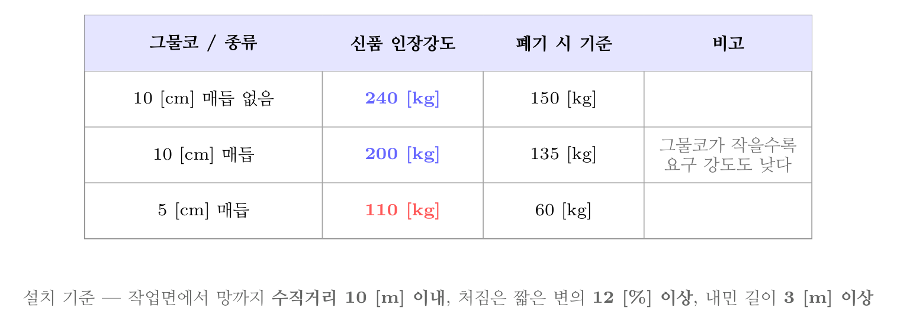
방망사 인장강도 — 그물코가 작을수록 요구 강도도 낮다
오답 분석
① 60 [kg]은 그물코 5 [cm] 매듭방망의 폐기 시 기준이다.
③ 150 [kg]은 그물코 10 [cm] 매듭방망의 폐기 시 기준이다.
④ 200 [kg]은 그물코 10 [cm] 매듭 없는 방망의 신품 기준이다.
관련 개념 · 암기
추락재해방지 표준안전작업지침 — 방망사의 인장강도「추락재해방지 표준안전작업지침」 및 방망 성능기준. 표로 붙든다 —
10 [cm] 매듭 없음 : 신품 240 / 폐기 150,
10 [cm] 매듭 : 신품 200 / 폐기 135,
5 [cm] 매듭 : 신품 110 / 폐기 60. 방망의 처짐은
짧은 변 길이의 12 [%] 이상, 작업면에서 망까지
수직거리 10 [m] 이내, 내민 길이는 벽면에서
3 [m] 이상이다.
◈ 암기 10 매듭없음 240/150 · 10 매듭 200/135 · 5 매듭 110/60.
🃏 관련 암기카드
분류: 가시설물 > 추락방호망·방망사 > 방망사 인장강도 · 원본 2015.03.08 · 2018.08.19 · 2021.08.14
105빈출도 ★☆☆난이도 2·보통개념형safe_A_2026_01_105
항타기 또는 항발기의 사용 시 준수사항으로 옳지 않은 것 은?
① 증기나 공기를 차단하는 장치를 작업관리자가 쉽게 조작 할 수 있는 위치에 설치한다.
② 해머의 운동에 의하여 증기호스 또는 공기호스와 해머의 접속부가 파손되거나 벗겨지는 것을 방지하기 위하여 그 접속부가 아닌 부위를 선정하여 증기호스 또는 공기호스 를 해머에 고정시킨다.
③ 항타기나 항발기의 권상장치의 드럼에 권상용 와이어로 프가 꼬인 경우에는 와이어로프에 하중을 걸어서는 안된 다.
④ 항타기나 항발기의 권상장치에 하중을 건 상태로 정지하 여 두는 경우에는 쐐기장치 또는 역회전방지용 브레이크 를 사용하여 제동하는 등 확실하게 정지시켜 두어야 한 다.
정답: 1
해설
차단장치는 운전자가 쉽게 조작할 수 있는 위치에 두어야 한다. 「작업관리자」가 아니다. 위험한 순간에 즉시 끊어야 하는 것은 기계를 직접 다루는 사람 이기 때문이다.
오답 분석
② 호스는 접속부가 아닌 부위를 골라 해머에 고정한다. 접속부에 힘이 걸리면 벗겨진다.
③ 권상용 와이어로프가 꼬였으면 하중을 걸어서는 안 된다.
④ 하중을 건 채 정지할 때는 쐐기장치나 역회전방지용 브레이크로 확실히 제동한다.
관련 개념 · 암기
안전보건규칙 제215조~제218조 — 항타기·항발기
안전보건규칙 제215조(권상용 와이어로프의 사용 금지)·제217조·제218조. 「누가 조작하는가」를 바꿔 놓는 것이 흔한 함정이다. 비상 조작은 언제나 그 자리에 있는 사람이 할 수 있어야 한다.
⚖ 근거 법령 — 산업안전보건기준에 관한 규칙 제215조 · 산업안전보건기준에 관한 규칙 제218조 · 산업안전보건기준에 관한 규칙 제217조산업안전보건기준에 관한 규칙 시행 2026. 3. 2.
제215조산업안전보건기준에 관한 규칙 · 시행 2026. 3. 2. ① 사업주는 항타기를 사용하여 말뚝 및 널말뚝 등을 끌어올리는 경우에는 그 훅 부분이 드럼 또는 도르래의 바로 아래에 위치하도록 하여 끌어올려야 한다.
② 항타기에 체인블록 등의 장치를 부착하여 말뚝 또는 널말뚝 등을 끌어 올리는 경우에는 제1항을 준용한다.
① 사업주는 압축공기를 동력원으로 하는 항타기나 항발기를 사용하는 경우에는 다음 각 호의 사항을 준수하여야 한다. <개정 2022.10.18>
1. 해머의 운동에 의하여 공기호스와 해머의 접속부가 파손되거나 벗겨지는 것을 방지하기 위하여 그 접속부가 아닌 부위를 선정하여 공기호스를 해머에 고정시킬 것
2. 공기를 차단하는 장치를 해머의 운전자가 쉽게 조작할 수 있는 위치에 설치할 것이 문항이 묻는 자리
② 사업주는 항타기나 항발기의 권상장치의 드럼에 권상용 와이어로프가 꼬인 경우에는 와이어로프에 하중을 걸어서는 아니 된다.
③ 사업주는 항타기나 항발기의 권상장치에 하중을 건 상태로 정지하여 두는 경우에는 쐐기장치 또는 역회전방지용 브레이크를 사용하여 제동하는 등 확실하게 정지시켜 두어야 한다.
분류: 건설공구·장비 > 다짐·항타 > 항타기·항발기 · 원본 2022.04.24
106빈출도 ★★☆난이도 1·쉬움개념형safe_A_2026_01_106
건설업 산업안전보건관리비 계상 및 사용기준은 산업재해 보상 보험법의 적용을 받는 공사 중 총 공사금액이 얼마 이상인 공사에 적용하는가? (단, 전기공사업법, 정보통신공 사업법에 의한 공사는 제외)
① 4천만원
② 3천만원
③ 2천만원
④ 1천만원
정답: 3
해설
총 공사금액 2천만원 이상인 공사에 적용한다.
오답 분석
① 4천만원이라는 기준은 없다.
② 3천만원이라는 기준은 없다.
④ 1천만원이라는 기준은 없다.
관련 개념 · 암기
산업안전보건법 제72조 — 산업안전보건관리비의 계상(건설공사 등의 산업안전보건관리비 계상 등), 「건설업 산업안전보건관리비 계상 및 사용기준」 고시. 흐름은
발주자가 계상 → 시공자가 사용 → 매월 사용명세서 작성 → 공사 종료 후 1년간 보존이다.
◈ 암기 총 공사금액 2천만원 이상.
⚠ 주의사항 계상기준과 사용항목이 고용노동부고시 제2024-53호(시행 2025. 1. 1.)로 개정됐다. 스마트 안전장비 구입·임대비와 심폐소생술 교육 등 비상시 대비 훈련비가 새로 사용 가능해졌으므로, 옛 기출의 「사용 불가」 선택지는 지금 기준으로 다시 봐야 한다.
⚖ 근거 법령 — 산업안전보건법 제72조산업안전보건법 시행 2026. 8. 1.
① 건설공사발주자가 도급계약을 체결하거나 건설공사의 시공을 주도하여 총괄ㆍ관리하는 자(건설공사발주자로부터 건설공사를 최초로 도급받은 수급인은 제외한다)가 건설공사 사업 계획을 수립할 때에는 고용노동부장관이 정하여 고시하는 바에 따라 산업재해 예방을 위하여 사용하는 비용(이하 "산업안전보건관리비"라 한다)을 도급금액 또는 사업비에 계상(計上)하여야 한다. <개정 2020.6.9>이 문항이 묻는 자리
② 고용노동부장관은 산업안전보건관리비의 효율적인 사용을 위하여 다음 각 호의 사항을 정할 수 있다.
1. 사업의 규모별ㆍ종류별 계상 기준
2. 건설공사의 진척 정도에 따른 사용비율 등 기준
3. 그 밖에 산업안전보건관리비의 사용에 필요한 사항
③ 건설공사도급인은 산업안전보건관리비를 제2항에서 정하는 바에 따라 사용하고 고용노동부령으로 정하는 바에 따라 그 사용명세서를 작성하여 보존하여야 한다. <개정 2020.6.9>
④ 선박의 건조 또는 수리를 최초로 도급받은 수급인은 사업 계획을 수립할 때에는 고용노동부장관이 정하여 고시하는 바에 따라 산업안전보건관리비를 사업비에 계상하여야 한다.
⑤ 건설공사도급인 또는 제4항에 따른 선박의 건조 또는 수리를 최초로 도급받은 수급인은 산업안전보건관리비를 산업재해 예방 외의 목적으로 사용해서는 아니 된다. <개정 2020.6.9>
분류: 건설공사 안전개요 > 계획·관리비 > 산업안전보건관리비 · 원본 2019.08.04 · 2022.04.24
107빈출도 ★☆☆난이도 1·쉬움개념형safe_A_2026_01_107
토사붕괴 원인으로 옳지 않은 것은?
① 경사 및 기울기 증가
② 성토높이의 증가
③ 건설기계 등 하중작용
④ 토사중량의 감소
정답: 4
해설
토사 중량이 줄면 무너뜨리려는 힘도 줄어 오히려 안정해진다. 붕괴는 무너뜨리려는 힘(활동력)이 버티는 힘(전단저항)을 넘을 때 일어나므로, 중량 감소는 원인이 아니다.
오답 분석
① 경사가 급해지면 활동력이 커진다.
② 성토를 높이면 하중이 늘어난다.
③ 건설기계의 하중도 활동력을 키운다.
관련 개념 · 암기
토사붕괴의 원인 — 활동력과 전단저항붕괴의 힘겨루기.
활동력(중량 · 경사 · 상재하중 · 진동 · 수압)이
전단저항(점착력 c + 마찰 σtanφ)을 넘으면 무너진다. 대책도 이 틀에서 나온다 —
기울기 완화와 하중 제거(활동력 줄이기),
배수(수압 줄이기),
흙막이·억지말뚝(저항 늘리기).
◈ 암기 활동력이 전단저항을 넘으면 무너진다 — 중량 감소는 오히려 안정.
🃏 관련 암기카드
분류: 건설공사 안전개요 > 사면·붕괴 > 토사 붕괴 · 원본 2022.04.24
108빈출도 ★☆☆난이도 2·보통개념형safe_A_2026_01_108
건설용 리프트의 붕괴 등을 방지하기 위해 받침의 수를 증 가 시키는 등 안전조치를 하여야 하는 순간풍속 기준은?
① 초당 15미터 초과
② 초당 25미터 초과
③ 초당 35미터 초과
④ 초당 45미터 초과
정답: 3
해설
순간풍속이 초당 35 [m]를 초과할 우려가 있으면 받침의 수를 늘리는 등 붕괴 방지 조치를 한다.
순간풍속에 따른 조치
| 풍속 | 조치 | 근거 |
|---|
| 10 [m/s] 초과 | 타워크레인 설치·수리·점검·해체 중지 | 규칙 제37조 |
| 15 [m/s] 초과 | 타워크레인 운전작업 중지 | 규칙 제37조 |
| 30 [m/s] 초과 | 옥외 주행크레인 이탈방지장치 작동 | 규칙 제140조 |
| 35 [m/s] 초과 | 건설용 리프트 붕괴 방지 조치 | 규칙 제154조 |

강풍 시 조치 기준 — 작업 중지는 낮은 값, 구조물 보호는 높은 값
오답 분석
① 초당 15 [m]는 타워크레인 운전작업 중지 기준이다.
② 초당 25 [m]라는 기준은 없다.
④ 초당 45 [m]라는 기준은 없다.
관련 개념 · 암기
안전보건규칙 제154조 — 강풍 시 붕괴 방지안전보건규칙 제154조(붕괴 등의 방지). 풍속 숫자 묶음 —
10 [m/s] 초과 타워크레인 설치·해체 중지 · 15 [m/s] 초과 타워크레인 운전 중지 · 30 [m/s] 초과 옥외 주행크레인 이탈방지장치 작동 · 35 [m/s] 초과 건설용 리프트 붕괴 방지 조치. 「
작업 중지는 낮은 값, 구조물 보호는 높은 값」으로 갈린다.
◈ 암기 10 설치해체 · 15 운전 · 30 이탈방지 · 35 리프트.
⚖ 근거 법령 — 산업안전보건기준에 관한 규칙 제154조산업안전보건기준에 관한 규칙 시행 2026. 3. 2.
① 사업주는 지반침하, 불량한 자재사용 또는 헐거운 결선(結線) 등으로 리프트가 붕괴되거나 넘어지지 않도록 필요한 조치를 하여야 한다.
② 사업주는 순간풍속이 초당 35미터를 초과하는 바람이 불어올 우려가 있는 경우 건설용 리프트(지하에 설치되어 있는 것은 제외한다)에 대하여 받침의 수를 증가시키는 등 그 붕괴 등을 방지하기 위한 조치를 하여야 한다. <개정 2022.10.18>이 문항이 묻는 자리
분류: 건설공사 안전개요 > 사면·붕괴 > 강풍 시 조치 · 원본 2022.04.24
109빈출도 ★★☆난이도 1·쉬움개념형safe_A_2026_01_109
건설업 산업안전보건관리비 계상 및 사용기준에 따른 안전 관리비의 개인보호구 및 안전장구 구입비 항목에서 안전관 리비로 사용이 가능한 경우는?
① 안전·보건관리자가 선임되지 않은 현장에서 안전·보건업 무를 담당하는 현장관계자용 무전기, 카메라, 컴퓨터, 프 린터 등 업무용 기기
② 혹한·혹서에 장기간 노출로 인해 건강장해를 일으킬 우 려가 있는 경우 특정 근로자에게 지급되는 기능성 보호 장구
③ 근로자에게 일률적으로 지급하는 보냉·보온장구
④ 감리원이나 외부에서 방문하는 인사에게 지급하는 보호 구
정답: 2
해설
혹한·혹서에 오래 노출되어 건강장해가 우려되는 특정 근로자에게 주는 기능성 보호장구는 쓸 수 있다. 「특정 위험에 노출된 특정 근로자를 지키기 위한 것」이라는 점이 갈림길이다.
오답 분석
① 업무용 기기는 안전관리 업무에 쓰더라도 일반 업무용이라 쓸 수 없다.
③ 일률적으로 지급하는 보냉·보온장구는 복리후생 성격이라 쓸 수 없다.
④ 감리원이나 방문객에게 주는 보호구는 그 현장 근로자용이 아니라 쓸 수 없다.
관련 개념 · 암기
산업안전보건관리비 계상 및 사용기준 고시판단 기준은 하나 — 「
그 현장 근로자의 안전·보건을 위해 특정하게 쓰이는가」.
◈ 암기 일률 지급 · 복리후생 · 일반 업무용 · 외부인용이면 못 쓴다.
⚠ 주의사항 고시 제2024-53호(2025. 1. 1. 시행)로 사용항목이 넓어졌다. 스마트 안전장비 구입·임대비와 심폐소생술 교육비 등이 새로 들어왔으므로, 2024년 이전 기출의 「사용 불가」 판단은 항목별로 다시 확인해야 한다.
🃏 관련 암기카드
분류: 건설공사 안전개요 > 계획·관리비 > 산업안전보건관리비 사용 · 원본 2018.04.28 · 2022.03.05
110빈출도 ★☆☆난이도 1·쉬움개념형safe_A_2026_01_110
흙막이벽 근입깊이를 깊게하고, 전면의 굴착부분을 남겨두 어 흙의 중량으로 대항하게 하거나, 굴착예정부분의 일부 를 미리 굴착하여 기초콘크리트를 타설하는 등의 대책과 가장 관계가 깊은 것은?
① 파이핑현상이 있을 때
② 히빙현상이 있을 때
③ 지하수위가 높을 때
④ 굴착깊이가 깊을 때
정답: 2
해설
히빙(heaving) 대책이다. 연약한 점토지반에서 배면 흙의 무게에 눌려 굴착 바닥이 부풀어 오르는 현상이므로, 근입깊이를 늘려 흙이 돌아 들어오는 길을 막고, 앞쪽 흙을 남겨 두어 그 무게로 눌러 주는 것이 대책이 된다.
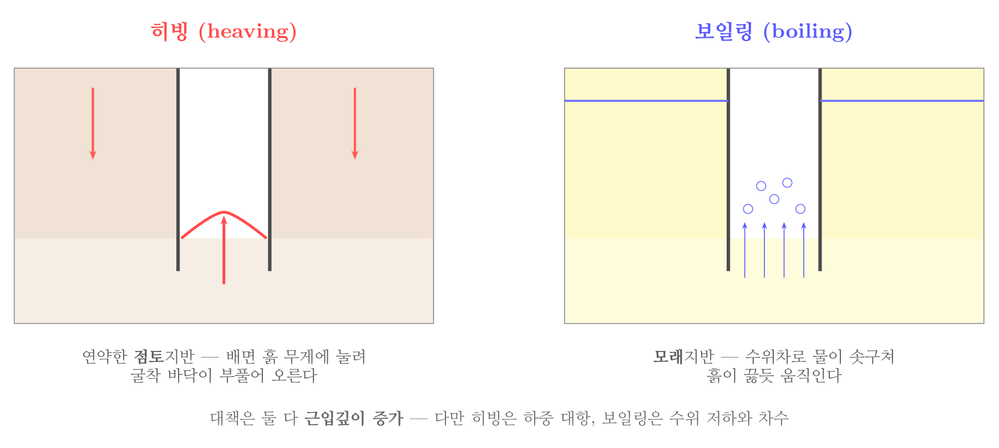
히빙과 보일링 — 점토냐 모래냐로 갈린다
오답 분석
① 파이핑은 모래지반에서 물길이 뚫리는 현상으로, 차수와 수위 저하가 주된 대책이다.
③ 지하수위가 높은 것은 보일링·파이핑 쪽 조건이다.
④ 굴착깊이만으로는 어느 현상인지 가려지지 않는다.
관련 개념 · 암기
히빙(heaving)과 그 대책지반으로 가른다.
점토지반은 히빙(무게에 눌려 바닥이 솟음),
모래지반은 보일링·파이핑(물이 솟구쳐 흙이 끓음). 대책은 둘 다
근입깊이 증가가 공통이지만, 히빙은
하중 대항, 보일링은
수위 저하와 차수에 무게를 둔다.
◈ 암기 점토는 히빙, 모래는 보일링. 대책은 둘 다 근입깊이 증가.
🃏 관련 암기카드
분류: 건설공사 안전개요 > 지하수·배수 > 히빙 · 원본 2022.03.05
111빈출도 ★☆☆난이도 1·쉬움개념형safe_A_2026_01_111
사면지반 개량공법으로 옳지 않은 것은?
① 전기 화학적 공법
② 석회 안정처리 공법
③ 이온 교환 방법
④ 옹벽 공법
정답: 4
해설
옹벽 공법은 구조물을 세워 흙을 붙들어 두는 구조물 보강공법이다. 흙 자체의 성질을 좋게 하는 지반 개량공법이 아니다.
사면 안정공법 두 갈래
| 갈래 | 무엇을 하나 | 보기 |
|---|
| 지반 개량공법 | 흙 자체를 좋게 만든다 | 전기화학적 · 석회 안정처리 · 이온교환 · 주입 |
| 구조물 보강공법 | 구조물로 흙을 붙든다 | 옹벽 · 억지말뚝 · 앵커 · 록볼트 |
오답 분석
① 전기 화학적 공법은 지반 개량공법이다.
② 석회 안정처리 공법도 지반 개량공법이다.
③ 이온 교환 방법도 지반 개량공법이다.
관련 개념 · 암기
사면 안정공법의 분류여기에
억제공(사면 기울기 완화·배수)을 더해 세 갈래로 보기도 한다. 배수는 간극수압을 낮추는 가장 값싼 대책이다.
◈ 암기 흙을 고치면 개량, 구조물로 붙들면 보강.
🃏 관련 암기카드
분류: 건설공사 안전개요 > 지반·토질 > 사면 안정공법 · 원본 2022.03.05
112빈출도 ★★★난이도 2·보통개념형safe_A_2026_01_112
이동식 비계를 조립하여 작업을 하는 경우의 준수기준으로 옳지 않은 것은?
① 비계의 최상부에서 작업을 할 때에는 안전난간을 설치하 여야 한다.
② 작업발판의 최대적재하중은 400kg을 초과하지 않도록 한다.
③ 승강용 사다리는 견고하게 설치하여야 한다.
④ 작업발판은 항상 수평을 유지하고 작업발판 위에서 안전 난간을 딛고 작업을 하거나 받침대 또는 사다리를 사용 하여 작업하지 않도록 한다.
정답: 2
해설
이동식 비계 작업발판의 최대적재하중은 250 [kg]을 초과하지 않도록 한다. 400 [kg]은 강관비계의 비계기둥 간 적재하중 기준이라 서로 다른 값이다.
오답 분석
① 최상부에서 작업할 때는 안전난간을 설치한다.
③ 승강용 사다리를 견고하게 설치한다.
④ 작업발판은 수평을 유지하고, 그 위에서 난간을 딛거나 사다리를 얹어 쓰지 않는다.
관련 개념 · 암기
안전보건규칙 제68조 — 이동식 비계안전보건규칙 제68조(이동식 비계). 그 밖에
바퀴에 브레이크·쐐기 등으로 갑작스러운 이동을 막고, 아웃트리거를 설치하며, 사람이나 짐을 실은 채 이동하지 않는다. 「
이동식 250, 강관비계 400」을 갈라 둔다.
◈ 암기 이동식 250 [kg], 강관비계 400 [kg].
⚖ 근거 법령 — 산업안전보건기준에 관한 규칙 제68조산업안전보건기준에 관한 규칙 시행 2026. 3. 2.
사업주는 이동식비계를 조립하여 작업을 하는 경우에는 다음 각 호의 사항을 준수하여야 한다. <개정 2019.10.15, 2024.6.28>
1. 이동식비계의 바퀴에는 뜻밖의 갑작스러운 이동 또는 전도를 방지하기 위하여 브레이크ㆍ쐐기 등으로 바퀴를 고정시킨 다음 비계의 일부를 견고한 시설물에 고정하거나 아웃트리거를 설치하는 등 필요한 조치를 할 것이 문항이 묻는 자리
2. 승강용사다리는 견고하게 설치할 것
3. 비계의 최상부에서 작업을 하는 경우에는 안전난간을 설치할 것
4. 작업발판은 항상 수평을 유지하고 작업발판 위에서 안전난간을 딛고 작업을 하거나 받침대 또는 사다리를 사용하여 작업하지 않도록 할 것
5. 작업발판의 최대적재하중은 250킬로그램을 초과하지 않도록 할 것이 문항이 묻는 자리
분류: 건설재해 대책 > 추락 > 이동식 비계 · 원본 2014.05.25 · 2014.08.17 · 2017.08.26 · 2018.08.19 · 2021.03.07 · 2022.04.24
113빈출도 ★☆☆난이도 2·보통개념형safe_A_2026_01_113
가설공사 표준안전 작업지침에 따른 통로발판을 설치하여 사용함에 있어 준수사항으로 옳지 않은 것은?
① 추락의 위험이 있는 곳에는 안전난간이나 철책을 설치하 여야 한다.
② 작업발판의 최대폭은 1.6m 이내이어야 한다.
③ 비계발판의 구조에 따라 최대 적재하중을 정하고 이를 초과하지 않도록 하여야 한다.
④ 발판을 겹쳐 이음하는 경우 장선 위에서 이음을 하고 겹 침길이는 10cm 이상으로 하여야 한다.
정답: 4
해설
겹침길이는 20 [cm] 이상 이어야 한다. 10 [cm] 로는 발판이 밀려 빠질 수 있다. 장선 위에서 이음 한다는 조건은 맞다.
오답 분석
① 추락 위험이 있는 곳에는 안전난간이나 철책을 설치한다.
② 작업발판의 최대폭은 1.6 [m] 이내로 한다.
③ 구조에 따라 최대 적재하중을 정하고 지킨다.
관련 개념 · 암기
가설공사 표준안전작업지침 — 통로발판발판 관련 숫자.
작업발판 폭 40 [cm] 이상(달비계는 20 [cm] 이상) · 발판재료 간 틈 3 [cm] 이하 · 통로발판 최대폭 1.6 [m] 이내 · 겹침이음 20 [cm] 이상. 「
40과 3」, 「
1.6과 20」을 각각 묶어 둔다.
◈ 암기 폭 40 · 틈 3, 통로발판 최대폭 1.6 [m] · 겹침 20 [cm].
🃏 관련 암기카드
분류: 건설재해 대책 > 추락 > 통로발판 · 원본 2022.04.24
114빈출도 ★☆☆난이도 2·보통개념형safe_A_2026_01_114
철골건립준비를 할 때 준수하여야 할 사항으로 옳지 않은 것은?
① 지상 작업장에서 건립준비 및 기계기구를 배치할 경우에 는 낙하물의 위험이 없는 평탄한 장소를 선정하여 정비 하여야 한다.
② 건립작업에 다소 지장이 있다하더라도 수목은 제거하거 나 이설하여서는 안된다.
③ 사용전에 기계기구에 대한 정비 및 보수를 철저히 실시 하여야 한다.
④ 기계에 부착된 앵카 등 고정장치와 기초구조 등을 확인 하여야 한다.
정답: 2
해설
건립작업에 지장이 되는 수목은 제거하거나 옮겨 심어야 한다. 나무가 걸리적거리면 크레인 붐이 닿거나 부재가 걸려 사고가 난다.
오답 분석
① 낙하물 위험이 없는 평탄한 장소를 골라 정비한다.
③ 사용 전에 기계기구를 정비·보수한다.
④ 앵커 등 고정장치와 기초구조를 확인한다.
관련 개념 · 암기
철골공사의 건립준비
철골공사의 준비 단계. 「부지 정리 · 수목 정리 · 인접 구조물 조사 · 기계 정비 · 고정장치 확인」. 철골 건립작업을 중지해야 하는 기상 조건도 함께 붙든다 — 풍속 10 [m/s] 이상 · 강우량 1 [mm/h] 이상 · 강설량 1 [cm/h] 이상.
🃏 관련 암기카드
분류: 구조물공사 > 말뚝·기초 > 철골공사 · 원본 2022.04.24
115빈출도 ★☆☆난이도 1·쉬움개념형safe_A_2026_01_115
토사붕괴에 따른 재해를 방지하기 위한 흙막이 지보공 부 재로 옳지 않은 것은?
정답: 3
해설
턴버클은 와이어로프나 강봉의 길이를 조절하고 팽팽하게 당기는 부속품이지 흙막이 지보공의 부재가 아니다.
흙막이 지보공의 구성과 점검
| 부재 | 하는 일 | 정기점검 항목 |
|---|
| 흙막이판 | 흙이 무너져 들어오는 것을 직접 막음 | 손상·변형·부식·변위·탈락 |
| 말뚝 (엄지말뚝) | 흙막이판을 지지하는 기둥 | 위와 같음 |
| 띠장 | 말뚝을 가로로 이어 힘을 전달 | 접속부·부착부·교차부의 상태 |
| 버팀보 / 어스앵커 | 띠장이 받은 힘을 최종 지지 | 버팀대의 긴압 정도 |
오답 분석
① 흙막이판은 흙이 무너져 들어오는 것을 직접 막는 판이다.
② 말뚝(엄지말뚝·H-pile)은 흙막이판을 지지하는 기둥이다.
④ 띠장은 말뚝을 가로로 이어 버팀보에 힘을 전달하는 부재다.
관련 개념 · 암기
흙막이 지보공의 구성과 정기점검흙막이 지보공의 구성.
흙막이판 → 말뚝(엄지말뚝) → 띠장 → 버팀보(또는 어스앵커) 순으로 힘이 전달된다. 정기점검 항목은
부재의 손상·변형·부식·변위·탈락 · 버팀대의 긴압 정도 · 부재 접속부·부착부·교차부의 상태 · 침하 정도 네 가지다.
◈ 암기 흙막이판 → 말뚝 → 띠장 → 버팀보 순으로 힘이 전달된다.
🃏 관련 암기카드
분류: 구조물공사 > 말뚝·기초 > 흙막이 지보공 · 원본 2022.04.24
116빈출도 ★☆☆난이도 2·보통개념형safe_A_2026_01_116
가설구조물의 특징으로 옳지 않은 것은?
① 연결재가 적은 구조로 되기 쉽다.
② 부재 결합이 간략하여 불안전 결합이다.
③ 구조물이라는 개념이 확고하여 조립의 정밀도가 높다.
④ 사용부재는 과소단면이거나 결함재가 되기 쉽다.
정답: 3
해설
오히려 반대다. 가설구조물은 임시로 쓰는 것이라는 인식 탓에 구조물이라는 개념이 흐릿하고, 조립의 정밀도가 낮다. 이것이 가설구조물 붕괴 사고의 뿌리다.
오답 분석
① 연결재가 적은 구조가 되기 쉽다.
② 부재 결합이 간단해 불안전한 결합이 되기 쉽다.
④ 사용 부재가 단면이 작거나 이미 손상된 것이 되기 쉽다.
관련 개념 · 암기
가설구조물의 특징
가설구조물의 4대 문제. 연결재 부족 · 불안전 결합 · 정밀도 낮음 · 부재 불량. 뿌리는 「어차피 임시니까」라는 인식이다. 그래서 법은 조립도 작성과 정기점검을 강제하고, 일정 규모 이상이면 설계변경 요청 제도까지 두었다.
🃏 관련 암기카드
분류: 건설재해 대책 > 추락 > 가설구조물 · 원본 2022.04.24
117빈출도 ★☆☆난이도 1·쉬움개념형safe_A_2026_01_117
건설작업용 타워크레인의 안전장치로 옳지 않은 것은?
① 권과 방지장치
② 과부하 방지장치
③ 비상정지 장치
④ 호이스트 스위치
정답: 4
해설
호이스트 스위치는 화물을 올리고 내리는 조작 스위치이지 안전장치가 아니다.
오답 분석
① 권과방지장치는 훅이 지나치게 감겨 올라가는 것을 막는다.
② 과부하방지장치는 정격하중을 넘으면 동작을 멈춘다.
③ 비상정지장치는 즉시 정지시킨다.
관련 개념 · 암기
안전보건규칙 제134조 — 타워크레인의 방호장치방호장치는
권과방지 · 과부하방지 · 비상정지 · 제동장치이며, 여기에 선회 제한 리밋 스위치·트롤리 내외측 제어장치·훅 해지장치가 더해진다.
◈ 암기 조작하는 것인가, 막아 주는 것인가로 가른다.
⚖ 근거 법령 — 산업안전보건기준에 관한 규칙 제134조산업안전보건기준에 관한 규칙 시행 2026. 3. 2.
① 사업주는 다음 각 호의 양중기에 과부하방지장치, 권과방지장치(捲過防止裝置), 비상정지장치 및 제동장치, 그 밖의 방호장치[(승강기의 파이널 리미트 스위치(final limit switch), 속도조절기, 출입문 인터 록(inter lock) 등을 말한다]가 정상적으로 작동될 수 있도록 미리 조정해 두어야 한다. <개정 2017.3.3, 2019.4.19>이 문항이 묻는 자리
1. 크레인
2. 이동식 크레인
3. 삭제<2019.4.19>
4. 리프트
5. 곤돌라
6. 승강기
② 제1항제1호 및 제2호의 양중기에 대한 권과방지장치는 훅ㆍ버킷 등 달기구의 윗면(그 달기구에 권상용 도르래가 설치된 경우에는 권상용 도르래의 윗면)이 드럼, 상부 도르래, 트롤리프레임 등 권상장치의 아랫면과 접촉할 우려가 있는 경우에 그 간격이 0.25미터 이상[(직동식(直動式) 권과방지장치는 0.05미터 이상으로 한다)]이 되도록 조정하여야 한다.
③ 제2항의 권과방지장치를 설치하지 않은 크레인에 대해서는 권상용 와이어로프에 위험표시를 하고 경보장치를 설치하는 등 권상용 와이어로프가 지나치게 감겨서 근로자가 위험해질 상황을 방지하기 위한 조치를 하여야 한다.
분류: 양중·해체 > 양중작업 > 타워크레인 안전장치 · 원본 2022.04.24
118빈출도 ★★☆난이도 2·보통개념형safe_A_2026_01_118
옥외에 설치되어 있는 주행크레인에 대하여 이탈방지장치 를 작동시키는 등 그 이탈을 방지하기 위한 조치를 하여야 하는 순간풍속에 대한 기준으로 옳은 것은?
① 순간풍속이 초당 10m를 초과하는 바람이 불어올 우려가 있는 경우
② 순간풍속이 초당 20m를 초과하는 바람이 불어올 우려가 있는 경우
③ 순간풍속이 초당 30m를 초과하는 바람이 불어올 우려가 있는 경우
④ 순간풍속이 초당 40m를 초과하는 바람이 불어올 우려가 있는 경우
정답: 3
해설
순간풍속이 초당 30 [m]를 초과할 우려가 있으면 옥외 주행크레인의 이탈방지장치를 작동시킨다.
순간풍속에 따른 조치
| 풍속 | 조치 | 근거 |
|---|
| 10 [m/s] 초과 | 타워크레인 설치·수리·점검·해체 중지 | 규칙 제37조 |
| 15 [m/s] 초과 | 타워크레인 운전작업 중지 | 규칙 제37조 |
| 30 [m/s] 초과 | 옥외 주행크레인 이탈방지장치 작동 | 규칙 제140조 |
| 35 [m/s] 초과 | 건설용 리프트 붕괴 방지 조치 | 규칙 제154조 |
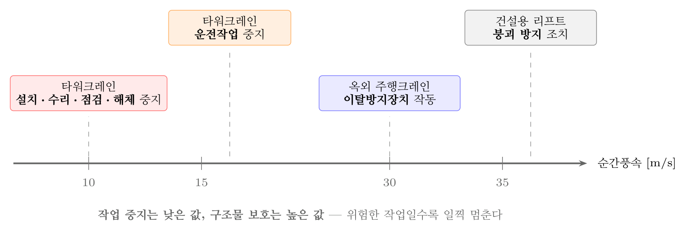
강풍 시 조치 기준 — 작업 중지는 낮은 값, 구조물 보호는 높은 값
오답 분석
① 초당 10 [m]는 타워크레인 설치·해체 중지 기준이다.
② 초당 20 [m]라는 기준은 없다.
④ 초당 40 [m]라는 기준도 없다.
관련 개념 · 암기
안전보건규칙 제140조 — 폭풍에 의한 이탈 방지사람이 하는 작업은 낮은 풍속에서 멈추게 하고, 구조물을 지키는 조치는 높은 풍속에서 한다.
◈ 암기 10 설치해체 · 15 운전 · 30 이탈방지 · 35 리프트.
⚖ 근거 법령 — 산업안전보건기준에 관한 규칙 제140조산업안전보건기준에 관한 규칙 시행 2026. 3. 2.
제140조(폭풍에 의한 이탈 방지) 사업주는 순간풍속이 초당 30미터를 초과하는 바람이 불어올 우려가 있는 경우 옥외에 설치되어 있는 주행 크레인에 대하여 이탈방지장치를 작동시키는 등 이탈 방지를 위한 조치를 하여야 한다.이 문항이 묻는 자리
분류: 양중·해체 > 양중작업 > 강풍 시 조치 · 원본 2017.08.26 · 2022.03.05
119빈출도 ★★☆난이도 1·쉬움개념형safe_A_2026_01_119
흙 속의 전단응력을 증대시키는 원인에 해당하지 않는 것 은?
① 자연 또는 인공에 의한 지하공동의 형성
② 함수비의 감소에 따른 흙의 단위체적 중량의 감소
③ 지진, 폭파에 의한 진동 발생
④ 균열내에 작용하는 수압증가
정답: 2
해설
흙이 마르면 무게가 줄어 무너뜨리려는 힘도 줄어든다. 전단응력을 키우는 것이 아니라 낮추는 쪽이다.
오답 분석
① 지하공동이 생기면 위쪽 흙을 받치지 못해 응력이 커진다.
③ 진동은 순간적으로 큰 힘을 더한다.
④ 균열 속 수압은 흙을 밀어내 응력을 키운다.
관련 개념 · 암기
전단응력을 키우는 원인과 전단강도를 낮추는 원인붕괴는
전단응력(무너뜨리려는 힘)이 전단강도(버티는 힘)를 넘을 때 일어난다. 전단응력을 키우는 것은 하중 증가·경사 증가·진동·수압이고, 전단강도를 낮추는 것은 함수비 증가·간극수압 상승·점착력 감소다.
◈ 암기 무게가 늘면 응력이 커지고, 물이 스며들면 강도가 낮아진다.
🃏 관련 암기카드
분류: 건설공사 안전개요 > 지반·토질 > 토사 붕괴 · 원본 2011.06.12 · 2021.08.14
120빈출도 ★★★난이도 1·쉬움개념형safe_A_2026_01_120
콘크리트 타설작업을 하는 경우 준수하여야 할 사항으로 옳지 않은 것은?
① 당일의 작업을 시작하기 전에 해당 작업에 관한 거푸집 동바리등의 변형ㆍ변위 및 지반의 침하 유무 등을 점검 하고 이상이 있으면 보수할 것
② 콘크리트를 타설하는 경우에는 편심이 발생하지 않도록 골고루 분산하여 타설할 것
③ 설계도서상의 콘크리트 양생기간을 준수하여 거푸집동바 리등을 해체할 것
④ 작업 중에는 거푸집동바리등의 변형ㆍ변위 및 침하 유무 등을 감시할 수 있는 감시자를 배치하여 이상이 있으면 작업을 중지하지 아니하고, 즉시 충분한 보강조치를 실
정답: 4
해설
이상이 발견되면 작업을 중지하고 근로자를 대피시킨 뒤 보강한다. 「중지하지 아니하고 보강」은 사람을 위험 속에 두는 것이라 조문과 반대다.
오답 분석
① 작업 시작 전 거푸집 동바리와 지반 침하를 점검하고 보수한다.
② 편심이 생기지 않도록 골고루 나누어 붓는다.
③ 설계도서의 양생기간을 지켜 해체한다.
관련 개념 · 암기
안전보건규칙 제334조 — 콘크리트 타설작업거푸집 붕괴의 대표 원인이
집중 타설과 과속 타설이다. 한 곳에 몰아 부으면 측압이 급격히 커진다.
◈ 암기 이상이 보이면 먼저 멈추고 대피, 보강은 그다음.
⚖ 근거 법령 — 산업안전보건기준에 관한 규칙 제334조산업안전보건기준에 관한 규칙 시행 2026. 3. 2.
사업주는 콘크리트 타설작업을 하는 경우에는 다음 각 호의 사항을 준수해야 한다. <개정 2023.11.14>
1. 당일의 작업을 시작하기 전에 해당 작업에 관한 거푸집 및 동바리의 변형ㆍ변위 및 지반의 침하 유무 등을 점검하고 이상이 있으면 보수할 것
2. 작업 중에는 감시자를 배치하는 등의 방법으로 거푸집 및 동바리의 변형ㆍ변위 및 침하 유무 등을 확인해야 하며, 이상이 있으면 작업을 중지하고 근로자를 대피시킬 것이 문항이 묻는 자리
3. 콘크리트 타설작업 시 거푸집 붕괴의 위험이 발생할 우려가 있으면 충분한 보강조치를 할 것
4. 설계도서상의 콘크리트 양생기간을 준수하여 거푸집 및 동바리를 해체할 것
5. 콘크리트를 타설하는 경우에는 편심이 발생하지 않도록 골고루 분산하여 타설할 것
분류: 건설공사 안전개요 > 지반·토질 > 콘크리트 타설 · 원본 2012.03.04 · 2016.05.08 · 2021.08.14